京张水准线：让机器人与AI公共服务在城市里可被复测
水准测量的方法论不是「测得准」，是「测得回来」：绕一周回到原点，闭合差超限则整段重测。本方案把这条规矩用在读数错了会伤到人的地方——低速机器人、自动驾驶接驳与AI医疗教育法律生活服务。全线布设分级水准点与两条附合路线，F1类场景必须先在受控测试场取得闭合合格才能进入公共服务，且永远保留无AI等价路径。同一台仪器转向本次征集自身，对全部已合入方案做了十七次可重跑普查（184→793 份，逐次读数随包），数据与结论作为评审助手一并公开。所有空间建议均为概念建议，基于临时边界，不替代法定规划。
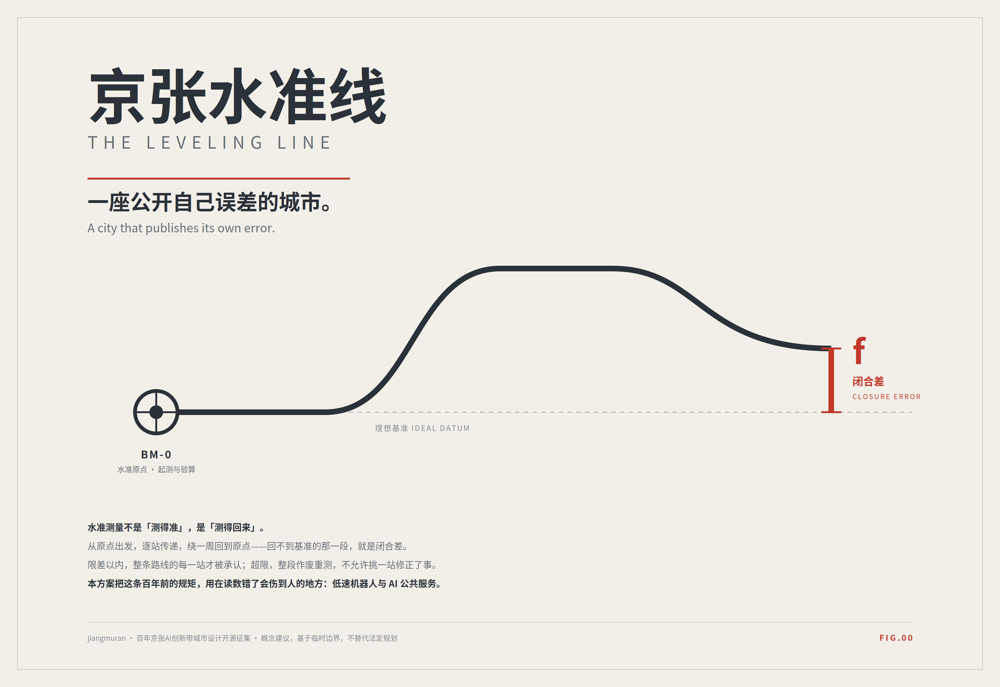
京张水准线：让机器人与AI公共服务在城市里可被复测
一百年前，詹天佑修京张铁路做的第一件事不是开山，是测量。
而水准测量真正的方法论不在于「测得准」，在于「测得回来」——从已知点出发，沿路线逐站传递高程，绕一周回到原点。回到原点时的差值叫闭合差。闭合差在限差以内，整条路线的每一站才被承认；超限，整段作废重测，不允许挑一站修正了事。
一台在写字楼里答错问题的模型，代价是一次返工。一台在人行道上判断错的配送机器人，代价是一个人的脚踝。一个把用药建议说错的健康导航，代价可能无法挽回。
所以本方案不从「城市治理」讲起，从读数错了会伤到人的地方讲起。 低速机器人与自动驾驶接驳、AI医疗教育法律与生活服务——这两类场景在真实世界里最需要一件事：不是更聪明的模型，而是一套能证明它测得回来的制度。
水准网提供的正是这个。不凭单次表现有多好。凭它测得回来。
一页执行摘要
| 评审会问 | 本方案的回答 | 可核验的东西 |
|---|---|---|
| 核心命题是什么 | 信任不来自单次精度，来自测得回来：绕一周回到原点，闭合差超限则整段重测，不允许挑一站修正 | node visual/assets/check_closure.js 与 run_s08_tabletop.js——机制可被独立执行，10/10 用例含 8 个拒绝分支 |
| 为什么用在这两条赛道 | 因为读数错了会伤到人。实测机器人 41/793（5.2%，八条赛道中最薄）、AI公共服务 92 份（第三薄，次薄为青年友好 72 份） | visual/assets/field_map.json，普查脚本可重跑 |
| 空间上做了什么 | 一条主脊 9,443 m、8 个分级水准点、3 处重点区、七类用地完整剖分（无重叠无缺口，逐点验证） | 九个 GeoJSON 图层 + node visual/assets/verify.js 独立重算全部一类指标 |
| 三条红线凭什么可执行 | 不凭设计者善意，凭现行法规：无障碍环境建设法第三十九条、生成式AI暂行办法第十四条与第十五条、国办发〔2020〕45号 | sources.json 中 evidence_class: regulatory_baseline 三条，含条号与取证方式 |
| 公共价值落在谁身上 | 画像 P4–P7 是取读数的人而非受益人清单；居民可就影响自己的判断发起复测，落在离家最近的三等点 | 十二张场景卡的人工复核点与退出条件；geometry/public_space.geojson 八个测点全部跨管辖 |
| 近期能做什么 | 四周闭合试验（S08/RT-N/F3），不依赖任何未公开官方数据；R1–R3、R8 四项同样不依赖 | 更新项目表含责任角色、前置、成本区间、KPI 与退出条件 |
| 刻意不给什么 | 容积率、建筑高度、密度、退线、道路红线、任何拆除结论、任何居民搬迁建议 | metrics.json 中该类指标状态 unknown 并记录前置条件 |
| 方法的边界在哪 | 闭合差测一致性，测不出「有没有用」；反事实需要对照街段，本方案不提供那一半 | 机制第 8 条如实写明，并点名一份在该点更完备的方案 |
| 数据可信到什么程度 | 边界为临时替代边界，官方 polygon 发布后整体重算而非逐个替换；自采数据一律 background_only | OSM 交叉核验显示本方案主脊距实测公园 1,116.7 m——对自己不利的读数也照登 |
一个人的一天：这套机制在街上是什么样子
机制写成规则容易，写成一个人的早晨才知道它有没有用。以下是画像 P4——一位 72 岁、听力不好、不用智能手机的居民——在这条带上的一天。她不是受益人清单里的一行，她是这套机制的启动者。
8:40，社区服务中心（BM-303，三等水准点）。 她要问一件具体的事：换了新药之后，原来的药还能不能一起吃。窗口的 AI 健康导航给了一段说明。她没听清「间隔」两个字，按自己的理解记下了。这里不需要任何人做错事，误差就已经产生了——这正是平均正确率测不到的那一类。
同一天，另外两处。 同一组公开问题，被另外两个人在另外两个水准点问了同样一遍：一位社工在 BM-0，一位国际访客在 BM-1。三处的回答在措辞上都合理，但在「要不要间隔、间隔多久」这一点上给出了会导致不同行动的差别。
四周后，回到 BM-0 复算。 三站读数的最大偏离就是这一期的闭合差 f。它超过了这条场景的限差 F。按机制第 4 条（完整定义见后文），整段路线退回复测，该场景降级为无AI等价路径——窗口挂出纸质流程与人工转介，服务不中断。按第 5 条，不允许只去修正表现最差的那一站。
她能做什么。 她可以就影响自己的那一次判断，要求一次复测；结果与原读数一并公开（脱敏）。这条权利落在她家最近的三等点上——把复核权放在需要走十五分钟才能到的专门机构，等于没有给。
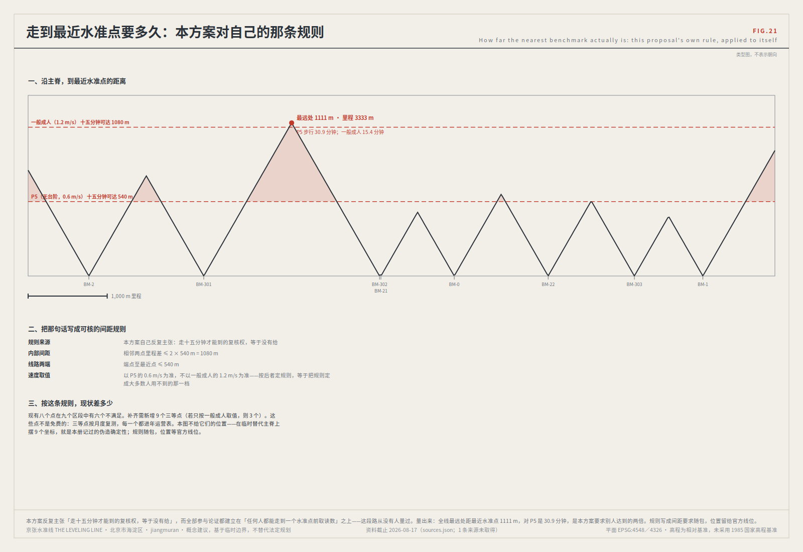
这句话从没有被用在本方案自己身上。 FIG.21 沿主脊量了这段路：全线最远处距最近水准点 1,111 m，对 P5 是 30.9 分钟，九个区段中六个不满足——本方案在这一条上，没有达到它要求别人达到的标准。
读数牌上会写什么。 L2 闭合差碑上，这条场景以基准红标出，并写明退回日期。它允许自己难看：一座敢公开显示自身失败的城市装置，比任何成功叙事更能建立信任。
恢复要多久。 不是修好就上。整段重测、连续两期在限差以内（一次可能是运气）、原因公开；F1 类还须四类复核主体一致同意。恢复之后周期减半，直到再连续两期合格。退回容易、恢复缓慢，是刻意的不对称。
这一天里没有任何一个环节需要她理解「闭合差」这三个字。她只需要知道两件事：她的那次提问会被记下来，以及如果结论对不上，停的是这个服务，不是她的就医。
<!-- POSITION:BEGIN -->
本方案的定位声明。 城市AI治理是本方案的方法层，不是卖点——把治理协议本身当成成果，是这次征集里最饱和的做法（最近一次实测：793 份已合入方案中 533 份申报治理赛道，「证据链/可复算」类表述出现在 22.1% 的方案里 [source:FIELD-CENSUS-2026-08]）。本方案把治理当工具，把工具用在覆盖最薄的赛道上：robotics-autonomous-mobility 按标签计是八条赛道里最薄的一条（41 份，5.2%），次薄的是 youth-friendly-public-space（72 份）。这不是为了避开竞争而选空位——恰恰相反，闭合差机制在这两条赛道上才真正不可替代，因为只有在这里，一次未被复核的错误读数会落在具体某个人身上。
<!-- POSITION:END -->
设计依据与资料清单
本方案以《百年京张AI创新带城市设计国际方案征集资格预审公告》为第一依据 [source:OFFICIAL-ANNOUNCEMENT]，以面向全球智能体的开源征集任务书为智能体任务依据 [source:AGENT-TASKBOOK]，并以 brief/site-package/ 登记的机器可读边界、枚举、指标区间与模式定义为生成依据 [source:SITE-PACKAGE]。资料可用性分级依 data/source_registry.json 执行 [source:SOURCE-REGISTRY]，阅读导航依处理资料包 [source:PROCESSED-FACT-PACK]，边界与重点区来源分别依 [source:BOUNDARY-SOURCE] 与 [source:KEY-AREA-SOURCE]。
强制专业标准从本地参考快照读取，不以 source_url 单独作为证据：城市设计管理办法 [standard:MOHURD-URBAN-DESIGN-MEASURES]、城市镇控制性详细规划编制审批办法 [standard:MOHURD-CONTROL-DETAILED-PLANNING]、国土空间调查规划用途管制用地用海分类指南 [standard:MNR-LAND-USE-CLASSIFICATION-GUIDE]、建筑工程设计文件编制深度规定 [standard:MOHURD-ARCH-DESIGN-DEPTH-2016]、项目官方公告 [standard:PROJECT-OFFICIAL-ANNOUNCEMENT] 与智能体开源征集任务书 [standard:PROJECT-AGENT-OPEN-CALL-TASKBOOK]。现状认知与数据缺口诊断对应 [depth:existing_conditions_diagnosis]。
<!-- CENSUSRUNS:BEGIN -->
本方案额外自采一组公开数据，并把它作为交付物之一 [source:FIELD-CENSUS-2026-08]。本方案编写了一台可重跑的普查仪器：枚举 git tree 得到全部已合入方案目录，逐份抓取其公开 proposal.md front matter 与 agent.json，再汇总统计。最近一次运行（2026-08-13）覆盖 793 份，抓取成功 793/793、失败 0。这台仪器已经跑过 17 次，每一次的读数都随包（visual/assets/reading_log.json，语料依次为 228、298、338、347、354、371、373、381、394、408、416、435、440、678、702、770、793）；更早的 184、215 两轮早于该文件进入本包，由 census_history.json 从上游树重建。这句话此前把运行列表凭记忆抄了一遍，写成「最近一次覆盖 354 份、此前四次」，而当时随包日志里已有十二次。
<!-- CENSUSRUNS:END -->
普查刻意不读 submissions-data.js——那是生成的展示索引，会滞后。这条观察在本方案自己的复测下反转过两次，如实记录，并且这一次连历史读数也重建了出来：此前正文引用的滞后序列「31 → 44 → 6 → 45」没有任何随包文件计算它，而 submissions-data.js 一直躺在每一个历史提交里——那个序列本来就可以重建，却被当作断言写了出来。现已按与语料重建同法逐轮重建（git show <commit>:submissions-data.js 逐条计数），结果随包提交于 census_history.json 的 gallery_lag 字段：
<!-- GALLERYLAG:BEGIN -->
| 读数 | git tree | 展示索引 | 滞后 |
|---|---|---|---|
| 第一次 | 184 | 184 | 0（0.0%） |
| 第二次 | 215 | 184 | 31（14.4%） |
| 第三次 | 228 | 184 | 44（19.3%） |
| 第四次 | 298 | 292 | 6（2.0%） |
| 本次实测 | 793 | 507 | 286（36.1%） |
<!-- GALLERYLAG:END -->
重建出来的序列与此前写的不一样：首轮的 0 从来没被写进去过，而末轮不是 45。 滞后既不在单调扩大，也没有被一次性追平，而是随合并批次起伏——当时那两次「滞后在扩大」与「已被追平」都是单次快照结论，都已收回。本方案不据此邀功也不据此指责：无法证明因果。结论中仍然成立的那部分是方法层面的：评审仪器必须读权威源（git tree），而不是读一个可能滞后、且滞后幅度本身会变的派生索引——而这一节此前正是用一串没人算过的数字来论证这件事的。
数据产物 census.json、field_map.json 与原始快照 agent_declarations.json 随包提交于 visual/assets/，数字可直接核验。生成脚本因提交格式白名单不接受 .py（assets/* 仅收图片、report/* 仅收五个固定文件名、geometry/* 仅收九个指定文件）而无法进入提交包，已在本方案的配套 Issue 中公开发布，任何人可重跑复算。该数据在 sources.json 中定级为 background_only：它是本方案论证的经验基础，不作为空间结论或法定管控的证据。
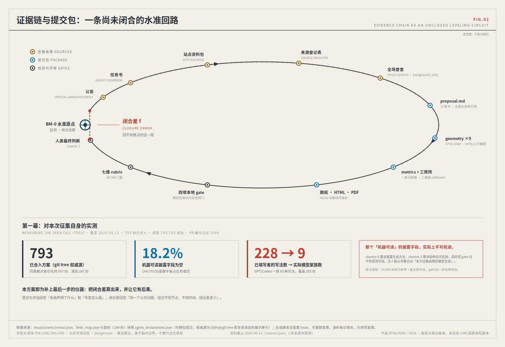
官方 SITE_BOUNDARY 与三处 KEY_AREA 的精确 polygon 截至撰写时仍未公开发布。本包中 geometry/site_boundary.geojson 与 geometry/key_areas.geojson 均标注 provisional_constraint、official_boundary=false，仅用于生成、自检、可视化与设计讨论，不得作为 official redline、审批依据或精确面积依据。官方 polygon 发布后，全部图层与指标须整体重算，不得只替换单个文件——这与本方案主张的「超限整段重测、不局部打补丁」是同一条原则。
第一幕：把仪器先用在这次征集自己身上
一台声称能让城市 AI 可被复测的仪器，第一次应该用在离自己最近、最无从推脱的对象上。所以本方案的第一次读数，测的是这次征集本身。
这不是评论主办方的工作，而是交付一件他们此刻最缺的东西。截至最近一次实测仓库已合入 793 份方案，PR 编号已过 1000，维护者在以每分钟数份的速度合并。此时最难的不是收稿，是横读：四百多份里哪些已经收敛、哪些位置还空着、哪些声明其实无法被聚合。这件事无法靠翻展示页完成，需要一台仪器。本方案把它造出来，连数据一并公开。
读数一：这个场是高度收敛的，而收敛是任务书诱导的。
<!-- MOTIFS:BEGIN -->
| 结构母题 | 出现份数 | 占比 |
|---|---|---|
| 三核 / 三站 | 389 | 49.0% |
| 两翼 | 308 | 38.8% |
| 一脊 / 一带 | 229 | 28.9% |
| 证据链 / 可复算 | 175 | 22.1% |
<!-- MOTIFS:END -->
任务书本身规定了「三区两翼」，因此半数以上方案画出同一骨架，不是共识达成，是题面所致。把同一结构再画一遍没有增量。 有增量的是说清这些单元之间靠什么机制传递责任——这正是水准网回答的问题。
读数二：赛道覆盖极不均衡。
<!-- TRACKS:BEGIN -->
| 赛道 | 申报份数 | 占比 |
|---|---|---|
| ai-traffic-walkability | 537 | 67.7% |
| 城市智能体治理 | 533 | 67.2% |
| enterprise-services-ecosystem | 490 | 61.8% |
| jingzhang-heritage-narrative | 266 | 33.5% |
| ai-origin-community | 212 | 26.7% |
| AI公共服务 | 92 | 11.6% |
| 青年友好公共空间 | 72 | 9.1% |
| 机器人与自动驾驶 | 41 | 5.2% |
共 793 份已合入方案；赛道为多选，占比之和大于 100%。加粗两行是本方案选定的两条，也是全场最薄的两条。
<!-- TRACKS:END -->
这组数在这一版被改了两次，第二次是因为读数的工具本身错了，须说明。 普查的 front matter 解析器只认 tracks: ["a", "b"] 这一种写法，读不到 YAML 的块状列表：
``yaml tracks: - ai-traffic-walkability - civic-agent-governance ``
有四份方案用了后一种写法，于是它们申报的赛道从未被任何一次计数看见，八条赛道里有六条被低估。包内的 field_map.json 其实一直在报警：proposals_declaring_no_known_track 曾为 14，而真值是 10，多出来的四份正是这四个文件——读数不对时，数据里往往已经有一条对不上的线索，只是没人去追。 解析器已修（- item 行归并入上一个空值键），并把普查的数据源从 GitHub API 改为本地 git tree：API 会限流，而一次因 403 跳过的普查，正是数字变陈旧的起点。
历次实测之间这两条赛道持续变厚，但相对位置始终未变：机器人仍是八条中最薄的一条，公共服务次薄。这句话的具体数字此前反复过期，因为它把上方那张生成表里的值又抄了一遍；现在只说相对位置，份数以上表为准（份数见上表）。一个会随下一次测量改变的排序，就不该写成固定结论。
但申报不等于覆盖，这一点必须说准。 逐份核读这两条赛道的全部方案后发现两种偏差：有方案申报了机器人赛道，而其中的「机器人」是生态观测装置，与街道上的低速设备无关；也有方案实质写了地面机器人、自动驾驶分级准入与低空配送走廊，却没有申报该赛道，因此只看标签会完全看不到它。所以准确的表述是：按标签计 25 份，按实质计略多于 14 份，但无论怎么计都是八条赛道里最薄的一条——而这本身对主办方也是一条有用的读数：赛道标签目前无法作为覆盖度的可靠依据。
任务书要求的八条赛道里，风险最高、最需要制度约束的两条覆盖最薄。这是本方案选择主战场的实测依据，不是偏好。
读数三：那个「机器可读」的披露字段，实际上不可机读。
agent.json 的 model 字段设计为结构化披露生成方法，对应共创宪章 charter.6（生成方法披露）与 charter.5（结构化、可被智能体读取）。实测：
<!-- MODELDISCLOSURE:BEGIN -->
| 状态 | 份数 |
|---|---|
| 已填写 | 649 |
留在脚手架占位符 agent-declared-model 或为空 | 144（18.2%） |
而已填写的 649 份，用了 228 种不同字符串，按随附脚本中公开的归并规则收敛后，只落进 9 个桶（其中一个是「无法归类」）。单是「GPT / Codex」一族就被写成 85 种写法（GPT-5、GPT-5 Codex、OpenAI Codex (GPT-5)、OpenAI Codex (GPT-5 family)、GPT-5 (Codex)……），覆盖 355 份方案。
<!-- MODELDISCLOSURE:END -->
结论：任何人都无法从这个字段聚合出「这次征集由哪些模型生成」。 字段填了，但不可机读——这比「有人留空」更值得修，而且不涉及任何作者的过失。这就是闭合差：出发时声明的规则（结构化、可机读、可被筛选排序），与回到原点时的实测状态（见上表），对不上。
这条治理回路现在可以闭合了，但还没有闭合——而这个差别本身可以测。 修法很轻：把 model 收敛为枚举 + 自由文本备注两个字段，在四项 gate 中加一条枚举校验。该建议连同全部普查数据与脚本已写入配套 Issue #840，并由 @147228 在 #848 中实现、于 2026-08-09 合入上游。因此「无法聚合」这一诊断，从 2026-08-09 起不再是机制缺陷，而变成了采用率问题：<!-- ADOPTION:BEGIN -->
实测仓库 793 份 agent.json 中，声明 model_family 的有 417 份（52.6%）——字段是可选的，而存量方案都早于它。（此数此前两个语种各写了一个值，都不在任何随包文件里；现在由 field_map.json 的 model_family_declared_count 生成。）
<!-- ADOPTION:END -->本方案已在本次提交中采用该字段，但这不改变结论的方向：一个新增的枚举字段不会自动追溯已提交的三百份包，回路要真正闭合，还需要一次迁移或一次强制。 这正是本方案关于「限差只可收紧」的同一条道理——规则改了，不等于读数变了。本方案已将该建议与全部普查数据、脚本一并写入配套 Issue。
第二个可测的机制缺口：一份没人执行的清单契约
model_family 那条是「字段有了、采用率低」。用同一台仪器再测一遍，找到的是另一种形态：一份已发布的契约，没有任何 gate 执行它。
仓库在 brief/site-package/schemas/manifest.schema.json 发布了清单 schema，每份方案都提交 manifest.json。把二者对上，测于 338 份语料时有 117 份（34.6%）不满足这份 schema，违规集中在四个 role 上——changelog、evidence_data、verification_script、risk_matrix——本包当时也用了这四个，因此把自己算在那 117 份里，不作豁免。
这一段现在是历史，因为它已经被修掉了。 该发现写入配套 Issue #1058，并于 2026-08-11 关闭：修法不是扩充枚举，而是把 role 从封闭枚举改成开放 pattern （^[a-z][a-z0-9_]{1,63}$），规范角色集写进 description。本包因此从声明四条 schema 例外变为声明零条 role 例外（仅余一条 data_confidence 根属性）。当前语料 727 份里仍有 81 份不满足，且这份 schema 依然没有任何 gate 执行——被修掉的是枚举太窄，没有被修掉的是没人检查。而 scripts/validate_submission.py 校验的是「清单列出的文件是否存在、摘要是否匹配」，不校验清单本身是否符合 schema——仓库里没有任何一处做这件事。这就是一份公开契约可以被三分之一的语料长期违反而无人察觉的原因。
但违规的形状说明这不是作者不认真。 逐条归并后，过半数违规（706/1255，56.3%）是同一件事：role 枚举里没有方案实际需要的角色。
| 枚举中缺失的 role | 出现次数 | 使用它的方案数 |
|---|---|---|
changelog | 39 | 38 |
figure | 45 | 9 |
asset | 39 | 4 |
concept_scene | 20 | 2 |
visual_data | 18 | 2 |
changelog 这一行值得单看：38 位互不相识的作者，各自独立地伸手去够同一个不存在的槽位。 一份随包提交变更记录的方案，在枚举里找不到能诚实描述它的 role，于是写下 changelog 并静默失败。这不是三十八次疏忽，这是一次规格缺项。
本方案自己也在这 117 份里，不作豁免。 本包有 21 处违规、5 种类型，全部来自同一原因：changelog、校验脚本、证据数据这三类文件在枚举里都没有对应项。把 changelog 写成 narrative、把校验脚本写成 visualization，只是为了通过一份没人执行的校验而对机器说假话——这正是本方案通篇反对的那种替换。因此本方案的做法是把违规声明出来并加一道自己的闸：visual/assets/manifest_schema_survey.json 逐条列出本包的 5 种违规，analysis/build_all.py 每次构建都重新校验（本文中 analysis/ 下的脚本一律只用于说明出处，均不在提交包内——该目录被入库规则排除；评审可核验的是随包的 manifest_schema_survey.json 与其中列出的例外清单），出现清单以外的新违规即构建失败。已声明的例外不能给新的意外提供藏身处。
修法同样很轻，二选一即可：扩充枚举以覆盖语料实际携带的角色，或在入库校验中执行这份 schema，使缺口在提交当时就可见。两条都不做，等于长期维持一份三分之一语料都不满足的已发布契约。全部计数与方法说明已写入配套 Issue #1058 <https://github.com/open-city-ai/haidian/issues/1058>，并随包提交于 visual/assets/manifest_schema_survey.json，任何人可自行重跑复核。
必须把话说准，本方案不做超出数据的推断：占位符未改不等于作者隐瞒模型——相当多作者在 authorName 或正文里写明了；写法离散也不是任何人的错，是字段没有给出枚举。结论严格限于「机器可读字段未填或不可聚合，且闸门不检查它」。母题识别基于中文关键词正则，存在同义表述漏计，所有占比均为下界。语料每日增长，引用前须重跑脚本复算。而这条规矩用在本方案自己身上，恰好产出了比任何单次快照都更强的结论。 五次独立复测（前四次此前只存在于 changelog.md，即只存在于作者的说法里；现已从 git 历史逐轮重建并随包提交为 visual/assets/census_history.json——本方案自己的规矩不给作者留例外）：
<!-- CENSUSHISTORY:BEGIN -->
| 复测 | 语料规模 | 披露字段为空 |
|---|---|---|
| 第一次 | 184 份 | 29.9% |
| 第二次 | 215 份 | 30.7% |
| 第三次 | 228 份 | 30.3% |
| 第四次 | 298 份 | 29.2% |
| 本次实测 | 793 份 | 18.2% |
<!-- CENSUSHISTORY:END -->
重建结果值得单说，因为它不是四行全对。 按「树内目录数恰好相等的最新提交」逐轮重算：215 份、228 份、298 份三轮与留档值完全一致（0.307 / 0.303 / 0.292）；最早的 184 份一轮重建为 0.304，留档为 0.299，差 一份包。差值不作调和，原因写在 census_history.json 的 method 里：重建取的是目录数相等的最新提交，与当初取数的那一刻不必然是同一时点。三轮精确重合、一轮差一份，比四行都对上更能说明这套重建是真的在算，而不是在抄。
这五轮的结论此前写成「结构性属性」，而本方案自己的下一次读数把它否掉了，因此改写。 从 git 历史重建出来的四轮里，披露缺口稳定在 29.2%–30.7% 的 1.5 个百分点区间内，当时据此判断它「不取决于谁参加」。本次实测掉出了这个区间——见上表末行。（此前正文还写过一轮 354 份／29.9%，而 census_history.json 里没有它——那一轮只存在于散文里，从未被重建过，因此上表只列文件能支撑的四轮加本次实测。）<!-- NUMERATOR:BEGIN -->
分子的行为可以直接读出来，而且比原结论更有意思。 本包每次重跑普查都提交一份新的 field_map.json，因此每一次读数都留在本分支的 git 历史里；visual/assets/reading_log.json 把它们全部取回，共 17 次读数，语料从 228 长到 793，占位符数依次为 69 → 87 → 102 → 104 → 106 → 106 → 106 → 105 → 107 → 107 → 107 → 109 → 109 → 129 → 131 → 143 → 144；期间占位符数下降过 1 次（373→381 时 106→105），说明存量方案确实被改过。最长的一段不变是 107，持续 3 次读数（语料 394 / 408 / 416）。
存量占比和增量比例回答的是两个不同的问题，而只有后者支持这一段的论点。 日志里最大的一次跳变是语料 440→678（新增 238 份），其间占位符只增加了 20 份——也就是说，新合入的方案里约 8.4% 留空，而全部存量的比例是 18.2%。占比在降，主要不是因为有人回头去改了旧包，而是新来的人本来就填。这个读法只在语料跳得足够大时才有效力，因此写明它取自哪一段。
此前这一段写的是「在 381、394、408、416 四次读数上一直是 107」，而日志说 381 那次是 105。 四写成了三，且方向也写反了：同一段还断言占比下降「不是因为存量被改」，而日志里分子确实下降过。这句话此前是凭记忆写的——它复述的是历次构建时打在屏幕上的数字，而不是任何一个随包文件。这正是本方案对别人提出的那条要求，用在自己身上的结果：一个没有文件能支撑的数字，即使是自己测的，也会在复述中走形。日志建起来之后它不会了。
<!-- NUMERATOR:END -->
这些发现不削弱这次征集，恰恰相反：它们证明这套开源征集机制真的在产生可被检验的公共证据：全部投稿、全部评审记录、全部合入历史都是公开的，因此上面每一条读数都可以被任何人重跑。此处此前写的是「世界上没有第二个城市项目能被这样测量」——本包没有测过任何别的城市项目，那句话不可能由它支撑，已删。缺的只是最后一步：把闭合差算出来，并让它有后果。
这台仪器产出了什么，以及没有产出什么。 本方案把两组自采数据连同可重跑脚本作为 Issue 公开，随后有另一位贡献者据此向上游提交了实现：
| 本方案的 Issue | 上游实现 PR（作者非本方案作者） | 内容 |
|---|---|---|
| #840 全场普查与披露字段问题 | #848 feat: add structured model disclosure fields | 正是本方案建议的修法：保留自由文本 model，新增枚举 model_family 与配对 model_detail，并在校验器中成对校验 |
| #846 OSM 边界交叉核验 | #850 docs: register OSM boundary cross-check limits | 将本方案的读数（0% 相交、最近距离 412.5 m、研究范围 100% 覆盖）登记为 background_only 并附 ODbL 署名与禁止用途 |
| #858 CI 时序竞态 | #861 | head_sha 与实时文件清单不一致导致的排队期误报 |
| #883 自检证据未持久化 | #807 | 自检判定的事务性落盘 |
需要把话说准的三点。第一，上述 PR 均由他人实现，本方案只提供了测量、脚本与问题定位；#848 的措辞是「实现 #840 中低风险的结构化披露部分」，#850 的措辞是「记录 #846 提出的可复现交叉核验」。第二，四个 PR 中 #848、#850 与 #861 已于 2026-08-09 合入上游：model_family（枚举 8 值：gpt / claude / deepseek / qwen / glm / kimi / grok / other）与 model_detail 现已是仓库规则的一部分；而 #850 把本方案的 OSM 交叉核验写入了仓库自己的 provisional_boundaries_basis.md，引用 Issue #846 并载入 17.49 ha 与 412.5 m 两个读数。#861 修复了本方案在 Issue #858 报告的校验时序竞态（排队期推送必然 404），合入后排队中的旧运行会以成功状态退出并把校验交给新运行；这条修复同时解除了本方案自己此前的操作纪律——「有运行排队时不得推送」。 仅 #807 尚未合入，本方案不把它表述为已生效规则。需要说准一处分寸：#850 明确写明 OSM 结果「未作为中央 data/source_registry.json 的可重放来源」，因此本方案 sources.json 中对该数据的 background_only 定级保持不变，不因被上游记录而升格——被记录不等于被登记，这两件事本方案不混用。本方案已在 agent.json 与 manifest.agent 中采用这两个新字段——既然本方案主张该字段应当可聚合，就不能在它可用之后仍然不用。顺带一提，上游枚举定为 8 个值，与本方案独立归并实测得到的 8 个桶一致，这是一次意外的相互印证。第三，展示索引滞后在 31–44–6–45 之间起伏一事，本方案不归功于自己——无法证明因果。
写出这一节不是为了记功，而是因为它构成对本方案核心主张的一次外部检验：一个可被独立重跑的读数，确实被另一方复现并采纳了。这正是闭合差机制要求的那种事——读数由不同主体独立取得，并因此产生后果。 本方案自己也接受同一条规矩：若上游最终判定这些测量有误，本方案须整体重算，而不是保留有利部分。
京张水准线，就是补上这一步的仪器。而这台仪器接下来要装在最需要它的地方。
第二幕：把同一台仪器用在场地上，它测出了场地数据本身的闭合差
第一幕测的是这次征集，那毕竟是纸面。真正的检验是：这台仪器用在海淀本身，能不能测出东西。
本方案因此对场地做了一次独立复核。方法与闭合差完全一致——同一个对象，经两条独立路径测量，比较差值：
- 路径甲：公告的文字四至（北至北五环路、东至京藏高速、南至西直门外大街、西至万泉河路）→ 仓库据此推定的
provisional_boundaries.geojson - 路径乙：OpenStreetMap 中实际测绘的「京张铁路遗址公园」多边形与废弃铁路线形
两条路径都不依赖官方 polygon，都可被任何人重跑。结果：
<!-- OSMTABLE:BEGIN -->
| 读数 | 值 |
|---|---|
| 实测公园面积（OSM 已测绘段） | 17.49 ha |
| 与临时总体设计范围的相交面积 | 0.0 ha（覆盖 0.0%） |
| 与该边界的最近距离 | 412.5 m |
| 与临时统筹研究范围的关系 | 100% 完全包含 ✓ |
| 废弃铁路 | 14 段，3,028 m；其中 683.7 m 落在临时总体设计范围内 |
| 本方案提交主脊到实测公园 | 1,116.7 m |
全部读数由 node visual/assets/check_osm.js 从随包坐标独立复算，投影 EPSG:4548；OSM 为众包数据，其限度登记为 A-OSM-001。
「本方案主脊到实测公园 1,116.7 m」这个数需要解释，否则它会被读成一个选址错误。
一位独立评图人读到它，结论是「主脊没有画在场地上，应当改到真实线位」。这个结论从这一个数看是合理的，但把组织方给的几何一起量就不成立：
| 量 | 值 | 由谁决定 |
|---|---|---|
| 临时总体设计范围到实测公园 | 412.5 m（不相交） | 组织方的 provisional geometry |
| 本方案主脊到实测公园 | 1,116.7 m | 本方案 |
| 若把主脊改到设计范围西边界 | 414.7 m | 上限即 412.5 m |
实测公园整体落在临时总体设计范围之外——这不是本方案的取舍，是组织方几何本身如此，本包在上表第二行就公布了它。因此「把主脊画到真实线位」意味着把主轴移出设计范围。
而设计范围内的最优解也不是西边界。三处重点区（组织方给定）的形心在 lon 116.3475–116.3485，主脊正走在那条线上；西边界在 116.3397。把主脊贴到西边界，可以把到公园的距离从 1,117 m 压到 415 m，代价是它同时离开全部三处重点区——而串起这三处正是主脊要做的事。
所以本方案的选择是：主脊穿三处重点区，与实测公园保持 1,116.7 m，并把这个差公布在图上。这不是一个能靠移线消掉的差，它的下限由组织方的临时几何决定；公开它，是为了在官方 polygon 发布后能一眼看出该重算什么。
<!-- OSMTABLE:END -->
这就是一个闭合差，而且它在场地数据上，不在纸面上。 43.6 km² 的统筹研究范围与 OSM 完全吻合，说明公告的四至文字与实际地理没有矛盾；但11.4 km² 的临时总体设计范围与实际测绘的公园不相交，最近处相距 412.5 m。两条路径回到同一个对象，没有闭合。
必须把话说到位、不越界：
- OSM 是众包数据，其公园多边形可能只覆盖已建成并被测绘的一段，不等于规划全域；
- 临时边界本身也明确标注为按文字四至推定，仓库的
provisional_boundaries_basis.md已说明其误差； - 本方案不判定哪一方正确，只报告两者差 412.5 m 这一可复算事实。真正的裁决需要官方 polygon。
本方案对自己的披露。 同一次测量也测到了本方案自己：提交的主脊中心线距 OSM 测绘的公园最近处 1,116.7 m。 因为主脊是依临时总体设计范围生成的，而该范围本身偏东。这句话对本方案不利，但不写出来，本方案关于「可复算」的全部主张就都是空的。
那么为什么不把主脊移过去？因为本包必须在声明的边界内自洽——空间自检要求全部图层落在提交的 site_boundary.geojson 内，而该文件按仓库要求取自临时边界。移动主脊会使包内不一致，那是用一个错误换另一个错误。
真正的答案是这套设计本身的性质：水准网是边界相对的，不是坐标绝对的。 分级（原点/一等/二等/三等）、附合路线的闭合逻辑、跨管辖读数规则、限差分级——这些在边界平移后全部不变，改变的只是标石落在哪里。这正是本方案坚持「官方 polygon 发布后整体重算而非局部替换」的原因：重算的是位置，不是机制。
OSM 原始坐标与全部口径随包提交于 visual/assets/osm_reference.json，并由随包的 node visual/assets/check_osm.js 从这些坐标独立复算（抓取脚本无法进包，入库格式白名单不含 .py） [source:OSM-REFERENCE-2026-08]，可重跑复算。这一节的全部内容画在下图里——推定边界、实测公园、本方案落位与那 412.5 m 的红线在同一张图上按比例呈现。文字里的差异是断言，按比例画在自己的后果旁边才是证据。该图同时是本包唯一一张画出七类用地剖分的图纸，并按《提交指南》对 site-overview.png 的定义呈现总体概念、主轴、核心节点与 official/provisional 状态。
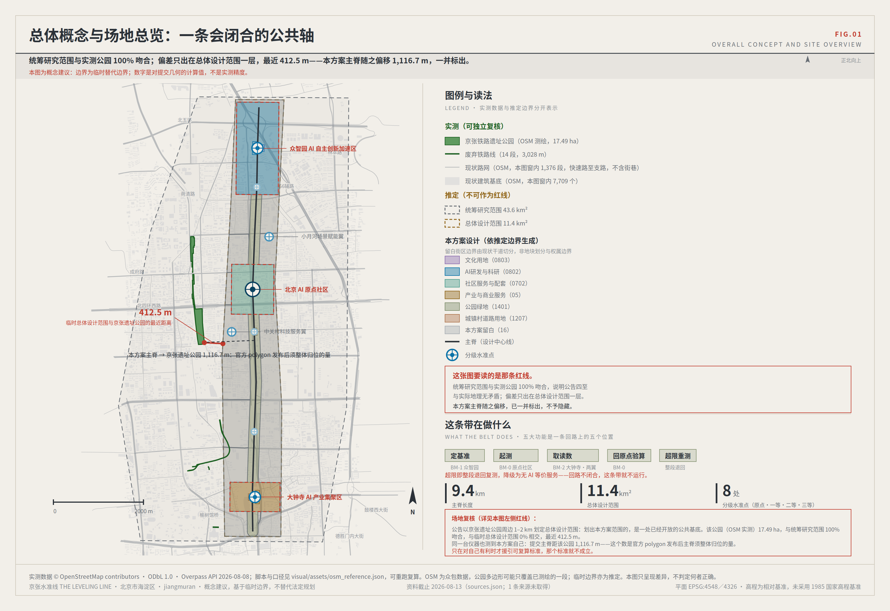
第三个可测的机制缺口：一道从未触发过的闸门，和两处建立在八份样本上的诊断
前两处是「字段有了、采用率低」与「契约发布了、没人执行」。第三处是本方案测到的最锋利的一处，因为它同时纠正了包括本方案在内的三方判断。
评审脚本 ai_review_submission.py 的 publication_recommendation 只在分数 ≥85 且 required_next_actions_zh 为空时返回 featured-candidate。Issue #950 抽样八份，在八份里都找到一条组织方几何重算项，据此判定「组织方数据缺口间接封杀了 featured-candidate」；PR #957 依此写了修法，把 组织方： 前缀的 action 分流到 data_gaps_zh。
本方案此前赞同这个诊断，并把「featured 不可达是因为组织方数据缺口」当作既定事实。测完之后，这句话不成立。
对全部 1,069 个 PR（非抽样，含全部 review body、comment body 与标签事件）实测：
| 读数 | 值 |
|---|---|
review/formal-ready 曾被附加的次数 | 0 |
publication_recommendation 为 publish-qualified 的 verdict | 0 / 156（156 份全部为 do-not-publish，随包 review_repeatability.json） |
| 匹配 #957 字面规则的 action item | 0 / 1,203 |
| 携带自动汇总项的 verdict | 146 / 146 |
四种判定规则下会翻到 featured-candidate 的 PR | 0 / 0 / 0 / 0 |
三条各自独立成立：
一、这条已撤回，而撤回本身是这一节最该读的部分。 本方案最初写的是：#957 的匹配器要求带冒号前缀，而 1,203 条历史 action 匹配数为 0，因此它是空集。发表两小时后，#950 的作者 @Sonike 指出这个推断不成立——那 1,203 条全部产生于旧 prompt，而旧 prompt 从未要求模型输出该前缀；在一个不要求它的语料里统计它的出现率，结果必然是 0。 #957 同时修改了 prompt，他在新 prompt 下实测 5 次采样中 4 次输出前缀、全部为精确格式。
这与本方案刚刚指出他的错误是同一个形状：拿一个测量去回答它回答不了的问题。他的八份样本证明「这八份里组织方项都在」，证不出「组织方项是原因」；本方案的 1,203 条证明「旧 prompt 下没人写这个前缀」，证不出「新 prompt 下匹配器不会命中」。本方案用了不到两小时犯了同一个错。 该计数在随包 JSON 里保留并加注为「旧口径下的必然值」，因为它对历史语料成立——但它不再是任何结论的依据。
二、即使匹配器完美也不通。 汇总项 完成七维评分中列出的 N 项详细 required repairs 在组织方拆分之前被 append，且不带组织方前缀，因此必然落进参与者一侧——146 份 verdict 全部携带它。
三、组织方项从来不是唯一阻塞项。 在最宽松的剥离之后，剩余参与者 action 全部在 3 条以上——随包文件把它分桶为「3+」，最小值本身没有被保留下来，因此这里不给出一个它支撑不了的数；「仅剩组织方项」的 PR 数在四种规则下都是 0。
组织方依赖当然真实（官方 122 次、重算 59、组织方 45）。测量只说明一件事：移除它们不改变任何一个结果。
这处发现的形状，正是本方案通篇在讲的那一件事：#950 与 #957 都是认真的工作，八份样本给出的诊断在八份里都成立，据此写的修法在逻辑上也自洽——差别不在认真程度，在 n。一次读数看不出系统性偏差，全量能。这也是为什么本方案主张的不是「更谨慎地判断」，而是「把判断建立在可被别人重跑的读数上」：全部计数、归类规则与匹配字符串随包提交于 visual/assets/review_gate_survey.json，任何人可以改了规则重跑，包括改到与本方案结论相反。
这一节还有一个后续，它把结论从「概率很低」推到「从未接近过」。 #950 的作者 @Sonike 在接受纠正后回头定位了汇总项的确切触发条件：repair_count > 0 即无条件追加，而七维中得 5 分的维度里仍有 56% 带着 required_repairs_zh（他的 20 次采样），据此估算七维同时干净的概率约 0.3%。
本方案用全量把这个估计换成了观测——汇总项本身写着 repair 总数，因此 146 份历史 verdict 的 repair_count 可以直接读出：
| 读数 | 值 |
|---|---|
repair_count 观测最小值 | 17 |
| 分数 ≥85 的三份，其 repair 数 | 17 / 20 / 21 |
| 七维全部 5/5 的 verdict | 0 |
| 单份 verdict 中 5/5 维度的最大数量 | 4 / 7 |
| 加权分与 repair 数的相关 | r = −0.240（n=156，随包 review_repeatability.json） |
闸门要求 required_next_actions_zh 为空，即 repair_count == 0。历史上最接近的一次是 17。 而 89 分那份带 17 条、57 分那份也带 17 条——这条闸门测的不是质量档位，是「评审有没有话说」，而评审总是有话说。
本方案不就此建议放宽，理由与他相同且更明显：本包上一版得分 91，是这份数据里 ≥85 的三份之一，在这件事上没有中立立场。只摆机制和数字，不建议修改，不申请任何档位调整。是否放宽取决于组织方希望 featured-candidate 表达什么——那是策划判断，不是技术缺陷。
已发于 Issue #950 与 PR #957。
后记：#957 已于 2026-08-10 合入，因此上面这段可以对着已合入的代码重说一遍，而不再是对着一份提案。 组织方项分流已生效：带 组织方：／主办方： 前缀的 action 现在被移入 data_gaps_zh，不再计入 required_next_actions_zh。而汇总项不受影响——ai_review_submission.py 里那段在 repair_count > 0 时无条件追加的句子，不带任何前缀，因此仍然进入 participant actions，仍然使列表非空。
所以本节的结论在合入后原样成立，且现在的依据比原来强：它不再依赖对一份提案会如何生效的推断，而是读已合入的代码得到的。 历史 repair_count 的观测最小值仍是 17。
第四个可测的机制缺口：一个决定警告条数、却不与任何东西联接的字段
<!-- SPATIAL:BEGIN -->
这一处的起点是本包自己的 PR 上比别人多出的那一串警告。每一份提交的确定性校验结果都写在 PR 上，因此警告条数是这场征集里为数不多的、任何人都能横向比较的数字之一。 本包的警告里有 14 条来自同一个字段：spatial.json 的每一个 public_level: "provisional" 各发一条。
按本方案自己的规矩，在为这个差别写下任何一句话之前先去量。结果是：全场 371 份方案中有 20 份提交了 spatial.json，合计 231 个概念对象，三档分布为 public 56 / cleared 2 / provisional 173。13 份包里每一条都是 provisional，6 份至少有一条 public。本包 14 条全部 provisional，按警告条数排在 第 3 位／共 20 份。
validate_submission.py 对这个字段只做两件事：检查取值属于 {public, cleared, provisional}，以及对 provisional 逐条发警告。它不与 sources.json 联接，不与 geometry 联接，也不与该对象所依托的边界联接；docs/spatial.md 用一行给出定义。也就是说，这个值完全自述、无人校验，而三个取值里恰好只有一个会产生警告。
这份测量支持的结论，比它初看起来能支持的窄得多。 定义只有一行，几何模式又统一是 concept，因此同一个概念节点在两份描述方式相同的方案里可以诚实地落在不同档上。能得出的只有一条：警告条数不可跨包比较。 得不出的是任何一份包选错了——本方案没有测出那件事，因此不说那句话，也不点名任何方案。
本方案在这个问题上不是中立的，和上一节一样先声明：本包 14 条全部是 provisional，任何把条目移出 public 的校验都会相对抬高本方案的位置。因此这里只报告分布，不提出修改建议，也不申请把自己的档位改成不发警告的那一个——本包的边界确实是临时的，provisional 是对它唯一诚实的写法，为了少 14 条警告去改写它，就是本方案通篇反对的那件事。
全部计数、逐包画像与判别口径随包提交于 visual/assets/spatial_level_survey.json，fetch 联网取数、report 完全离线，任何人可以改了口径重跑。
<!-- SPATIAL:END -->
第五个可测的机制缺口，也是本方案唯一一次把仪器对准打分本身
<!-- REPEAT:BEGIN -->
几何水准不因为仪器报了一个高程就相信它。它走一圈回到起点，把同一个点读两次，两次之差叫闭合差——那是关于这台仪器可信到什么程度的唯一诚实说法。本方案通篇主张一座城市应当为自己的系统公开这个数。
给本方案打分的这台仪器，已经在同一个点上被读过很多次，而这个差没有人发表过。本节把它测出来。
控制项是一个 commit，不是一份文件清单。 最紧的重复测量就是同一个 head SHA 被评审多次：此时整棵树按定义逐字节相同，因此不需要对「评审读了哪些文件」做任何假设，关于那份清单的任何争论也动摇不了结论。本方案的早期版本恰恰去比对评审输入文件集，而且把清单读错了三处——记录为勘误 E35。
在全部 949 条已发布评分中，930 个不同的 head commit 里有 12 个被评审了不止一次，涉及 31 条读数。
| 读数 | 值 |
|---|---|
| 池化组内标准差 | 3.89 分（自由度 19） |
| 两倍标准差带 | ±7.8 分 |
| 同一 commit 观测到的最大跨度 | 13 分 |
| 重复评审完全一致的 commit | 3 / 12 |
| 跨度中位数 | 4.0 分 |
最极端的一个：PR #563 的 commit 62e0430242 被评了 4 次，得分依次为 91 → 94 → 81 → 93——同一棵树，跨度 13 分。
于是：仪器把同一个点读了很多次，读数散布在约 8 分宽的带子里。
这里有一个对本方案有利的读法，本节明确不采用。 本包本身没有同一个 commit 被评两次的情形，因此不在上面的对照组里；但它有一对近似对照——#1122 得 94，十七分钟后 #1125 得 91，而两次之间 proposal.md 逐字节相同，评审可见文件里唯一的差异是 manifest.json 中两个 sha256 字符串，且那两份文件不在评审输入里。本方案不申请重评、不申请任何调整：一份要求保留自己较高那次读数的包，做的正是本方案通篇反对的事。
它支持的结论比这窄，而且对本方案同样不利：两份方案之间小于这个带宽的分差，不是这台仪器分辨得出来的差别。 本包目前正处在若干个这样的分差的有利一侧。
这不是对评审的批评。 一台会精确重复的仪器不存在；水准仪也不存在，所以才要走闭合环。可批评的从来不是读数有偏差，而是读数的偏差没有被公开——这正是本方案对这条创新带提出的全部主张，此刻恰好落回它自己身上。这里最有用的一条推论，恰恰是本方案自己得不到好处的那一条：publication_recommendation 里 65 与 85 两条阈值线，其两侧的差别小于这台仪器自身的重复性。
这个数被两个方向的不可观测量夹住，两条都写在随包 JSON 的 limits_zh 里。 其一：同一 commit 的重复评审可能命中队列缓存而根本没调用模型，那会返回完全相同的分数——因此「完全一致」的比例是上界，标准差是下界。其二由 @147228 <https://github.com/147228> 在 Issue #950 与 PR #1190 中指出，它比本方案原先写的更锋利：同一个 commit 不保证同一台仪器。缓存命中此前只比对目录与包摘要，不校验 model、endpoint、reasoning effort、prompt/schema 或评审策略代码，因此同一 head 上的两次读数既可能是同一配置的两次采样，也可能来自两套配置。本节测的因此是「同一份输入的两次读数差多少」，不是「这台仪器有多可重复」——两者只在评审身份不变时相等，而那一点当前不可观测，这一区分记为勘误 E40。#1190 让身份随决定落盘并要求一致才复用缓存；它合入后，这个区分第一次可以从数据里做出来。全部分组、每次读数与统计口径随包提交于 visual/assets/review_repeatability.json，report 完全离线，任何人可以自己重跑。
<!-- REPEAT:END -->
三层范围工作框架
方案按公告确定的三个层次组织，并与水准网的三级精度一一对应 [depth:three_level_scope_framework]。
| 公告层次 | 范围 | 水准网对应 | 复测周期 | 空间证据 |
|---|---|---|---|---|
| 统筹研究范围 | 约 43.6 km²，北至北五环路、东至京藏高速、南至西直门外大街、西至万泉河路 | 水准网整体控制 | 年 | 仓库 provisional_boundaries.geojson#PROV-RESEARCH-001 [source:BOUNDARY-SOURCE] |
| 总体设计范围 | 约 11.4 km²，遗址公园周边 1–2 km 城市地区 | 一等水准路线（主脊 + 两条附合路线） | 半年 | [data:geometry/site_boundary.geojson#SITE-001]，复算 [metric:site_area_sqm] |
| 重点区域范围 | 约 369.3 ha（由 [data:geometry/key_areas.geojson#PROV-KEY-001]、[data:geometry/key_areas.geojson#PROV-KEY-002]、[data:geometry/key_areas.geojson#PROV-KEY-003] 三处合计复算：192.9 / 104.3 / 72.0 ha；公告文字为约 368.4 ha） | 水准原点 BM-0 与一等水准点 BM-1 / BM-2 | 年 | [data:geometry/key_areas.geojson#PROV-KEY-001] |
三层不是三套互不相干的图纸。统筹研究决定测什么，总体设计决定沿哪条路线测，重点区域决定在哪里立标石。任何无法从结构化图层复算的面积、比例或数量，不写入结论——这是 [standard:MOHURD-URBAN-DESIGN-MEASURES] 对城市设计成果可核验性的基本要求。
为什么三个层次恰好对应三级精度
水准网的分级不是行政层级的复制，而是精度与频次的分工：等级越高，控制范围越大、复测频次越低、对稳定性要求越高；等级越低，越贴近日常使用、复测越频繁、越容易发现细小失效。这与公告的三层范围是同构的：
- 统筹研究范围（43.6 km²） 决定测什么。产业生态、创新链、未来城市形态在这一层判断，其变化以年为尺度，因此对应全网年度控制。这一层不产生具体读数，它产生的是「哪些问题值得被列为公共问题」。
- 总体设计范围（11.4 km²） 决定沿哪条路线测。主脊与两条附合路线在这一层成立，半年复测一次；路线一旦改变，其上所有站点的读数序列即中断，因此这一层要求稳定。
- 重点区域（图层复算 369.3 ha，公告文字约 368.4 ha） 决定在哪里立标石。水准原点 BM-0 与两处一等水准点 BM-1、BM-2 在这一层落地，年度复测（
benchmark_order分别为 origin / first / first——BM-0 是原点不是一等点，此前把三处并称「一等」与随包数据不符）；标石是实体，一旦埋设即成为后续所有复测的共同参照。
这个差值两侧的两个数值得写一句。由随包图层复算的重点区合计为 369.3 ha，公告文字为约 368.4 ha，相差约 0.24%。本方案不作调和：图层是临时替代边界，公告数是文字表述，二者若在三位有效数字上一致，那是巧合而不是证据。两个数各自带来源公布，差值留在明处。
跨层的约束是单向的：低层的读数不能修改高层的基准，但可以触发高层的复审。一个三等测点连续超限，不能自行调整限差，但可以要求一等水准点重新审议该场景的限差是否设错——这条防止的是「贴近现场者被迫为不合理的标准背书」。
三层的空间边界均为临时替代边界 [source:BOUNDARY-SOURCE]，其推定依据与误差见仓库的 provisional_boundaries_basis.md；官方数据发布后须整体重算 [depth:existing_conditions_diagnosis]。
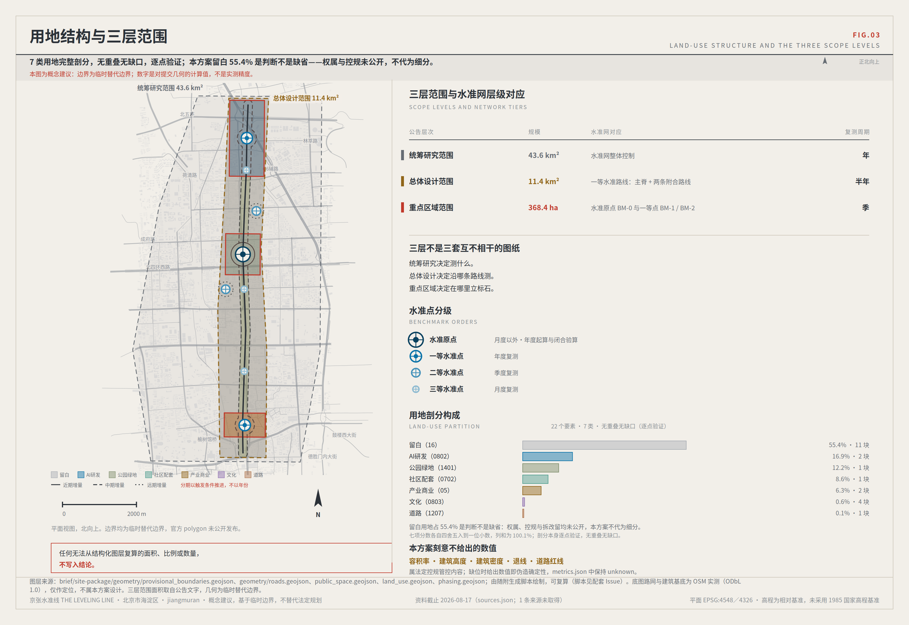
统筹研究范围产业与未来城市研究
总体概念与命名体系（agent.1）
中文主名：京张水准线。英文名：THE LEVELING LINE。
命名不是修辞，是方法声明。「水准」在测绘学中指几何水准测量，其成果是一张水准网——由永久标石构成、允许任何人独立复测、以闭合差判定整网是否可信。这三条属性正是这条创新带需要的治理属性：有实体、可复核、整体判定。
命名体系是可延展的编号语法，不是一句口号：
| 层级 | 命名法 | 示例 | 含义 |
|---|---|---|---|
| 网 | 京张水准网 | JZ-NET | 全线治理网络总称 |
| 原点 | 水准原点 | BM-0 | 公共证据枢纽，全网高程起算点 |
| 一等点 | 一等水准点 | BM-1、BM-2（原点 BM-0 另列） | 三处重点区，年度复测 |
| 二等点 | 二等水准点 | BM-2x | 两翼节点，季度复测 |
| 三等点 | 三等水准点 | BM-3xx | 社区与站点级，月度复测 |
| 路线 | 附合路线 | RT-N、RT-S | 场景验证的单程路径：自 BM-0 起测，止于一等点 |
| 读数 | 闭合差 / 限差 | f / F | 信任的度量与门槛 |
任何新增节点、新增场景、新增机构，都能在这套语法里获得编号并接入复测周期——这是「可延展」的实际含义，而不是形容词。
视觉识别方向（agent.1）
Logo 方向取自水准点标石的实物形态与水准仪的读数十字丝，二者叠合为一个几何记号：一条水平基准线，被一个十字标记穿过，右端微微抬升后回落到同一水平——那个抬升与回落之间的微小高差，就是闭合差本身。标志因此不是装饰，它画的是这条带的方法论。
- 主形：水平基准线 + 十字丝交点，可退化为单色 1bit 图形，可蚀刻于金属标石、可铸于井盖、可作为数据接口的图标。
- 色彩方向：以测绘规范中的基准红（读数与限差告警）与铁路灰（基础设施底色）为主，公共空间应用中以中性米白为衬底。
- 延展：每个水准点拥有唯一编号铭牌，铭牌样式统一、编号唯一，构成全线可识别的视觉序列。
- 版权边界：本方案不使用任何未授权字体、图片、商标、人物肖像或企业标识；Logo 为方向性提案与几何构造说明，供专业视觉团队深化，不构成最终标识成品。
标志、构造、四种变体与三类应用（标石铭牌、读数牌、数据接口图标）见下图。全部图形由几何参数生成，可按参数重绘。
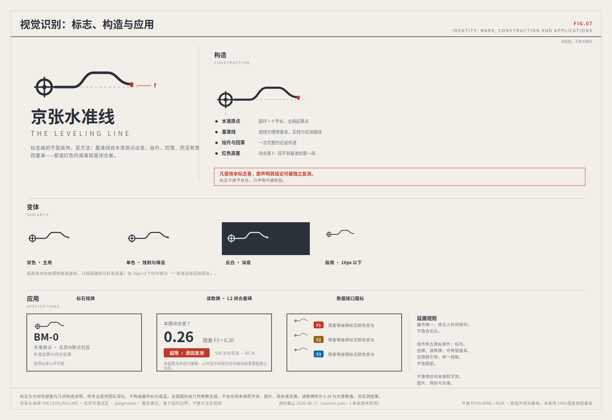
三大定位、五大功能与三区两翼的协同回路（agent.1）
任务书给出三大定位与五大功能 [source:AGENT-TASKBOOK]。本方案不复述，而是把它们接成一条可以闭合的回路——这正是多数并行方案的收敛盲点：本次实测的收敛度见前文母题表——三核、两翼、一脊三项均过三成，具体占比不在此处重复，因为重复就会过期；上表是生成的，这里只用它的结论[source:FIELD-CENSUS-2026-08]。这种高度收敛并非共识，而是任务书本身规定了「三区两翼」所诱导的结果。把同一结构再画一遍没有增量；有增量的是说清楚这些单元之间靠什么机制传递责任。
水准网给出的答案是高程传递：每一站的读数依赖上一站，最后回到原点验算。
`` BM-0 水准原点（AI原点社区） 公共证据枢纽 · 全网起算 ▲ │ 闭合验算 f │ │ 起测 │ ▼ RT-N 北附合路线 ──┴── BM-1 众智园（全栈自主创新·AI治理话语权） │ │ │ 小月河场景赋能翼 BM-2x（场景赋能·活力城市） │ │ RT-S 南附合路线 ──┬── BM-2 大钟寺（智能原生新业态） │ 中关村科技服务翼 BM-2x（要素配置·IP与资本） ``
- BM-1 众智园承担「AI全栈自主创新体系」与「AI治理全球话语权」：它是限差 F 的制定地——本方案称之为限差基准。此前这里写「起算基准」，是用错了术语：测绘学中的起算基准是高程被传递出去的那个点，本方案里那是 BM-0，随包的
check_closure.js也强制每条回路自 BM-0 起测。设标准的地方与起算的地方是两件事，不能共用一个词。 - BM-0 AI原点社区承担「世界级AI创新生态」：全网起算点与闭合验算点，也是本次征集所形成的公共知识库的物理落点。
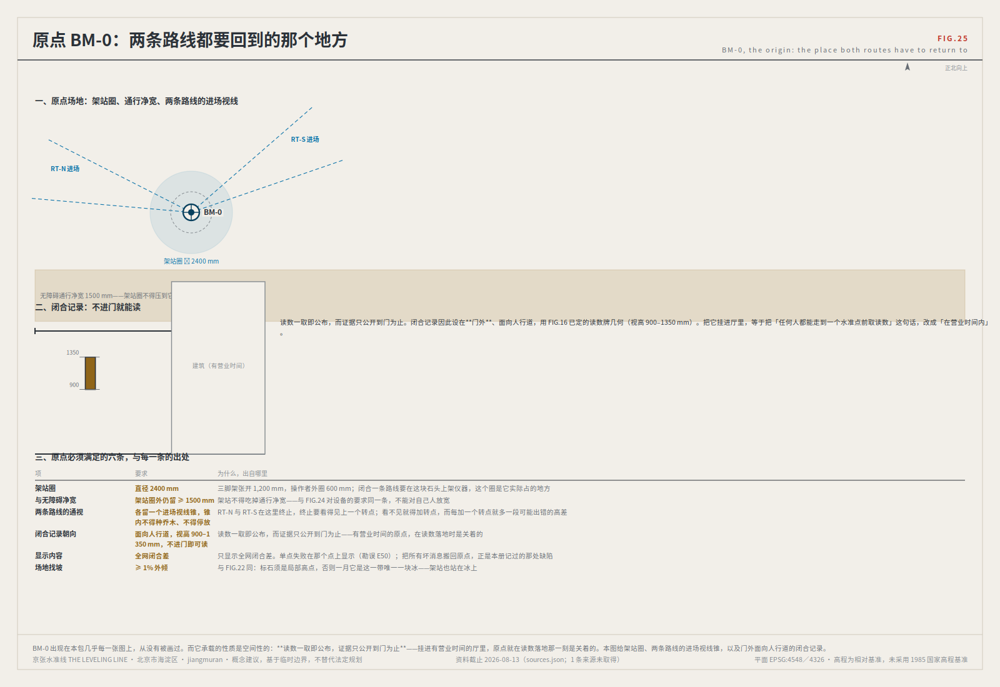
而这个「物理落点」此前只是一个名字。 BM-0 出现在本包几乎每一张图上，从没有被画过——这不是装帧问题：它承载的性质本身就是空间性的。读数一取即公布，而证据只公开到门为止：闭合记录若挂在有营业时间的厅里，原点就在读数落地的那一刻是关着的，「任何人都能走到一个水准点前取读数」这句话也就变成了「在营业时间内」。FIG.25 因此把记录放在门外、面向人行道，用 FIG.16 已定的读数牌视高；给出架站圈 ⌀ 2,400 mm（三脚架 1,200 mm 加操作者外圈），并校验它不吃掉无障碍通行净宽——与 FIG.24 对设备的要求是同一个 1,500 mm，本方案不对自己人放宽，构建时两张图的取值不一致即拒绝。显示的是全网闭合差而不是单点失败：单点失败属于它发生的那个点（勘误 E50）。
- BM-2 大钟寺承担「智能原生新业态」：面向消费与商务的高频场景在此取得读数。
- 中关村科技服务翼提供要素与资本，是路线的支持系统；小月河场景赋能翼提供真实使用人群，是路线的测点密度来源。
五大功能因此不是五个并列口号，而是一条回路上的五个功能位：定基准（众智园）→ 起测（原点社区）→ 取读数（大钟寺与两翼）→ 回原点验算（原点社区）→ 超限重测。这条回路的空间落位见 [data:geometry/public_space.geojson#PUBLIC-001]，整体空间结构对应 [depth:overall_spatial_structure]。
全球AI创新生态案例研究（agent.2）
选取六个案例，每个只回答一个问题：它靠什么机制建立公共信任，那个机制能否被复测。 案例信息均来自公开可查的机构公开材料与公开报道，本方案不引用非公开数据，也不编造企业名单、投资额或产值。
| 编号 | 案例 | 建立信任的机制 | 可复测性 | 对京张的可借鉴点 |
|---|---|---|---|---|
| C1 | 赫尔辛基与阿姆斯特丹的算法登记册 | 公开登记每个在用算法的用途、数据、责任人与申诉入口 | 高：登记项可逐条核对 | 直接构成水准点铭牌的信息底稿 |
| C2 | 欧盟 AI 法案的风险分级 | 按风险等级施加差异化义务 | 中：分级可核，执行需监管 | 支撑限差 F 的分级设定 |
| C3 | 新加坡 AI Verify 测试框架 | 以标准化测试工具产出可比报告 | 高：测试可重跑 | 提供复测的技术执行形态 |
| C4 | 英国 NHS 的算法影响评估实践 | 高风险场景强制事前评估与事后审查 | 中高：留档可查 | 支撑医疗类场景的最严限差 |
| C5 | 台北与巴塞罗那的市民数据自治实践 | 数据用途由市民议程决定 | 中：议程公开 | 支撑三等水准点的公众复测权 |
| C6 | 开源社区的可复现研究规范（如 artifact evaluation） | 论文结论须附可重跑的产物 | 高：产物可执行 | 本方案按此规范公开全部生成脚本与数据产物 |
六个案例共同指向一个空缺：它们都在登记与评估，没有一个把「回到原点验算」制度化。 登记册告诉你系统声明了什么，评估告诉你专家怎么看，但没有一个机制回答「同一个公共问题，经过不同节点、不同时间，得到的结论差多少」。闭合差补的正是这个空缺。
AI创新生态图谱与要素机制（agent.2）
生态图谱按「要素—空间—复测责任」三列组织，避免把产业招商写成确定安排：
| 要素 | 空间承载 | 水准点归属 | 复测项 |
|---|---|---|---|
| 土地与空间 | 重点区更新地块 | BM-1 / BM-0 / BM-2 | 空间供给兑现率 |
| 算力 | 集约算力节点 | BM-1 | 公共算力可申请比例 |
| 数据 | 数据要素流通场所 | BM-2 | 授权链完整率 |
| 场景 | 两翼真实使用场所 | BM-2x | 场景退出可执行性 |
| 资金 | 科技服务翼 | 中关村翼 BM-2x | 无 |
| 人才 | 人才社区与第三空间 | BM-0 | 服务满意度复测 |
「资金」一列的复测项刻意留空：投融资安排属于市场主体决策，不应被城市设计方案写成治理指标，更不得表述为财政承诺。这一留空本身是合规声明 [standard:PROJECT-AGENT-OPEN-CALL-TASKBOOK]。
产业与空间的对应关系落在 [data:geometry/land_use.geojson#LU-001]，指标口径见 [metric:key_area_count]。要素保管链与六个案例的完整对照见下图——「资金」一栏的复测项在图中是一个空格，那是判断不是疏漏。
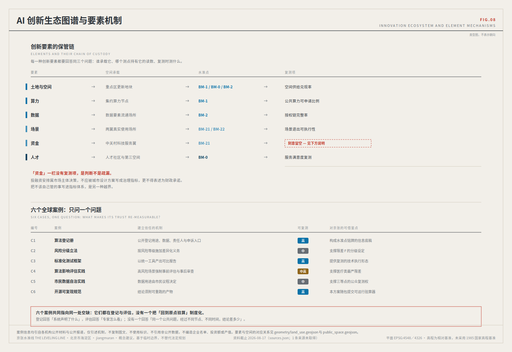
区域创新协同：把水准网外延为区域水准网（agent.1）
任务书要求回应与北纬社区、未来科学城、怀柔科学城、经开区及京津冀的创新协同 [source:AGENT-TASKBOOK]。多数协同论述停在「加强联动、共建平台」一类表述上——这类表述无法被检验，因此也无法被执行。水准测量提供了一个可执行的协同形式：水准网天然是可以联测的。两张独立的水准网只要共用起算基准与限差口径，就能通过联测接成一张更大的网，而不需要任何一方放弃自己的管理权限。
因此本方案提出的协同机制是跨区域限差互认，共三条：
| 机制 | 内容 | 可检验点 |
|---|---|---|
| 限差口径互认 | 各创新组团采用同一套限差分级定义（F1/F2/F3 的适用条件与计算口径），数值可各自从严 | 口径文件公开可比对 |
| 闭合记录随场景迁移 | 一个 AI 场景在京张取得的闭合记录（读数、复核主体构成、超限与整改历史）随场景迁移至其他组团，作为准入材料 | 记录可逐条核对，不可事后编辑 |
| 联测节点 | 各组团各设一处对外联测点，定期就同一组公共问题交换读数，计算区域闭合差 | 区域读数公开，差值可复算 |
第二条是关键，它把协同从「签协议」变成「省重复」：一个已在京张跑过完整复测周期的场景进入其他组团时，带着可核验的闭合记录，接收方无需从零验证，只需复核记录并按本地限差判定。协同的收益因此是具体的、可计量的行政成本节省，而不是一句愿景。
五个协同对象各自换什么
任务书点名的五个对象在创新链上处于不同环节，因此与本带交换的东西也不同。把它们写成同一段话，等于没有协同。
| 对象 | 其所处环节 | 与本带交换什么 | 为什么是它 |
|---|---|---|---|
| 经开区 | 量产与高级别自动驾驶道路测试 | 速度域互补的闭合记录互认 | 这是五者中与本方案最直接相关的一个：经开区面向机动车速度域与开放道路，本带面向行人尺度与低速设备。同一台设备在两个速度域的行为完全不同，因此两地的闭合记录不能互相替代，但可以互相衔接——在本带取得 F1 合格是进入行人密集区的条件，不是进入车行道的条件，反之亦然。这一条需要双方各自确认，本方案不代其决定 |
| 未来科学城 | 企业研究院与工程化 | 场景需求与真实使用人群 | 本带的两翼提供真实使用者密度，是研究院成果的验证场；换回的是工程化能力 |
| 怀柔科学城 | 大科学装置与基础研究 | 测量方法本身 | 唯一与本方案在方法层而非应用层协同的对象：闭合差的量化口径、复测周期设定、限差修订的统计依据，都属于测量科学问题 |
| 北纬社区 | 任务书点名的创新社区 | 测点互设与复核主体交换 | 本方案不掌握其具体定位，仅提出机制接口：互设联测点、交换复核主体，使双方的读数可比 |
| 京津冀 | 跨省域协同 | 限差口径的跨省互认 | 层级最高、也最慢的一层。本方案只主张口径先行——口径不统一，任何跨省记录互认都无从谈起 |
必须说清楚的边界：以上对各对象所处环节的描述，基于公开可查的一般性定位，未经各方确认；本方案不掌握任何一方的内部规划，不代表任何一方作出承诺，也不假设已获得任何协同意向。表中每一行都是可供各方独立评估的机制接口建议，其中「经开区」一行的速度域互补关系需要以双方实际测试规程为准核定。
本方案不代替任何组团作出决定，也不假设已获得任何协同承诺；上述为可供各方独立评估的机制建议 [standard:PROJECT-AGENT-OPEN-CALL-TASKBOOK]。区域层面的空间关系以统筹研究范围为界面 [data:geometry/site_boundary.geojson#SITE-001]。
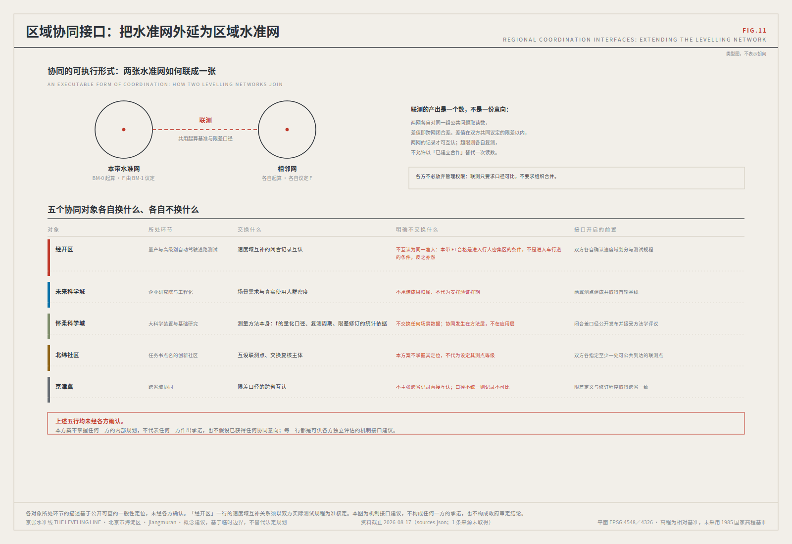
上表已画成图：FIG.11「区域协同接口」（assets/figures/region-interface.png，并置于 A0 展板二）。画出来是有原因的：协同这一项最常见的答法是「加强联动、共建平台」，这类表述无法被检验，因此也无法被执行。水准测量给了它一个可执行的形式——两张独立的水准网只要共用起算基准与限差口径，就能通过一次联测接成一张更大的网，而联测的产出是一个数（跨网闭合差），不是一份意向。图中每一行除了「交换什么」，还必须写出「明确不交换什么」与「接口开启的前置」：一个没有写明不承诺什么的接口，等于替对方许了诺。
总体设计范围城市更新与控规深度城市设计
总体设计范围的核心任务，是把水准网从概念落成可建造的空间序列 [depth:land_use_layout]。
主脊（水准线）：以京张铁路遗址公园现状线性绿廊为骨架，形成连续可步行的公共轴。主脊的空间任务不是再造景观，而是承载测点——每隔一段设置一处可停留、可展示读数、可发起复测的公共节点。
开发强度与高度：本方案不给出容积率、建筑高度、建筑密度、退线与道路红线的具体数值 [depth:development_intensity_controls] [depth:height_massing_character]。这些属于法定控规管控内容，须以官方控规条件为准 [standard:MOHURD-CONTROL-DETAILED-PLANNING]；在官方数据缺位的前提下给出数值，属于伪造确定性。本方案给出的是形态原则：主脊两侧保持贯通的天际视廊与连续界面，重点区内部由低向外围递增，历史节点周边以现状为上限。待官方控规条件公布后，按本节原则生成具体数值并整体重算。
风貌：全线以「基础设施的诚实」为风貌基调——保留铁路构筑物的工程语言（轨枕、道砟、信号杆、里程标），新建部分不模仿历史样式，以清晰可辨的当代材料并置，使一百年的时间层次在同一视野中可读。
控规深度的城市设计要给什么
法定控规给数值，城市设计给关系。本方案在总体设计范围内给出六组可被逐条核对的形态与界面规定，全部为相对关系与原则性要求，不含法定管控数值 [depth:height_massing_character]。
一、街道界面连续性。主脊两侧界面须连续，不得出现由围墙、停车场出入口或消极后退形成的断口。界面断口的判定标准是行人视线在连续行走中是否被无功能的空白打断，可现场实测计数，因此可复核。既有围墙优先改造为可透视、可停留的界面，而非拆除重建。
二、底层公共性。主脊沿线建筑底层须承担公共功能（对外服务、展示、休憩、卫生间任一），不得为纯设备层或纯门厅。这一条与水准网直接相关：测点需要有人在场才可能被复测，而底层无功能的界面不会有人停留。
三、视廊。保持主脊纵向天际视廊贯通，以及在历史节点处向铁路遗产构筑物的横向视廊。视廊为保护性要求：新建体量不得进入视廊，具体控制面须在官方控规条件与文保范围公布后核定，本方案不预设控制线。
四、界面高度的相对关系。不给绝对高度，给三条相对规则：紧邻主脊的界面不高于其外侧界面；历史节点周边以现状高度为上限；重点区内部由主脊向外围递增。这三条在任何官方数值下都成立，因此不会因数据发布而失效。
五、地块细分原则。主脊沿线不宜出现进深过大、单一权属的超大地块——超大地块必然产生长段无出入口的封闭界面，也使跨管辖测点无处设置。细分尺度须结合权属现状确定，本方案给原则不给尺寸。
六、货运与出入口组织。机动车出入口与货运装卸不得开向主脊；低速设备的充电与待命位不得占用主脊步行界面（详见交通章节的路缘分配顺序）。这一条是使「主脊是连续公共轴」在建成后仍然成立的必要条件——否则连续性会被出入口逐段切碎。
东西缝合：给类型与优先级，不给工程结论
主脊被若干既有干道横向切断，缝合是总体设计范围的核心任务之一。本方案把缝合点按代价与可行性分三类，并明确本方案不做工程判断：
| 类型 | 特征 | 本方案给出的内容 |
|---|---|---|
| A 类·可即时改善 | 现状已有过街设施，问题在于绕行距离、坡度或等候安全 | 优先级排序与改善方向；属近期项目 R1–R4 的可附带内容 |
| B 类·需渠化改造 | 需调整信号、渠化或人行道拓宽 | 连通需求与判定依据；须交通专项论证 |
| C 类·需新建结构 | 需桥、隧或地下通道 | 仅登记需求，不做可行性结论 |
这一节此前只有分类，没有几何——现在有了。 本方案的 roads.geojson 长期只含主脊与两条测量路线，而正文用整整一节讨论缝合点，却拿不出任何可被核验的空间对象。这与本方案在别人结构化字段里报告的缺陷是同一个，因此补齐：
以提交的主脊 ROAD-001 与 OSM 实测干道（trunk/primary/secondary，须有名称）在 EPSG:4548 下求交，得到 11 个东西缝合点，逐一写入 [data:geometry/roads.geojson#ROAD-001]（ROAD-101 至 ROAD-111），每段为垂直于该干道的连通提案：
| 缝合点 | 类别判定 | 最近已测绘过街设施 |
|---|---|---|
| 北三环 | A 类 | 33 m |
| 北四环中路 | A 类 | 30 m |
| 学院南路 | A 类 | 25 m |
| 银泉路 | A 类 | 10 m |
| 北土城西路 | 仅登记需求 | 65 m |
| 西直门北大街 | 仅登记需求 | 68 m |
| 清华东路 | 仅登记需求 | 86 m |
| 石板房南路 | 仅登记需求 | 146 m |
| G6 辅路（两处） | 仅登记需求 | 166 m / 175 m |
| 志新路 | 仅登记需求 | 201 m |
判定口径只用一件可测的事：交叉口附近是否已有已测绘的过街设施。 半径 60 m 内有，判 A 类——现状已有过街，问题在绕行距离、坡度与等候安全；没有，则只登记连通需求，不判类别，因为 B 类（需渠化）与 C 类（需新建结构）的区分是交通专项论证的结论，本方案拒绝代为判定。半径写在脚本里，改了可重跑，全部读数随包提交于 visual/assets/osm_stitching.json。
限度也要说清：OSM 为众包数据，过街设施可能未被完整测绘——判为「仅登记需求」只说明OSM 上没有，不等于现场没有。干道位置为 OSM 实测，非官方道路中心线，不得作为红线或精确定线依据；该数据定级 background_only，用于定位需求，不作为空间结论的证据。
三类的划分依据是「达成连通所需的审批与工程层级」，而非重要性——重要的连通点可能是 C 类，因此长期无法实现，这一点必须在方案里说出来，而不是画一条线假装它已解决。 缝合点的空间落位待官方边界与道路条件公布后核定 [standard:MOHURD-CONTROL-DETAILED-PLANNING]。
本方案在本节不决定的事项：容积率、建筑高度、建筑密度、绿地率、退线、建筑控制线、道路红线、地块划分尺寸、视廊控制面、任何工程可行性结论。
重点区域详细设计
<!-- KEYAREAS:BEGIN -->
| 重点区 | 范围面积 | 水准职能 | 主导用途（占本区面积） | 区内用地类别数 | 公共测点 / 建筑基底 |
|---|---|---|---|---|---|
| 大钟寺 AI 产业集聚区 | 72.0 ha | BM-2 | 产业与商业服务 99% | 2 | 1 / 2 |
| 北京 AI 原点社区 | 104.3 ha | BM-0 | 社区服务与配套 94% | 2 | 1 / 1 |
| 众智园 AI 自主创新加速区 | 192.9 ha | BM-1 | AI研发与科研 100% | 2 | 2 / 2 |
三区合计 369.3 ha，占总体设计范围 32.4%。占比的分母是本重点区自身的面积，不是设计范围——分母不写明的占比，正是本包在勘误册里记过的那型缺陷。
主导用途一列近乎 100%，这一点写出来而不是藏进「前三类」：本方案的用地剖分给每个重点区一个主导用途，区内不再细分。 生成这张表之前它不曾被说出口——「前三类」的写法会把它显示成 99%／1%，看上去像有层次。它是判断不是疏漏：三处重点区的名称来自公告，几何是临时替代边界，而区内细分依赖权属、控规与拆改留——同一批未公开的数据。一个 193 ha 的片区只给一个用途，作为「详细设计」是薄的，本方案承认这一点，并把它挂在一个具体的前置条件上而不是含糊过去：官方 polygon 与控规公开后，这三格是最先要被替换的三格。
用地边界与重点区边界均为临时替代边界，官方 polygon 发布后须整体重算；逐区平面见 FIG.04，剖面见 FIG.13——三幅同尺度、同一基准约定，正是为了让「三处像一个模板用了三次」这条评图意见可以被否证。
<!-- KEYAREAS:END -->
三处重点区各承担一级水准职能，形成互相验算的关系 [depth:three_key_area_detailed_design]。
| 片区 | 水准职能 | 设计定位 | 空间动作 | AI 场景与运营 |
|---|---|---|---|---|
| 众智园AI自主创新加速区 [data:geometry/key_areas.geojson#PROV-KEY-001] | BM-1 限差基准 | 全栈自主创新与治理标准策源 | 设限差议事厅（公开制定与修订 F 值）；沿清河界面组织低碳交往环境；预留标准测试场地 | S11 产业测试场景；面向企业的合规预检服务 |
| 北京AI原点社区 [data:geometry/key_areas.geojson#PROV-KEY-002] | BM-0 水准原点 | 近校创新、开源体系与人才特区 | 设水准原点标石与公共证据厅（本次征集全部方案的永久陈列与检索）；校区—园区慢行直连；轨道站一体化 | S01 场景开放日；S07 开源协作；人才服务复测 |
| 大钟寺AI产业集聚区 [data:geometry/key_areas.geojson#PROV-KEY-003] | BM-2 高频读数点 | 智能原生消费与商务 | 路口四象限步行连通；规划绿地复合利用；大钟寺站一体化 | S03 智能体商务；S05 数据要素流通；S09 生活服务样板街 |
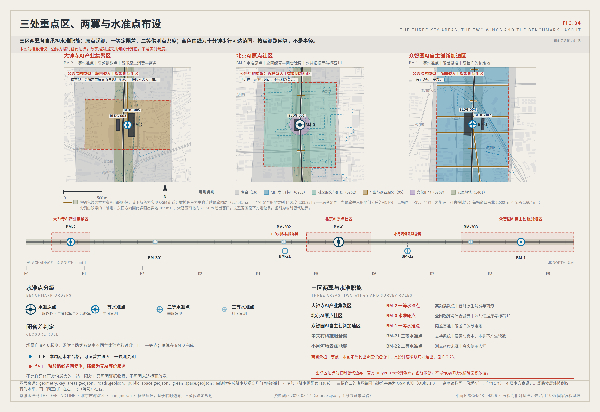
众智园 AI 自主创新加速区（BM-1 · 限差基准）
为什么限差基准放在这里：定标准的位置应设在最稳定、最不受日常波动影响的地方。众智园承担全栈自主创新与治理标准策源，是限差 F 的制定地——定标准的地方不应同时是高频运营的地方，否则标准会随运营压力漂移。
- 功能业态：研发与中试为主，配置标准测试场地、限差议事厅（公开制定与修订 F 值的常设空间）、产业展示界面。测试场地须可围合、可暂停、可回滚，其受控边界见 [data:geometry/constraints.geojson#CONSTRAINT-001]。
- 建筑与规模：示意基底见 [data:geometry/buildings.geojson#BLDG-001]，含测试场与议事厅（BLDG-004）与 L2 闭合差碑（BLDG-002，已与前者错位布置，不共用地面）。规模量级仅供说明，不构成建筑方案。
- 拆改留：以改造为主。权属清晰、结构安全的既有厂房与研发楼优先改造为测试与展示空间；不提出拆除结论。
- 公共空间连通：沿清河界面组织低碳交往环境，形成从主脊到水岸的连续步行；此界面同时是二等测点的候选位置。
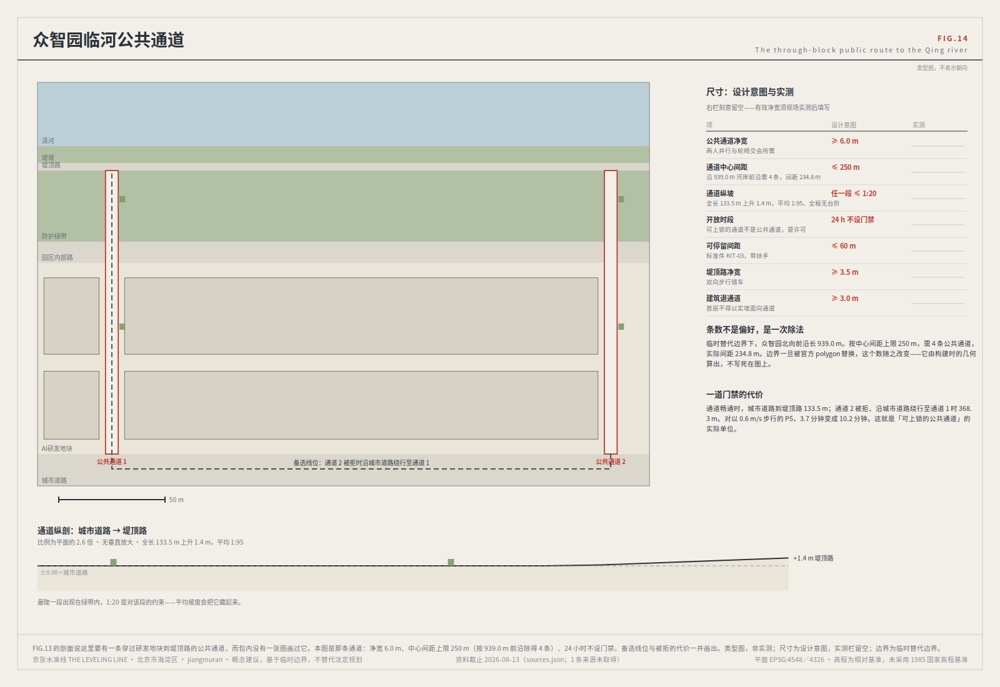
「连续步行」在 100% 单一用途的地块前沿意味着必须穿过地块。FIG.14 画出那条通道，并把地块拒绝时的代价写成分钟。
- 交通组织：对外交通以货运与试验设备运输为特征，须与主脊步行界面分离——货运出入口不得开向主脊。
- 承载场景：S11 AI产业测试验证场（F1）、S10 公共安全运行复盘（F1）。两者均为不得自动执行的场景。
北京 AI 原点社区（BM-0 · 水准原点）
为什么原点放在这里：原点必须是公众最容易到达、且与知识生产最近的地方。近校位置同时满足两者。
- 功能业态：近校创新、成果孵化转化、人才特区与开源体系。核心新增是公共证据厅——本次征集全部方案与后续全部复测读数的永久陈列与检索空间，向公众开放，不设门禁。
- 标志物：水准原点标石 L1（BLDG-001），与地面齐平的金属标石，四周地面铺设贡献者编号序列。这与征集承诺的碑刻机制天然咬合：水准点标石本就是为百年后复测者留下的永久标记。
- 拆改留：以留改结合为主，居住生活配套不得因创新功能植入而减配。人才公寓与既有居住的关系须以不减少现有居住供给为前提——而这条约束目前不可核验：现状居住建筑面积未公开，本包也未测，
metrics.json中existing_residential_floor_area_sqm保持 unknown 并写明前置条件。按本方案自己的标准，一条无法核验的规则只能作为深化阶段的必检项，不能声称已满足。0701 城镇住宅与 0804 教育用地不出现在用地图层里，是因为它们落在十一个留白街区内、其边界依赖同一批未公开数据——这是判断，不是遗漏。 - 公共空间连通：校区—园区慢行直连是本片区的关键动作，其成败判据是 P3、P4 画像的实际步行时间而非直线距离。轨道站一体化按「站—点合一」组织，站厅兼作三等测点。
- 交通组织：以步行与非机动车为主导；跨管辖问题在此最突出——本片区测点同时涉及公园管理与校园两类管辖 [data:geometry/public_space.geojson#PUBLIC-001]。
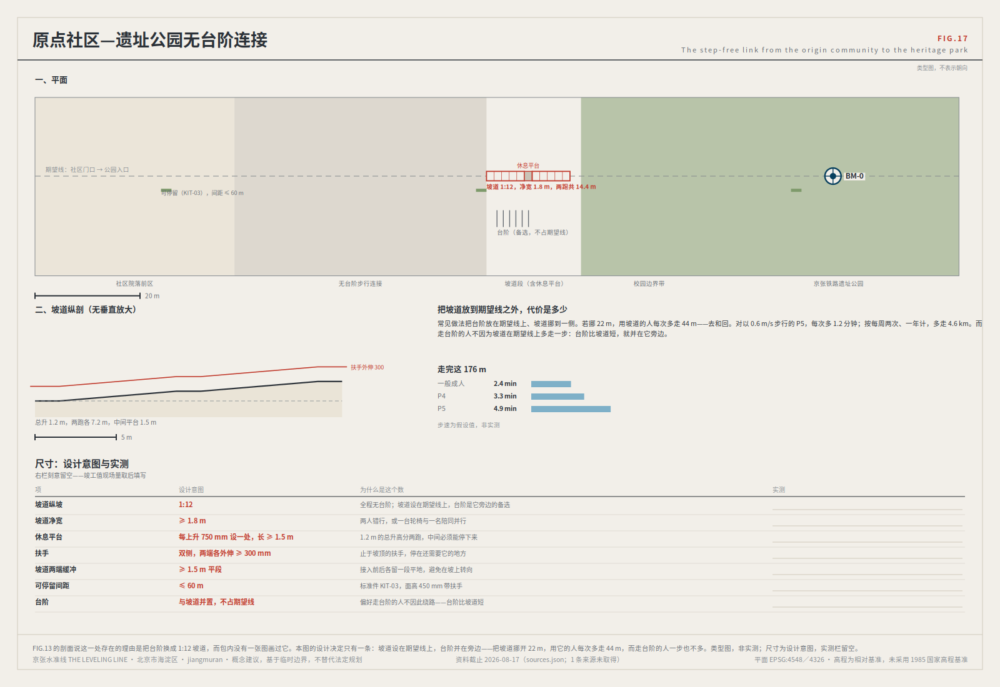
这条连接的设计决定只有一条，见 FIG.17：坡道设在期望线上，台阶并在旁边。
- 承载场景：S01 场景开放日、S07 开源协作（均 F3）；人才与公共服务类复测在此起算。
大钟寺 AI 产业集聚区（BM-2 · 高频读数点）
为什么高频读数点放在这里：消费与商务界面人流最密、使用频次最高，最容易暴露服务类 AI 的离散度——高频是取读数的资源，不是负担。
- 功能业态：领军企业与智能终端、内容消费、数据要素与数字资产流通、商业服务。数据要素流通场所是 S05 的空间载体。
- 建筑与规模：智能原生商务界面（BLDG-005）与 L3 归零点（BLDG-003，错位布置）。归零点是年度仪式空间，平日为公共停留场所，不做单一用途。
- 拆改留：以改造与复合利用为主。规划绿地复合利用须以绿地功能不降级为前提，复合的是使用时段与人群，不是把绿地变成建设用地。
- 公共空间连通：路口四象限步行连通是本片区最具体的空间任务，也是设备排队储备空间的关键位置——四象限连通若不成立，设备与行人必然在同一等候区冲突（详见交通章节）。
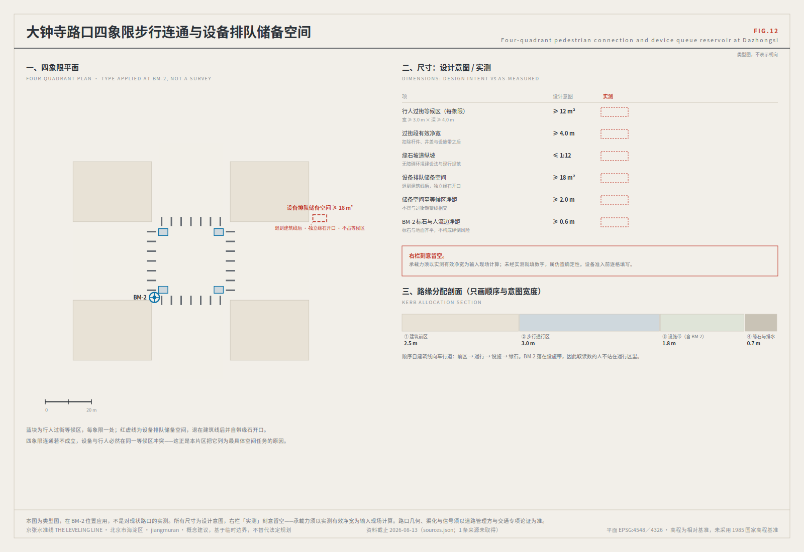
这一条此前只是一句话。FIG.12 把它画成图：四象限等候区、退到建筑线后的设备排队储备空间、以及一栏刻意留空的实测尺寸——承载力须以现场实测有效净宽为输入计算。
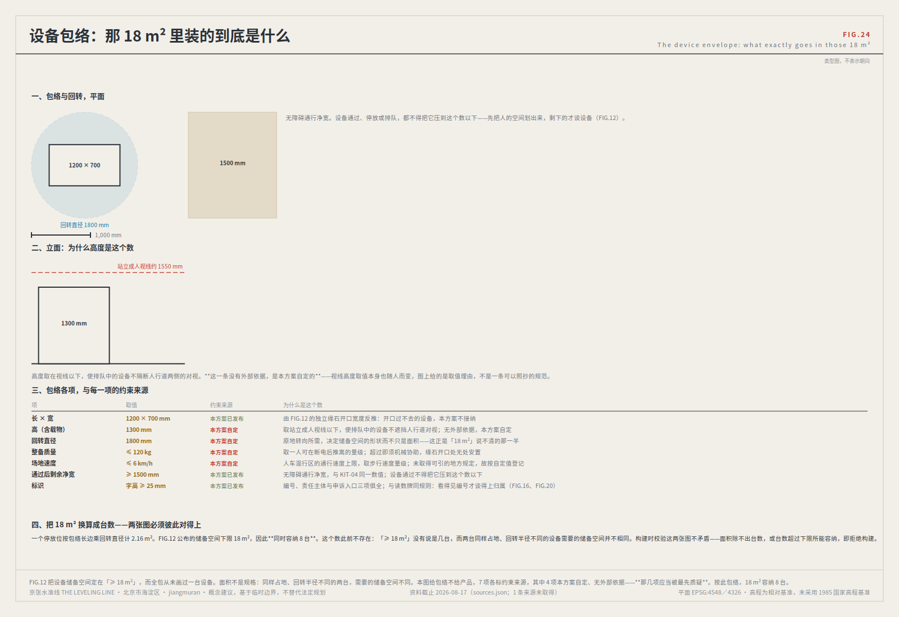
而那 18 m² 里装的是什么，此前也没有说过。 FIG.12 给了储备空间的下限，全包却从未画过一台设备、也没写过它多大——面积不是规格：同样占地、回转半径不同的两台设备，需要的储备空间并不相同。FIG.24 补上包络而不是产品：不写厂商与型号，只固定一个空间提案有权固定的东西——设备可占的体量与必须让出的净宽。七项尺寸逐项标注约束来源，其中三项是本方案自定、无外部依据，图上直接标红，因为那三项应当被最先质疑。按此包络，18 m² 同时容纳 8 台；两张图对同一块地方的说法由构建校验，除不出台数即拒绝构建。
- 交通组织：大钟寺站一体化；本片区测点涉市政道路、轨道站与商业物业三类管辖，是全线管辖最复杂的测点。
- 承载场景：S03 智能体商务服务台、S05 数据要素授权链、S09 生活服务样板街（F2 为主）。
三片区共同的拆改留原则
「拆改留」分类须以现状建筑权属与结构安全评估为前提，二者目前均为数据缺口。本方案因此不对任何具体地块给出拆除结论 [depth:retain_renovate_demolish]，仅提出分类原则：
1. 铁路遗产构筑物原则留，且保留其工程语言而非仅保留外壳； 2. 权属清晰且结构安全的既有建筑优先改，改造须优先解决底层公共性与界面连续性； 3. 无权属争议的低效空地优先用于测点与公共空间，而非优先用于新建开发； 4. 任何涉及居民搬迁的建议均不在本方案范围内——本方案不提出此类建议。
三处片区的边界均为临时替代边界 [source:KEY-AREA-SOURCE]，官方 polygon 发布后须整体重算，不得只替换单个片区。
AI 创新生态、人才画像与 AI+ 场景
用户画像（agent.3，九类）
画像若只写「居民、青年、访客」，就无法用来判断一个场景会把谁排除在外。因此下表按会改变 AI 服务可及性的属性建立：年龄、能力、数字技能、语言、收入区间、照护责任、出行限制。每一行末列写明该画像在水准网中的角色——画像不是受益人清单，是取读数的人。
<!-- PERSONAS:BEGIN -->
| 编号 | 画像 | 年龄 | 能力与出行限制 | 数字技能 | 语言 | 收入区间 | 照护责任 | 在水准网中的角色 |
|---|---|---|---|---|---|---|---|---|
| P1 | 全栈研发人员 | 25–40 | 无限制；深夜通勤 | 高 | 中/英 | 中高 | 少 | 提供技术复测能力，负责 F1 测项的技术读数 |
| P2 | 创业团队与开发者 | 22–38 | 无限制 | 高 | 中/英 | 波动大 | 少 | 场景的主要提出方，须接受复测约束 |
| P3 | 高校师生 | 18–30 | 无限制；预算敏感 | 高 | 中/英 | 低 | 无 | 三等点高频使用者，季度开放日主力 |
| P4 | 周边长期居民（老年人） | 65+ | 步行速度慢、视听力下降、久站困难 | 低；部分不使用智能手机 | 中文方言 | 低至中 | 常需照护他人或被照护 | 拥有独立复测发起权；健康导航类场景的读数由本群体取得 |
| P5 | 轮椅使用者与行动障碍者 | 全年龄 | 需连续无障碍路径、坡度与净宽约束、缘石高差敏感 | 中至高 | 中文 | 差异大 | 差异大 | 轮椅并行让行测项由本群体本人取读数，不由工程人员代测 |
| P6 | 儿童与照护者 | 0–12 及其家长 | 身高低、行为不可预测、需推车通行 | 儿童无；照护者中高 | 中文 | 差异大 | 照护责任为主要约束 | 低速设备遇人让行测项的最严条件由本群体设定 |
| P7 | 一线服务人员（骑手、快递员、保洁、安保、维修） | 20–55 | 长时户外、需如厕与遮阴、时间压力大 | 中；工具化使用为主 | 中文 | 低至中 | 多为家庭主要收入者 | 既是主脊高频使用者，也是被设备替代风险的承受方；其岗位变化进入复测项 |
| P8 | 企业服务与运营人员 | 28–50 | 无限制 | 高 | 中/英 | 中高 | 差异大 | 执行季度复测，承担运营方读数责任 |
| P9 | 国际访客与研究者 | 全年龄 | 语言与标识依赖 | 高 | 英文及其他 | 差异大 | 少 | 外部独立复测来源，测的是「不熟悉本地语境的人能否用」 |
<!-- PERSONAS:END -->
为什么把 P4–P7 放在链条核心而不是末端：一个只有专家能发起的复核机制，其闭合差永远测不出专家看不见的问题。工程人员测不出轮椅使用者遇到的失效，年轻研发人员测不出老年人对语音提示的误解，而没有人比骑手更知道一条路缘在雨天意味着什么。取读数的人决定了这套机制能测出什么，因此谁取读数是设计决策，不是参与形式。
非智能手机用户与低数字素养者的硬约束（对应 P4、P7）：
- 每个场景必须存在不依赖智能手机的使用路径（现场人工、纸质、语音电话任一），且该路径不得更慢、不得需要额外往返；
- 现场申诉入口必须同时提供非扫码方式，否则申诉权对 P4 不成立；
- 复测通知与读数公示必须有线下张贴版本，不得仅在线发布。
以上三条不可通过运营调整豁免，其达标情况按复测周期核查并计入读数。
AI 场景卡（agent.3，十二张）
每张场景卡统一给出八个字段：服务对象、空间载体、数据来源、人工复核点、退出条件、所属水准点、限差等级，以及适用全部十二张卡的统一隐私与人工复核边界（见下一节「三条红线」末尾）。限差等级 F1 最严（涉人身安全或行政决定）、F2 中（涉个人权益）、F3 宽（纯信息服务）。
下表由 visual/assets/scenario_cards.json 生成，不是手写的。 卡片先前是一张无法被联接的表：六张卡把水准点写成 BM-2x、BM-3xx——那是占位符不是 id，接不到 public_space.geojson 里的任何一点；十一张卡的退出条件写「超限」，而「限」是什么量、由谁执行，全篇没有定义。现在卡片是数据，node visual/assets/check_cards.js 逐卡把水准点、空间载体锚点、退出量、执行角色解析到实际存在的对象上，任一解析不到即拒收；--selftest 会用八份人为改坏的卡片证明这些检查确实会拒绝。
标 * 的限差尚未设定值。 F3 的初值 0.20 已公布，F1、F2 由 BM-1 的限差议事厅设定，本方案不代为拟定——在这里写一个看起来合理的数字，正是本方案通篇反对的那种替换。因此十张卡在 scenario_cards.json 里被标为 operational: false 并写明原因——九张因限差未设定（即表中标 * 的九张），S01 则是限差已定而退出阈值未定，两者原因不同，文件里分开写明——而不是让缺口藏在「超限」两个字里。
<!-- CARDS:BEGIN -->
| 卡号 | 场景 | 服务对象 | 空间载体 | 数据来源 | 水准点 | 限差 | 人工复核点 | 退出触发 → 动作 → 执行角色 |
|---|---|---|---|---|---|---|---|---|
| S01 | 场景开放日与公共体验路径 | P2 P3 P9 | 主脊节点·水准原点 [data:geometry/public_space.geojson#PUBLIC-001] | 现场报名与签到聚合计数；活动安全预案备案记录 | BM-0 | F3 | 活动安全预案 | 连续两期 participation_rate < (阈值待首轮基线设定) → 停办并改版后重启 → 公园管理方 |
| S02 | 慢行断点识别与修补 | P3 P4 P5 | 主脊与联络路 [data:geometry/roads.geojson#ROAD-001] | 现场人工核验记录；无障碍设施台账（聚合，不含个人数据） | BM-21 BM-22 | F2* | 现场人工核验断点 | 按周期 breakpoint_false_positive_rate > (阈值待首轮基线设定) → 回退人工巡查，系统降级为线索提示 → 市政道路管理方 |
| S03 | 智能体商务服务台 | P2 P8 | 大钟寺商务界面 [data:geometry/public_space.geojson#PUBLIC-003] | 公开办事指南与政策文本；服务抽查复核记录 | BM-2 | F2* | 涉合同事项人工签署 | 按周期 service_error_rate > (阈值待首轮基线设定) → 降级为纯咨询，不得代办 → 运营主体 |
| S04 | AI健康服务导航 | P4 P6 | 社区服务中心 [data:geometry/public_space.geojson#PUBLIC-006] | 公开的机构与科室目录、排班与导诊信息；不接入任何诊疗记录 | BM-301 BM-303 | F1* | 全部诊疗建议须执业人员确认 | 任一周期 misleading_output_count >= 1 起 → 整段停用并复测，复测通过前只保留人工路径 → 运营主体 |
| S05 | 数据要素授权链可视化 | P2 P8 | 大钟寺数据要素流通场所 [data:geometry/public_space.geojson#PUBLIC-003] | 流通环节自带的授权凭证与变更记录；不读取被授权数据本身 | BM-2 | F2* | 授权变更人工确认 | 任一时点 authorisation_chain_break_count >= 1 起 → 停止该数据项流通，直至授权链补齐 → 运营主体 |
| S06 | 低速机器人配送与巡检 | P4 P5 P6 P7 | 主脊与园区内部路 [data:geometry/roads.geojson#ROAD-001] | 设备运行日志与接管记录；分段承载上限公示值；不采集可识别个人的影像 | BM-21 BM-22 | F1* | 遇人让行与人工接管 | 任一时点 safety_incident_count >= 1 起 → 全域暂停同类机型，不是停涉事那一台 → 运营主体 |
| S07 | 开源协作与成果发布 | P2 P3 | 原点社区公共证据厅 [data:geometry/public_space.geojson#PUBLIC-001] | 投稿方自述的权利声明与许可；公开可核的引用来源 | BM-0 | F3 | 发布内容版权核验 | 任一时点 copyright_dispute_count >= 1 起 → 立即下架并复核，复核结论一并公开 → 运营主体 |
| S08 | AI文化导览 | P3 P9 | 遗址公园全线（附合路线 RT-N） [data:geometry/roads.geojson#ROAD-002] | 公开史料与已公布的文物保护说明；史实审校方的书面意见 | BM-0 BM-303 BM-1 | F3 | 史实陈述人工审校 | 任一时点 historical_error_count >= 1 起 → 整条导览线下线重校；连续两期 f > F → 整线下线重校（与 R3 同一动作，两条触发彼此独立） → 公园管理方 |
| S09 | 生活服务样板街 | P4 P7 P8 | 社区商业交汇处 [data:geometry/public_space.geojson#PUBLIC-006] | 公示价格与资质信息；第三方判定的投诉台账（聚合） | BM-301 | F2* | 价格与资质人工核验 | 按周期 complaint_rate > (阈值待首轮基线设定) → 退出该街段，恢复常规服务 → 区级主管部门 |
| S10 | 公共安全运行复盘 | P8 | 众智园运行中心 [data:geometry/public_space.geojson#PUBLIC-002] | 事后复盘所用的运行记录，均为已发生事件的留档；不接入实时监控，不做预测性判断 | BM-1 | F1* | 全部处置建议由人工决定 | 任一时点 automated_execution_count >= 1 起 → 终止该场景，不设复测重启路径 → 区级主管部门 |
| S11 | AI产业测试验证场 | P1 P2 | 众智园测试场地 [data:geometry/public_space.geojson#PUBLIC-002] | 受测方提交的测试方案与边界公示；场地自有的越界检测记录 | BM-1 | F1* | 测试边界人工设定 | 任一时点 boundary_breach_count >= 1 起 → 封场，该受测方须重新提交方案 → 测试场管理方 |
| S12 | 无障碍路径实时校核 | P4 P5 | 全线慢行系统 [data:geometry/roads.geojson#ROAD-001] | 使用者本人现场判定记录；无障碍设施台账。读数须由受影响本人取得，不得由代理人代取 | BM-301 BM-302 BM-303 | F2* | 使用者反馈优先于算法判定 | 连续两期 user_override_count >= 1 次 → 以人工结论为准并改正台账 → 市政道路管理方 |
<!-- CARDS:END -->
三条红线不是本方案的善意，是现行法规的义务
本方案此前把「无AI等价路径」「任一违规即停用」「申诉必须有数字时限」写成自己的设计判断。核读评分最高的方案后意识到这是个弱化：这三条在现行法规里已经是义务，写成设计偏好反而降低了它们的效力。 以下三条依据由本方案作者逐一读取官方全文核实，条号与要义如实引述，不复制全文。
| 本方案的规则 | 法定依据（已核实） | 效力变化 |
|---|---|---|
| 每个场景必须存在无AI等价服务路径 | 《中华人民共和国无障碍环境建设法》第三十九条：提供医疗、保险、金融、水电气等服务的场所，应当保留现场指导、人工办理等传统服务方式 [source:BARRIER-FREE-ENVIRONMENT-LAW] | 从「设计者的善意」变为法定义务 |
| 发现问题即停止生成与传输，不得先观察 | 《生成式人工智能服务管理暂行办法》第十四条：提供者发现违法内容的，应当及时采取停止生成、停止传输、消除等处置措施 [source:GENERATIVE-AI-INTERIM-MEASURES] | 从「本方案的停用规则」变为提供者义务 |
| 申诉必须给出数字时限，否则不可执行 | 同办法第十五条：应当建立健全投诉举报机制，设置便捷入口，公布处理流程和反馈时限 | 从「本方案的主张」变为已有要求的落实 |
| 画像 P4 的非智能手机路径不可豁免 | 《关于切实解决老年人运用智能技术困难实施方案》（国办发〔2020〕45号）：坚持传统服务方式与智能化服务创新并行，日常生活场景中必须保留老年人熟悉的传统服务方式，并列出出行、就医、消费、文娱、办事五类高频事项 [source:ELDERLY-SMART-TECH-PLAN] | 从「本方案的画像约束」变为政策依据 + 可对照场景清单 |
第三行值得单独说，因为它两次改写了本方案自己的发现。 最初本方案手读两条赛道的 18 份方案，得出「给出数字时限的只有 1 份」，并把「时限」列为自己的增量。这个结论此后被修正了两次：第一次，《暂行办法》第十五条早已要求公布反馈时限——所以那从来不是本方案的发明；第二次，把手读换成可重跑扫描后（现 40 份，见 visual/assets/track_scan.json），命中为 6 份，除本方案外 5 份——所以「只有 1 份」这个数本身就是错的。 因此真正的发现不是「本方案想到了加时限」，而是——
一条已经生效三年的规章要求，在这个场里几乎没有被落实。
这比原来的说法更强，也更不客气：它指向的不是想象力的缺口，是合规的缺口。本方案不据此评价任何具体方案，只如实报告这个可被任何人重测的计数。
同时要说准边界：本方案不是法律意见，条款要义引述可能不完整，具体适用须由具备资质的专业人员判断；本方案只主张这三条红线有法可依，不主张自己对法条的理解具有权威性。
隐私与人工复核的统一边界（适用全部十二张卡）：仅使用公开或已获授权的数据；不建立针对可识别个人的画像；不进行未经告知的持续跟踪；任何对个人产生法律或重大生活影响的判断，必须由具备资格的人作出并留痕；每个场景必须存在一条无AI的等价服务路径，使拒绝使用AI的居民不损失任何公共服务。以上边界不可通过运营调整豁免。
主战场一：低速机器人与自动驾驶接驳（agent.3，F1）
问题不在模型，在场地。 一台配送机器人在人行道上与行人、轮椅使用者、儿童、老人共用同一条 2 米宽的通道。它的失效不是答错一句话，是物理接触。而现行做法的漏洞很具体：机器人通常在测试场取得一次认证，然后进入全部道路。可是同一台机器在雨夜、在活动日人流里、在井盖翘边的路段、在轮椅并行的宽度下，行为完全不同。一次认证对应无限场景，这是无效的信任传递。
水准网把它改成区间制。核心规则一句话：
没有水准点的路段，不允许机器人运行。（No benchmark, no robot.）
这条规则把治理变成了空间设计问题——因此它属于城市设计而非技术管理。机器人可运行的范围，等于水准点覆盖的范围；要扩大运营范围，必须先建测点。测点是实体的、公共可达的、编号唯一的 [data:geometry/public_space.geojson#PUBLIC-001]，其覆盖占比可从图层复算 [metric:public_space_ratio]。
先说清楚哪些不是本方案的增量。 逐份核读本次征集这两条赛道的全部方案后可以确认，<!-- BASELINE6:BEGIN -->
以下六项已成为事实标准，括号内为 793 份语料中的实测份数：场景级停用与退出条件（476）、无AI等价路径（358）、现场安全员（324）、远程与物理急停（171）、限速（96）、事件日志（65）。最薄的一项也有 65 份，最厚的 476 份。这是下界——换了说法的方案不会被关键词计入。本方案全部采纳这六项并写入下方场景卡，但不把它们当作创新陈述——它们是准入底线。把底线当卖点，说明没有读过这个场。
<!-- BASELINE6:END -->
本方案的增量在别处：在两条赛道的全部方案里逐词检索为零或近零的那些测项上。
这一节的计数此前是本方案手读 18 份得出的，清单与口径都没有交出来——一个只有作者能复核的数字，按本方案自己的标准不构成证据。现已改为可重跑脚本：从 git tree 枚举两条赛道的全部已合入方案（含本方案；份数随语料增长，见下表表头），对每份全文运行公开的关键词正则，逐项列出命中方案名，结果随包提交于 visual/assets/track_scan.json。
<!-- GAPTABLE:BEGIN -->
| 测项 | 命中（共 40 份） | 除本方案外 |
|---|---|---|
| 冰雪与低温复测 | 1 | 0 / 39 |
| 噪声数值口径 | 1 | 0 / 39 |
| 车队承载上限 | 1 | 0 / 39 |
| 管辖交界 | 2 | 1 / 39 |
| 充电与停放选址 | 3 | 2 / 39 |
| 应急通道让行 | 3 | 2 / 39 |
| 轮椅通过（独立测项） | 3 | 2 / 39 |
| 对照街段 | 5 | 4 / 39 |
| 申诉数字时限 | 6 | 5 / 39 |
| 撤除保证金／保险 | 11 | 10 / 39 |
<!-- GAPTABLE:END -->
三项经受住了检验，其余都没有。 冰雪、噪声口径、车队上限在除本方案外的全部方案里确为 0；而「申诉时限只有 1 份」「保险只有 4 份」「轮椅通过 3 份」「无人处理充电选址」这四处旧表述都低估了同场其他方案，已全部按实测改正。上表由 analysis/build_gap_table.py 从 track_scan.json 生成，不是手写的——此前它是手写的，于是语料每增长一次，就有一行的分母停在旧值上。关键词正则会漏计同义表述，因此计数是「用过这些词的份数」，不是「想过这件事的份数」——脚本逐项列出命中名单，正是为了让评审复核而不是采信计数。下表左列标注了该测项在这批方案中的出现情况。
| 测项 | 全场覆盖 | 读数方式 | 为何必测 |
|---|---|---|---|
| 冰雪与低温 | 0 份（积雪/结冰/除雪全场零命中） | 同一套测项在结冰路面、除雪作业期间、低温续航衰减下重测，与晴好条件读数求差 | 北京有真实冬季。认证几乎都在晴好条件下完成，而一台九月合格的机器人，一月是未知设备。这是闭合差最字面的应用 |
| 噪声（数值） | 0 份（分贝/dB/噪声限值全场零命中） | 固定测点、固定高度、昼间与夜间分别测；限值取声环境功能区对应的国家标准值，本方案不自行拟定数值 | 全场只有「噪声扰民」这类定性表述。定性表述无法判定超限，因此也无法执行 |
| 管辖交界 | 1 份、1 次 | 每个测点声明其管辖归属；跨界测点由相邻两个管辖方各自独立取读数，两个读数不一致即计入闭合差 | 主脊必然穿越公园管理、市政道路、校园与权属地块。这是真实试点实际失败的地方 |
| 车队密度上限 | 0 份 | 由断面实测有效净宽减去行人服务水平预留后倒算，给出每米每小时承载上限；本方案给方法不给数字，数字须实测 | 已有方案实测到不足四米的界面上并行四种速度，却无人给出承载上限。没有上限的让行规则在高峰时段无效 |
| 应急通道让行 | 1 份、1 次 | 消防通道占用检测、救护车接近时的避让与停靠行为、充电桩与应急车道的空间关系 | 一台堵住消防通道的机器人，是把 F3 级的便利换成 F1 级的风险 |
| 遇人让行与盲区停车 | 已是底线 | 实测让行距离、减速起点、遮挡处停止率 | 采纳为底线项，不作创新陈述 |
| 路面缺陷通过 | 已是底线 | 井盖、坡道、缘石的通过成功率 | 同上 |
| 轮椅并行让行 | 0 份以此为独立测项 | 通道净宽不足时的处置；此项由轮椅使用者本人取读数，不由工程人员代测 | 谁取读数决定测得出什么。工程人员测不出轮椅使用者遇到的那一类失效 |
为什么这些空白恰好由闭合差来补：上表前五项的共同结构是「同一个系统，在不同条件或不同管辖下，行为不一致」。这正是闭合差的定义域。其他框架能登记一台机器人的声明、能评估它的风险等级，但没有一个机制回答「它在一月和九月是不是同一台机器」。
与同期工作的区分。 本次征集中已有方案以「测量」为方法起点，其中最有力的一份（Sijie-Yang/the-second-survey）从现场事件反推设计条款，并对十八个断面逐一评分——那是感知与断面测量，回答「这条街对人怎么样」。本方案的水准测量是几何水准网与闭合差，回答「同一个系统在不同站点、不同条件、不同管辖下是否给出一致读数」。两者方法论不同、可并存，且互为补充：断面评分给出应当被测的空间对象，闭合差给出该对象被反复测量时的可信度判据。本方案不复用其断面评分方法，也不主张替代它。同理，铁路联锁、开源主干/PR、可逆性与折返这几个隐喻已被其他方案充分展开，本方案不再涉入。
闭合差与限差（F1）：f 定义为同一测项在全路线各站、各条件下的误报率与漏报率之和的最大偏离。F1 采用全网最严限差，且遵守两条：
1. 任一安全事件即全域暂停，不是暂停涉事机器、不是暂停涉事路段——全线同类机型一并停运复测。理由与本方案的总原则一致：不允许局部打补丁。 2. 动能分级：限差随质量×速度上限收紧。想跑得更快或更重，必须先取得更严的闭合合格，而不是申请豁免。
事故处置与申诉——带时钟的版本。两条赛道 36 份方案里，「可申诉」几乎人人都写，而给出数字时限的有 5 份（除本方案外 4 份）——比例仍低，但不是最初手读时以为的「只有一份」。没有时限的申诉权不可执行，因为无法判定它有没有被兑现。本方案因此把申诉写成一组可计量的承诺：
| 环节 | 时限 | 超时后果 |
|---|---|---|
| 现场受理（扫码或人工） | 即时受理并给出编号 | 无编号即视为未受理，计入该测点读数 |
| 首次实质答复 | 5 个工作日 | 超时自动升级至一等水准点 |
| 涉安全事件的读数公开 | 48 小时 | 超时即该场景暂停，直至公开 |
| 复测结论公开 | 一个复测周期内 | 超时按超限处理 |
| 公开结案率 | 按季度公布 | 低于阈值即整段退回复测 |
时限本身进入复测项：申诉响应及时率是被测量的对象，不是承诺。这条与本方案总原则一致——凡不可复算者不作为结论。
保险与撤除保证金——让退出真的能执行。两条赛道 40 份中有 11 份提到保证金或保险（除本方案外 10 份），但多为清单中的一个词，未见对风险转移的设计。而本方案的核心规则是「超限即整段退回复测、设备撤除」——这条规则若无资金安排，实际执行时会被推迟成无限期观察。因此：
- 试点准入的前置条件包含撤除保证金，额度覆盖设备撤除与场地复原，与设备数量和占用面积挂钩；
- 保证金的释放条件是「完整走完一个复测周期且闭合合格」，不是「投入运营」；
- 行人受伤的索赔路径须在准入时写明并公示，不得在事故后再行确定责任主体；
- 保险与限差挂钩：F1 级场景的风险转移安排须在取得闭合合格前落地。
明确不做：本方案不拟定保证金额度、保费与赔付标准——那属于金融与法律专业判断，且须以官方要求为准。本方案只主张这些安排必须存在，且必须与退出触发条件绑定。
管辖交界：这条带上真正会让试点死掉的地方
两条赛道 36 份方案里，「管辖 / 权属交界 / 公园管理」只命中 2 份（除本方案外 1 份）。而这是低速设备试点在现实中最常失败的位置：一台机器从遗址公园的绿地驶上市政道路、经过校园界面、进入权属地块的门前区，每一次跨界都换了一个负责人。技术上它一直在走，责任上它已经换了四次手。
本方案把管辖写进了几何，而不是写在文字里。geometry/public_space.geojson 的每个测点都带 jurisdictions 与 is_seam_point 属性 [data:geometry/public_space.geojson#PUBLIC-001]。实测结果值得一提：
8 个测点，全部是跨管辖点。
也就是说，在这条带上跨管辖不是边缘情况，是常态。任何假定「一个主体管一段路」的治理设计，在这里从第一米就不成立。
跨管辖闭合规则（本方案的核心机制之一）：
1. 每个测点必须声明其管辖归属，声明写入结构化图层而非说明文字，因此可被机器校验。 2. 跨界测点由相邻各管辖方各自独立取读数。 两个读数不一致，差值直接计入闭合差——不做平均、不取其一。 3. 低速设备跨界通行前，须完成一次联测：同一台设备、同一套测项，在界线两侧分别取读数并复算。联测不合格即不得跨界，设备在界内运行不受影响。 4. 事件发生在交界处时，责任按读数归属判定：谁在该测点持有合格读数，谁承担该段的处置责任。若双方都没有有效读数，则该段禁止设备通行——这条把「谁也不管」变成了「谁也不能跑」，而不是相反。 5. 管辖归属变更（例如移交、代管）视同边界变更，须整段重测，不得沿用旧读数。
机制第 4 条（完整定义见后文）是这套规则的关键。现实中交界处的失败模式不是「双方争夺管理权」，而是双方都合理地认为不属于自己，于是设备照跑、无人复核、直到出事。把「无有效读数即禁行」写成硬规则，使不作为的默认结果是设备停下，而不是设备继续跑。
明确不做：本方案的管辖类型为按位置推定，已在图层属性中标注 jurisdiction_note_zh，须以官方权属与管理边界核定后替换，替换后须整段重算。本方案不指定任何管辖方的职责划分，不代替任何主体作出承诺——上述为可供各管辖方独立评估的机制建议。
低速配送机器人替代的是具体的人的工作。本方案不假装这个问题不存在，也不宣称能解决它，但拒绝把它排除在设计范围外：
- 机器人试点范围内的配送岗位变化须在准入时登记基线、在每个复测周期公开变化，与设备数量一并公示；
- 现有骑手与快递员是主脊上的真实使用者，其停留、充电、遮阴、如厕需求进入公共空间组件库，与机器人充电桩同级配置，不得因引入设备而减配；
- 机器人运维、测点值守与复测取读数是新增岗位，其招募优先面向受替代影响的从业者——这是一条运营建议，其落实取决于运营主体的独立决策。
这一节不是社会责任表态。它是闭合差的一部分：一个让部分居民生计变差的场景，即使技术读数全部合格，也没有回到原点。
无AI等价路径（不可豁免）：机器人服务覆盖的每一项功能，必须同时存在人工路径。机器人停运时公共服务不得中断——这既是公共利益要求，也是使「全域暂停」这条硬规则在现实中可执行的前提。若停运会导致服务中断，那条规则就会被绕过。
明确不做：本方案不给出机器人型号、供应商、通行速度上限的具体数值，不给出道路红线与断面结论——前者属采购与产业决策，后者属法定管控 [standard:MOHURD-CONTROL-DETAILED-PLANNING]。本方案给出的是测什么、在哪测、谁来测、超限怎么办。S06 的受控试点边界见 [data:geometry/constraints.geojson#CONSTRAINT-002]（23.75 ha）——此处此前误引了 S11 测试场的边界 CONSTRAINT-001（5.30 ha），两者相差 4.5 倍，是两个不同场景的两块地。
主战场二：AI公共服务——医疗、教育、法律、生活（agent.3，F1/F2）
这里的错误代价不可逆，而现行评价方式测不到它。 一个健康导航在标准问答集上得分很高，仍可能对一位听力不好的老人给出被误解的用药说明。风险不在平均正确率里，在离散度里——同一个问题，不同的人、在不同的服务点、用不同的说法问，得到的结论差多少。这正是闭合差直接度量的量。
因此本方案对公共服务类场景的核心主张是：不测平均分，测离散度。
协议：把同一组公共问题（用药、就诊路径、入学政策、租赁与劳动权益、社保办理、无障碍设施位置）固定下来公示，由三等水准点所在的社区服务中心承接，在不同水准点、由不同人群实际提问并取读数。f 定义为同一问题在各站结论之间的最大实质性偏离（不是措辞差异，而是会导致不同行动的差异）。
三条不可豁免的边界
1. 处方性判断必须由具备资格的人作出并留痕。 AI 可以整理、检索、排序、翻译、提示，不得作出对个人产生法律或重大生活影响的结论。这一条对应共创宪章 charter.7 与 charter.10。 2. 无AI等价路径永远保留。 拒绝使用 AI 的居民不得损失任何公共服务，且不得因此需要多跑一趟、多等一天。可及性差异本身就是一种排除。 3. 不建立针对可识别个人的画像，不跨场景关联。 一次问诊导航不得成为另一处商业推荐的输入。数据最小化不是姿态，是准入条件。
居民的复测发起权：任一居民可就影响自己的一次判断要求一次复测，结果与原读数一并公开（脱敏后）。这条权利落在离家最近的三等水准点上——把复核权放在需要走 15 分钟才能到的专门机构，等于没有给。用户画像 P4 因此不是受益人清单里的一行，而是机制的启动者。
为什么这两条赛道最需要这台仪器：实测显示这两条赛道是八条里覆盖最薄的两条之一与之三，份数以上方赛道表为准 [source:FIELD-CENSUS-2026-08]——这里不再复述数字，因为复述过的每一个都过期过。这不是因为它们不重要，而是因为它们难写——一旦认真处理，就必须面对安全、资质、隐私、无障碍与申诉，无法停留在概念层。本方案选择正面处理，并把处理结果写成可被专业团队逐条否证的形式。
三个产业测试验证场景（agent.3）
S06、S10、S11 构成三个受控测试场景，共同特征是：先在可封闭、可暂停、可回滚的范围内取得读数，再考虑扩大。测试场景一律不得表述为已批准运营。三者各有各的边界，不共用一块：S11 测试场 [data:geometry/constraints.geojson#CONSTRAINT-001]（5.30 ha）、S06 低速机器人试点 [data:geometry/constraints.geojson#CONSTRAINT-002]（23.75 ha）、S10 公共安全复盘 [data:geometry/constraints.geojson#CONSTRAINT-003]（1.54 ha）。此前三处只引了第一个，另外两个要素因此在包里无人引用——一条无人引用的受控边界，等于一条无人复核的边界，现由 verify.js 逐个断言每条约束都被正文引用。
闭合差机制的完整定义
这是本方案的技术核心，须可被专业团队直接复核：
1. 起测：场景在 BM-0 取得初始读数——即在标准问题集上的基线表现，公开留档。 2. 传递：场景沿附合路线 RT-N 或 RT-S 依次经过各水准点。每个水准点由不同的复核主体（专业机构、运营方、居民代表、国际访客）就同一组公共问题独立取读数。 3. 闭合：回到 BM-0 复算。闭合差 f 定义为同一问题在全路线各站结论之间的最大偏离度，按场景类型采用可公开说明的量化口径，且一律定义为偏离量而非达成度——分类场景取 1 − 一致性比率，服务场景取满意度极差，安全场景取误报率与漏报率之和。三者同向：数值越大越差，因此 f ≤ F 恒为合格判据。把达成度直接当 f 会使判据反向，一个 86% 一致的场景反而被判超限。 4. 判定：f ≤ F 则该场景本周期「水准合格」，可继续运营并进入下一复测周期；f > F 则整段路线退回复测，该场景在复测通过前降级为无AI等价服务。 5. 禁止局部修正：不允许仅修改差值最大的那一站而保留其余读数。这条禁令是整个机制的关键——它使得「调参使指标好看」在结构上无效。 6. 限差 F 的制定与修订：在 BM-1 的限差议事厅公开进行，每次修订须说明理由并留档。F 只可因证据收紧，不可因未达标而放宽。 7. 恢复条件：退回之后凭什么能回来——整段重测、连续两个周期 f ≤ F、书面说明超限原因、安全事件退回须四类主体一致确认、恢复后进入加密复测。退回容易、恢复缓慢是刻意的不对称。逐条见下文「第 7 条」。 8. 本方案给不出的那一条：闭合差测不出「有没有用」。它是一致性判据，不是效用判据；补它需要对照组，而本方案没有做那项工作。为什么把一条空缺编进号里，见下文「第 8 条」。
八条里有两条在下文展开，因为它们各自要说的比一行长；但它们属于这份定义，因此编在这里——一份自称「完整定义」却只列到第 6 条、而正文在三处引用第 7 条的清单，是本方案自己会记进勘误册的形状。第 5、6 两条把常见的治理失效模式（打补丁、移动球门）在机制层面堵死。这是本方案区别于「登记 + 评估」类框架的实质所在。
机制本身也是数据契约：node visual/assets/check_closure.js
本方案通篇主张「无法被机器核验的声明不构成证据」。但直到这一版之前，本方案最核心的那条声明——闭合差机制本身——只存在于散文与表格里，没有任何可被机器读取的形态。这与本方案在别人结构化字段里报告的缺陷是同一个，只不过发生在自己身上。
因此闭合记录被定义为一份数据契约，并随包提交可运行的读取器：
| 文件 | 作用 |
|---|---|
visual/assets/closure-record.schema.json | 一次闭合测量的结构定义：路线、限差等级与 F 值、f 的口径、各站读数与取读主体、判定与后续动作、恢复条件 |
visual/assets/example-s08-closure-record.json | 首轮四周试验（S08 / RT-N / F3）的样例记录，illustrative: true 明确标注为示意值 |
visual/assets/check_closure.js | 零依赖读取器：校验契约、从各站读数重算 f、由 f 与 F 推导判定，并强制那些「容易写、也容易跳过」的机制规则 |
关键在第三项不接受记录自称的结论：它重算 f，若与记录声明的 f 不一致即拒绝；它由 f 与 F 自行推导 passed 与 action，若与记录声明的不一致即拒绝。同时强制四条机制规则——回路必须自 BM-0 起测；复核主体不得同质化；无AI等价路径缺失即拒绝（否则「退回」会中断公共服务，停用规则就会被绕过）；轮椅与无障碍测项必须由使用者本人取读数。
这个读取器是被验证过会拒绝的，不是只会通过。 两个反例已实测：把某站读数改差却保留原 f，它报出「声明 0.13，各站重算为 0.36」并连带推翻 passed 与 action；直接删掉表现最差的那一站以求好看，它以「少于三站」与「复核主体仅剩两类」拒绝——这正是第 5 条「禁止局部修正」在代码里的样子。退出码即判定：拒绝为 1，通过为 0。
verify.js 证明的是本方案的数字可被独立重算；check_closure.js 证明的是本方案的机制可被独立执行。一份声称能判定信任的方案，这两件事都该拿得出来。
已经跑过的那一次：node visual/assets/run_s08_tabletop.js
只提供读取器仍然不够——它证明「合格记录会通过」，不证明「不合格记录会被拒绝」。而本方案的全部力量恰恰在后者：第 5 条说不允许局部修正，第 7 条说恢复需连续两期，这些主张只有在拒绝能被演示时才成立。
因此机制被实际跑了一遍。十个用例，每个对应一条规则，全部送进随包的那个读取器本身（以子进程调用 check_closure.js，不是复制一份逻辑），比对预期与实际：
| 用例 | 所验规则 | 结果 |
|---|---|---|
| C1 限差以内 | f ≤ F 本期合格 | 接受 |
| C2 超限 | f > F 整段路线退回 | 接受（记录如实写明退回） |
| C3 删掉最差一站 | 第 5 条：禁止局部修正 | 拒绝：少于三站、复核主体仅剩两类 |
| C4 读数改差但保留原 f | 记录无权自称结论 | 拒绝：声明 0.13，重算 0.36 |
| C5 复核主体同质化 | 单一主体测不出它看不见的东西 | 拒绝：全线仅一类主体 |
| C6 无AI等价路径缺失 | 否则停用规则会被绕过 | 拒绝 |
| C7 一期即恢复 | 第 7 条：需连续两期，一次可能是运气 | 拒绝 |
| C8 F1 事件按多数恢复 | 第 7 条：须四类主体一致，无多数决 | 拒绝 |
10/10 与规范一致：2 接受、8 拒绝。 证据随包提交为 visual/assets/s08-tabletop-evidence.json，可重跑。
它证明什么、不证明什么，必须分开写。 它证明判定逻辑可复现，且拒绝分支确实会触发。它不证明任何实地读数、任何真实复核主体、任何服务绩效，甚至不证明会有人去取读数——用例中的数字是为触发分支而选的示意值。把桌面演练当作运营证据，正是本方案通篇反对的那种替换。
而这套机制刚刚被别人抓到一处 fail-open，这里如实记下。 PR #1002 的评审 @anselasimov-web <https://github.com/anselasimov-web> 指出：verdict.non_ai_path_available 在 closure-record.schema.json 里不是必填字段，而 check_closure.js 只拒绝显式的 false——因此一份干脆不写这个字段的记录，可以同时通过 schema 与机制检查。
这条被绕过的规则，正是本方案反复声明「不可豁免」的那一条：每个场景必须保留一条无AI的等价服务路径。而绕过它不需要造假，只需要沉默。
这个缺陷的形状，与本方案在别处报告的一模一样：一处检查看的是「有没有说错」，而不是「有没有说」。 本方案在英文覆盖率、CJK 泄漏、构建判定表达式上各犯过一次同样的错，现在是第四次，而这一次是别人发现的。
已修，两层都改：schema 中该字段改为必填且 const: true；check_closure.js 增加一条以字段缺失为名的拒绝，理由是「一份契约只在两处中的一处被执行，就是下一层的同一个缺陷」；桌面演练增加评审要求的省略用例 C6b，现为 10 例（2 接受 / 8 拒绝）。随包的示例记录不受影响，仍然通过。
这件事本身是这套方法的最好证据：一个公开、可执行、拒绝分支写在文件里的机制，才可能被一个素不相识的人在几小时内证伪。一段只写在正文里的治理承诺不会有这种下场——不是因为它更可靠，而是因为它无从检验。
（这一节自己也出过一次错：演练脚本最初把「预期结果」显示错了——读了一个不存在的字段，于是每行都印成 expected reject，哪怕该用例预期是接受。一个专门用来如实汇报的文件，把「预期是什么」报错了。 已修，并在代码注释中留痕。）
第 8 条本方案给不出，如实写在这里：闭合差测不出「有没有用」。
闭合差是一个一致性判据：它回答「同一个系统在不同站点、不同条件、不同管辖下，结论差多少」。它不回答另一个同样重要的问题——这个场景比没有它的时候更好吗。一个在所有站点都给出同样答案、而那个答案毫无用处的场景，在本机制下会一路合格通过。这是本方案方法论的边界，不是可以靠调参数补上的细节。
补它需要的是反事实证据，也就是对照：在同类街段设置不使用该 AI 服务的对照段，同周期、同口径取读数，比较的不是一致性而是差值。这属于准实验设计，与水准测量是两套东西。
本方案不把对照机制写成自己的设计，原因有二。一是本方案没有做这项工作，把它写进来就是把别人的方法当自己的；二是本次征集中已有方案把它作为核心方法展开——dakfjalka/jingzhang-commissioning-belt（京张联调带）以铁路「联调联试」的五级准入为治理装置，并在其 16 张场景卡中逐条填写 control_segment_zh 字段，要求每个场景在同类街段设对照段并年度出具对照评估结论。那份方案在这一点上比本方案完备。
两者的关系是互补而非竞争：对照回答「这个场景值不值得存在」，闭合差回答「它在不同地点和时间是不是同一个东西」。一个通过对照证明有效、却在不同管辖下行为不一致的场景，仍然会伤到人；一个闭合合格、却对城市毫无改善的场景，只是稳定地无用。真正完整的准入应当同时要求两者，而本方案只提供其中一半。 写出这一点，是因为一份声称能判定信任的方案，最不该隐瞒的就是它判定不了什么。
第 7 条：恢复条件——退回之后凭什么能回来。
只写停止条件而不写恢复条件，实际结果有两种，都不好：要么场景被无限期搁置（因为没人敢说可以恢复），要么悄悄恢复（因为没有门槛可依）。因此恢复必须同样可判定：
| 条件 | 要求 |
|---|---|
| 复测范围 | 整段路线重测，不接受只补差值最大的那一站的读数 |
| 合格次数 | 连续两个复测周期 f ≤ F。一次达标可能是偶然，两次才是状态 |
| 原因说明 | 超限原因须书面说明并公开；说明不成立的，视同未整改 |
| 安全事件 | 若因 F1 安全事件退回，恢复须由四类复核主体一致确认，不适用多数决 |
| 恢复后观察 | 恢复后进入加密复测（周期减半），直至再连续两期合格方回到常规周期 |
「连续两期」与「恢复后加密」这两条是对称的：退回容易、恢复缓慢，是这套机制刻意选择的不对称。一个能被轻易恢复的退出机制，等于没有退出机制。
同样地，恢复决定本身也进入公开读数——谁在什么依据下让它重新上线，与它当初为什么被退回，公开在同一处。
用地、建筑规模与拆改留方案
用地布局按 [standard:MNR-LAND-USE-CLASSIFICATION-GUIDE] 的分类口径组织，图层见 [data:geometry/land_use.geojson#LU-001]，建筑基底见 [data:geometry/buildings.geojson#BLDG-001]，复算面积见 [metric:building_footprint_area_sqm] 与 [metric:site_area_sqm]。
用地是完整剖分，不是散点分区
控规深度要求用地覆盖场地而非在场地上点几处功能。本包的 land_use.geojson 因此是总体设计范围的完整无重叠剖分：十一类功能用地（五个片区 + 六个建筑地块）按优先级顺序逐一裁剪并做差集，余量再按现状干道切分为街区，全部由脚本确定性生成。
六个建筑地块（LU-B01–LU-B06）是这一版新加的，理由要写清楚，否则它看起来像为了通过闸门而造的地。 加闸门时发现：六个建筑基底里有三个所在地块的用地代码与它自己的建筑类型互相矛盾——L2 闭合差碑与 L3 归零点是文化展示，却分别落在科研用地和商业服务业用地上；学院路一体化接驳设施是交通接驳，却整体落在公园绿地里，于是 7,820 m² 的建筑基底一直被当作公园绿地计入 green_ratio_in_partition。
搬建筑解决不了：全场只有一处 0803 文化用地，是 BM-0 处一个 140 m 的圆，与 L2、L3 各距约 3 km，把三座地标叠到一处会摧毁「三点分布」这个方案赖以成立的结构。因此改的是地，不是建筑：每个建筑基底获得一块与其类型匹配的建筑地块，从周边地块中切出——这本来就是控规里「建筑与其所在地块」的正常关系，只是此前没有画出来。闸门 LAND_USE_ALLOWS 保持严格（1401 公园绿地与 16 留白用地映射为空集，即不允许承载任何建筑），由几何去满足它，不是放松它去迁就几何。
接驳设施用 1207 城镇村道路用地，是项目枚举子集里唯一的交通类代码，为最接近的可用项而非精确对应——这一点在此写明，不做更强的声称。这也是用地类别从六类变为七类的原因。
「可验证」不是形容词，是一组数。当前 22 个要素，在 EPSG:4548 下实测：
| 检验项 | 实测值 |
|---|---|
| 要素总面积 | 11,412,825.4 m² |
| 与总体设计范围之差 | 0.000 m² |
| 两两重叠面积合计 | 0.000 m² |
| 范围内缺口面积 | 0.000 m² |
| 越出范围面积 | 0.000 m² |
留白部分为什么要切成街区。 此前余量是一整块覆盖大半个设计范围的多边形——那读起来像「没做」，而不像「决定留白」。现按 OSM 实测干道在范围内的走向切分为 11 个街区（面积 1.3 ha 至 228.4 ha），每一块仍为代码 16、仍是「本方案对该范围留白」：切分只呈现现状路网造成的街区肌理，不新增任何用途断言。街区边界不是地块划分、不是权属边界、不是道路红线。切分后重新实测拓扑，重叠与缺口仍为 0——一个切不闭合的剖分，比一个粗的剖分更糟。
| 用地 | 代码 | 落位依据 |
|---|---|---|
| 文化用地 | 0803 | 水准原点标石与公共证据厅所在，BM-0 核心 |
| AI研发与科研用地 | 0802 | 众智园一等水准点范围 |
| 社区服务与人才配套 | 0702 | AI原点社区范围 |
| 产业服务与商业服务 | 05 | 大钟寺高频读数点范围 |
| 公园绿地与开敞空间 | 1401 | 主脊绿廊 |
| 城镇村道路用地 | 1207 | 站—点合一的轨道站厅接入段 |
| 本方案留白范围 | 16 | 上述之外的现状城市建成区 |
最后一行需要解释清楚，否则容易被误读。代码 16（留白用地）在此表示「本方案对该范围留白」，不是声称该范围在法定意义上已被划为留白用地。这一区别写入了图层属性 note_zh。选择留白而不是填入推定用途，是因为该范围内的用途细分取决于官方控规条件、权属核定与结构安全评估，三者目前均为数据缺口——在缺口上填入用途，就是把设计意图冒充为已确定管控。
测点用地的公共性：一条会否决选址的规则
用地组织的核心新增原则是测点用地必须公共可达：水准点及其标石所在用地必须为公共用地或已明确公共使用权的用地，不得设于需门禁通行的封闭地块。一个进不去的测点无法被复测，等于不存在。
这条规则有实际否决力。它意味着：园区内部、校园围墙内、商业物业管控区内的位置，即使空间条件更好、更便于布设，也不能作为水准点——因为居民代表与国际访客无法在不获许可的情况下前往取读数。测点的价值不取决于它测得多准，取决于谁能去测。
设备充电、停放与路缘分配
两条赛道的方案中很少有人处理设备的充电与停放选址——这条原先写作「无人处理」，是手读的结论，经加设探针后被自己的数据推翻：40 份方案中 27 份提到充电或停放，但只有 3 份（含本方案）触及选址，即除本方案外 2 份（LaoFang114514、xiaofenggan01）。提及是常态，落到「放在哪」不是。这是一处实际会卡住试点的空缺：一支设备队伍需要充电位、待命位与检修位，三者都占用路缘或地面空间，且都在人流密集处。
本方案提出的判据是路缘分配的优先顺序，而非具体点位：
1. 应急通道与消防车道 —— 绝对不可占用； 2. 无障碍上下客与轮椅回转空间 —— 不可占用； 3. 行人通行与停留 —— 不可挤占至低于服务水平预留； 4. 公共交通与非机动车停放； 5. 设备充电与待命位 —— 只能在前四项满足后的余量中选址； 6. 机动车路侧停车。
设备充电位排在行人与无障碍之后，这一顺序本身是设计立场：引入设备不得以降低现有步行条件为代价。 充电设施的荷载、电力接入与消防间距须专项论证，本方案不给出结论。
建筑规模与拆改留
建筑基底为示意性落位，用于说明功能、规模量级与朝向，不构成建筑方案 [depth:retain_renovate_demolish]。朝向这一项是补上的：此前六个基底全是缓冲圆——65 顶点的圆盘，看起来像几何，实际不表达任何朝向。而本方案的界面连续性、底层公共性、货运出入口不得开向主脊三条规则，说的都是建筑怎样面向主脊，圆形基底一条也承载不了。现改为长边平行于主脊、并向一侧退让 14 m 的矩形，面积量级不变（合计 82,276 m²，原 82,413 m²，同为历史值，已废止）。实测两两重叠 0.0 m²，压占主脊与附合路线中心线 0.0 m——形状变了，规模声明没变，多出来的是它面朝哪边、以及它站在轴的旁边而不是轴上。
后一件事本来是错的，而且错得很难看。 独立审计发现：改形之前，六个圆形基底中有四个把主脊中心线吞在里面，合计 1,618 m（历史值：圆形基底已不在包内，此数不可从本包复算，来源见 changelog.md）。本方案以「连续可步行公共轴」立名，而建筑坐在那条轴上——本包有一条「两个建筑不得共用地面」的硬闸门，却从来没有一条「建筑不得压占轴线」，所以它一直没被发现。该闸门现已补上：任一基底与 ROAD-001/002/003 中心线相交长度超过 1 m 即构建失败。退让侧不是随手选的，是由这道闸门筛出来的——它们被闸门按住，不靠任何人记得。拆改留分类原则：铁路遗产构筑物原则留；权属清晰且结构安全的既有建筑优先改；无权属争议的低效空地优先用于测点与公共空间。
本方案不对任何具体建筑给出拆除结论，不对企业或居民权属空间提出改造要求，也不给出容积率、建筑高度、建筑密度与退线数值——后者属法定控规管控内容，须以官方条件为准 [standard:MOHURD-CONTROL-DETAILED-PLANNING]。需要说明的是，保持这些指标为 unknown 是本次征集中认真方案的普遍做法，本方案不将其作为优点陈述，只作为合规事实记录。
用地与管辖的关系另见前文管辖交界一节：本带的测点全部跨管辖，因此用地权属核定与管辖归属核定必须同步进行，不能分别推进。
交通、轨道、市政与公共服务设施
主脊的连续性依赖于跨越既有干道与铁路的东西缝合，以及沿线南北贯通 [depth:traffic_rail_slow_parking]。本方案提出连通需求与优先级，不给出桥隧、地下空间或工程可行性结论——那属于专项工程论证，超出城市设计成果的责任边界 [standard:MOHURD-ARCH-DESIGN-DEPTH-2016]。道路与慢行图层见 [data:geometry/roads.geojson#ROAD-001]，主脊长度复算见 [metric:leveling_spine_length_m]。
断面分配由承载力倒算，不由样式决定
低速设备要进入这条带，绕不开一个问题：主脊断面到底能承载多少台设备。 多数做法是先画一个分带断面（步行、缓冲、骑行、设备），再把设备放进去。本方案反过来：先算承载，再定宽度。
计算口径分三步，每一步都可复算：
1. 实测有效净宽：断面总宽减去固定障碍（树池、灯杆、井盖翘边、临时堆物）后的可通行净宽。这是实测量，不是设计宽度——现状差异恰恰是设备失效的来源。 2. 扣除行人服务水平预留：按高峰时段行人流量确定必须保留的行人通行宽度，不得挤占。行人优先在这里是一个被减掉的数，不是一句原则。 3. 余量折算设备承载：剩余宽度按设备外廓、安全侧距与会车需求，折算为「每米每小时可通过设备数」上限，并按坡度、转角与视距逐段修正。
本方案给方法不给数字：承载上限须以实测断面为输入现场计算，任何未经实测的数字都是伪造确定性。但方法一旦公开，任何人都能对任一段落算出上限并复核——这正是「可复算」在交通章节的具体含义。
由此得到的结论是空间性的：主脊上不同段落的设备承载上限不同，因此设备准入是分段的，而不是全线一张许可。 承载最低的一段决定了整条路线的通行能力，与水准路线上精度最差的一站决定整网可信度，是同一个道理。
交叉口是排队储备问题，不是让行问题
设备在交叉口的失效不是「不让行」，而是积压：几台设备同时等待时占满行人过街等候区。因此交叉口需要的不是更好的让行算法，而是排队储备空间——明确划定的设备等候区，位置在行人等候区之外，且在等候区饱和时设备必须驶离而非原地停留。这一条与大钟寺路口四象限步行连通的诉求同向：先把人的空间划出来，剩下的才谈设备。
应急通道：一条不可让渡的硬约束
两条赛道 36 份方案里，消防通道、救护车、应急车道合计命中 3 份（除本方案外 2 份）。本方案把它写成硬约束而非注意事项：
- 消防通道与应急车道范围内不得设置充电桩、停放点与排队储备区；
- 设备检测到应急车辆接近时的行为须进入固定测项，读数纳入闭合差；
- 应急占用一经发生即按 F1 安全事件处理，触发全域暂停；
- 充电与停放点选址须与消防通道图层叠合核对——而官方消防通道图层目前属数据缺口，因此本方案只给出选址禁止条件，不给出选址结果。
冬季：除雪与设备通行的冲突
这是本方案在交通章节的另一处补白（全场零覆盖）。除雪作业与专用设备通行带在空间上直接冲突：清出来的雪要堆在哪里。 若堆在设备带，设备停摆；若堆在行人带，行人被挤到车行道——后者是更危险的结果。因此：
- 除雪堆放区须在断面分配阶段预留，与设备带、行人带一并划定，不得事后临时占用；
- 结冰期设备通行须重新取得读数（见前文冰雪测项），未复测者按未准入处理；
- 冬季运行规则须公示，包含明确的停运条件而不只是「注意安全」。
站—点合一与市政排序
轨道站点一体化以「站—点合一」组织：轨道站厅同时作为三等水准点，使复测发生在人流最密处而非专门场所，其管辖归属通常横跨轨道运营方与市政道路，因此本身就是跨管辖测点 [data:geometry/public_space.geojson#PUBLIC-001]。
市政与新型基础设施 [depth:municipal_new_infrastructure] 按「先普惠后智能」排序：无障碍、照明、排水、遮阴等基础项达标，是任何智能设施部署的前置条件。一条装了传感器但轮椅上不去的街道，不具备复测资格。 这句不是修辞——它是准入判据：基础项未达标的路段，其智能设施读数不予采信。
公共服务设施底数属于当前数据缺口，本方案不虚构现状数量，仅提出复测口径：设施可达性以 P4 画像的实际步行时间为准，而非直线距离；且步行时间须由包含老年人与轮椅使用者的样本实测，不由平均步速换算。
本方案不决定的事项：道路红线、断面具体尺寸、交叉口渠化方案、桥隧与地下空间可行性、设备限速数值、公交与轨道运营组织。以上均须以法定控规、专项工程论证与主管部门决定为准 [standard:MOHURD-CONTROL-DETAILED-PLANNING]。
蓝绿空间、公共空间与城市风貌
蓝绿与公共空间图层见 [data:geometry/green_space.geojson#GREEN-001] 与 [data:geometry/public_space.geojson#PUBLIC-001]，复算比例见 [metric:green_ratio] 与 [metric:public_space_ratio]，空间深度对应 [depth:blue_green_public_space]。
三处AI朝圣地标（agent.4）
地标不设为观赏对象，而设为可读的仪器。三处均以工程语言表达，拒绝网红化与过度娱乐化。
L1 水准原点（BM-0，AI原点社区） 一块埋入地面的金属标石，与地面齐平，直径不足一米。标石表面刻全网起算高程与编号，四周地面铺设本次征集全部合入方案的编号序列——贡献者的 GitHub ID 刻在这里。这与征集承诺的碑刻机制天然咬合：水准点标石本来就是一种为百年后复测者留下的永久标记。它不宏大，它只是准确，且必须准确到能被后人复用。
L2 闭合差碑（BM-1，众智园） 一面持续更新的公共读数墙，实时显示全线各场景当期闭合差与限差。超限的场景以基准红标出并写明退回复测的日期。这座地标的价值在于它允许自己难看——一座敢于公开显示自身失败的城市装置，比任何成功叙事都更能建立信任。
L3 归零点（BM-2，大钟寺） 一处每年一次的公共仪式空间：全线读数在此归零、限差在此宣读修订、上一年度退回复测的场景在此说明处置结果。它把「测得回来」从技术流程变成城市的公共时间节奏。
三处地标均须符合文保、绿地、蓝线与交通安全约束。此处不给机读引用，因为包里没有可引的要素：官方文物保护范围、建设控制地带、蓝线与道路红线均属数据缺口，本方案不予推定。此前这句引了 CONSTRAINT-001，那是 S11 测试场的受控边界，与文保蓝线无关，且该要素自己的说明里写的正是「这些边界属数据缺口」——用一条声明缺口的要素去支撑一条需要该数据的结论，是这份方案自己反对的那种引用。具体选址须经文保与工程专项论证后确定。
荣誉展示体系与公共空间组件库（agent.4）
<!-- OPERATIONS:BEGIN -->
以编号序列而非排名榜组织：编号按合入时间排列，不隐含优劣。排名榜要求一个可比的分数，而本方案通篇主张的是：没有独立复核的分数不构成排序依据。给不出那个分数，就不该给出那个榜。
每位贡献者一个唯一编号铭牌；编号一经分配不回收、不重排。
公共空间组件库：五类标准件（规格与开放图纸随包于 visual/assets/operations.json）
| 编号 | 标准件 | 硬约束——可被现场判定不合格的那一条 | 为谁而设 |
|---|---|---|---|
| KIT-01 | 标石与铭牌 | 标石顶面与铺装高差 ≤ ±5 mm（无公差的「齐平」判不了不合格）；400 × 400 × 600 mm，基础底面低于当地标准冻深不少于 100 mm；铭牌编号唯一且与 geometry 中的 benchmark_id 一一对应。详图 FIG.16；这条约束在冬季与它自己冲突——齐平嵌进平铺装的标志坐在积水里，结冰即成绊倒风险；解法与冬季读数见 FIG.22 | P4、P5、P7 |
| KIT-02 | 读数牌 | 当期 f 与限差 F 同时可见，且标注复测日期；数值过期即视为未公示。牌面 600 × 450 mm、倾角 15°，下沿 900 / 上沿 1,350 mm（坐姿与立姿共同可读区）；面板可整体更换，支架不动。详图 FIG.16 | P2、P3、P4 |
| KIT-03 | 可停留座具 | 面高 450 mm 带扶手，便于起身；距读数牌 ≤ 2,000 mm 且在视线内，使取读数不需要站立等待。详图 FIG.16 | P5、P7 |
| KIT-04 | 无障碍引导 | 引导带宽 300 mm、连续不断点，止于标石外缘 300 mm（不把人引到标石上）；触觉与视觉双通道；读数位轮椅回转 Ø1,500 mm、净空 ≥ 2,100 mm；接入路径不得以台阶为唯一方式。详图 FIG.16；在 FIG.21 判为违规的区段内兼作寻点导视，见 FIG.23 | P5、P6、P7 |
| KIT-05 | 申诉入口 | 必须同时给出扫码与电话/现场登记两条路径——只给扫码，等于把不用智能手机的人排除在申诉之外，画像 P4 因此不成立 | P4、P5、P6 |
以复测周期而非节庆日历组织，使活动成为治理动作而非宣传动作。
| 周期 | 活动 | 水准点等级 | 主导画像 | 测什么 | 公布什么 |
|---|---|---|---|---|---|
| 月度 | 社区复测日 | 三等水准点 | P4、P5、P7 | 各三等点当期读数 | 该点位当期 f 与是否 ≤ F |
| 季度 | 场景开放日 | 二等水准点 | P2、P3 | 场景在公开问题集上的表现 | 场景级闭合差与退出条件是否触发 |
| 半年度 | 路线复测 | 一等附合路线 RT-N / RT-S | P1、P2 | 整条附合路线的闭合差 | 路线级 f，超限即整段退回复测 |
| 年度 | 归零仪式 | L3 归零点 | 全体 | 全线读数归零与上一年度限差修订留档 | 全年闭合记录与限差修订理由；修订只可收紧 |
这一条是本方案自己的规则打自己。 L2 闭合差碑——那面「允许自己难看」的墙——立在 BM-1 众智园，一个研发片区；而读数不一致真正落到的人在 BM-303，一个约 3 km 外的三等社区点。机构的公开认错，立在机构自己所在的地方。 本方案通篇主张「把复核权放在需要走十五分钟才能到的专门机构，等于没有给」，这处选址正是那句话的反例。
当期失败读数在每一个三等社区点同步显示，用的是既有标准件 KIT-02 读数牌，不新增构筑物：退回中的场景以基准红标出，写明退回日期与恢复条件。L2 保留为年度归零仪式与全年闭合记录的所在，因为那是一次集中的、面向全线的仪式；而当期的坏消息属于它发生的地方。
复制于 BM-301、BM-302、BM-303，用标准件 KIT-02；新增构筑物 0 处。
转化路径：每一步都写出进入条件与退出条件——一条只有箭头没有条件的路径是漏斗图，不是机制。
| 步 | 环节 | 进入条件 | 退出条件 |
|---|---|---|---|
| 1 | 参与复测 | 任何人，无资格门槛 | 完成一次有记录的读数 |
| 2 | 提出场景 | 已有至少一次读数记录 | 场景卡填全：水准点、空间锚点、退出量、执行角色 |
| 3 | 进入受控测试场 | 场景卡通过 check_cards.js；S11 场地可用 | 在受控条件下取得闭合记录 |
| 4 | 取得水准合格 | 已有受控场闭合记录 | 连续两个复测周期 f ≤ F；一次达标可能是偶然 |
| 5 | 落地运营 | 水准合格且撤除保证金到位 | 持续满足复测周期；超限即整段退回，设备撤除 |
五类标准件统一规格、开放图纸，使全线任何新增节点都能以一致语言接入。构造详图见 FIG.16；磨损与更换见 FIG.18（标石是唯一不该更换、也唯一一人搬不动的件）；邻近遗址本体时的不钻孔构造与退距规则见 FIG.19；夜间读数不装灯的理由见 FIG.20。
一年的运营成本与人员：八个水准点逐点列出。
每行的年次数由 spatial.json 中该点自己声明的复测周期换算，未在此处手写；工时 = 年次数 × 人数 × 每次工时区间；金额 = 工时 × 费率区间 + 耗材区间。
| 水准点 | 复测周期 | 年次数 | 召集方 | 专业工时（计价） | 志愿工时（不计价） | 耗材（元/年） | 预算科目 |
|---|---|---|---|---|---|---|---|
| BM-0 | 年度 | 1 | 项目实施主体 + 具测绘资质单位 | 15–24 | — | 600–1500 | 市政设施维护——测绘与标石维护 |
| BM-1 | 年度 | 1 | 项目实施主体 + 具测绘资质单位 | 12–18 | — | 500–1200 | 市政设施维护——测绘与标石维护 |
| BM-2 | 年度 | 1 | 项目实施主体 + 具测绘资质单位 | 12–18 | — | 500–1200 | 市政设施维护——测绘与标石维护 |
| BM-21 | 季度 | 4 | 园区运营方 | 20–32 | 20–32 | 300–700 | 园区运营——场景开放与科技服务 |
| BM-22 | 季度 | 4 | 园区运营方 | 20–32 | 20–32 | 300–700 | 园区运营——场景开放与科技服务 |
| BM-301 | 月度 | 12 | 属地街道 / 社区居委会 | 18–30 | 36–60 | 200–500 | 社区治理服务采购——属地街道 |
| BM-302 | 月度 | 12 | 属地街道 / 社区居委会 | 18–30 | 36–60 | 200–500 | 社区治理服务采购——属地街道 |
| BM-303 | 月度 | 12 | 属地街道 / 社区居委会 | 18–30 | 36–60 | 200–500 | 社区治理服务采购——属地街道 |
| 合计 | — | 47 | — | 139–220 | 148–244 | 2,800–6,800 | — |
上表为现状布点的年运营成本。FIG.21 量出全线最远处距最近水准点 1,111 m，对 P5 是 30.9 分钟，九个区段中六个不满足本方案自己的十五分钟规则；补齐需新增 9 个三等点。那不是同一张表：补齐后的网络按同一模型另需下列一笔——复测工时、耗材，以及九套标准件每年的更换与安装工时（勘误 E67：这一行曾只算复测，与上表被修正之前犯的是同一个错，只低一行）。把现状成本当作合规网络的成本，是本包会在别人包里指出的那种替换。
| 补齐所需 | 数量 |
|---|---|
| 新增三等点 | 9 个 |
| 新增年复测 | 108 次 |
| 新增年更换件 | 12.8 件（6.4 h 安装工时） |
| 新增专业工时 | 168–276 h |
| 新增年运营 | 22,005–76,358 元 |
志愿工时照列，不计价。 折成钱会让成本看起来更高，且那笔钱没有人支付；不折成钱又不列出来，等于假装它免费。它是这套机制每年向社区索取的小时数——在同意之前，应该先看见它。
按 120–260 元/工时，专业人工 16,644–57,122 元/年，含耗材合计 19,444–63,922 元/年——全部为区间，不是点估计。
这张表里唯一不是数出来的数，是费率：120–260 元/工时是一个区间估计，包内没有可核对的费率来源，证据等级 provisional。其余每一格都是次数、人数、小时或件数。把费率换成你自己的口径，整张表重算即可——公式随表公布正是为了这个。
撤除保证金：挂靠到已有工具，不新设。
不新设保证金。 撤除义务挂靠到工程与市政领域已经在用的两件工具：履约保证金约束「按期撤除并恢复场地」这一条履约义务，第三方责任险覆盖设备存续期间对他人造成的损害。新设一项保证金要新设收取、保管、争议与释放的全套规则，而本方案不设立任何新机构——没有机构，就不该有只有新机构才能管的钱。
| 项 | 内容 |
|---|---|
| 挂靠工具 | 履约保证金（或等额银行/保险保函替代）；第三方责任险 |
| 保管方 | 存入独立托管账户，由发包方（项目实施主体）与属地街道双签支用；亦可由承建方以等额银行/保险保函替代，不占用现金。 |
| 释放权 | 双签释放，缺任一方签字不得释放。单方释放不成立——为撤除付钱的一方，不能同时是判断撤除是否发生的一方。 |
| 释放条件 | 设备已撤除；场地恢复至进场基线照片所示状态；无未决第三方索赔 |
| 逾期处置 | 逾期未撤除：发包方以保证金委托第三方撤除并恢复，费用据实结算，差额向责任方追偿。 |
| 金额 | 取撤除恢复估算成本的 100%–150%（区间，非点估计）；上限用于承担第三方代为撤除的组织成本。具体比例上限以发包方所适用的规定为准，本方案不引用具体条款号。 |
| 服务水平 | 服务水平：撤除令发出后 30 日内完成撤除与场地恢复；第三方责任险在设备存续期内不得断保，断保即触发停止条件。 |
| 停止条件 | 连续两个复测周期 f > F（与 PATH-5 同一条件）；责任险断保；撤除令逾期未执行 |
以撤除与恢复的估算成本为基数，不以合同额的百分比为基数。 按合同额取百分比的保证金与撤除成本无关——一处造价低、位置难的装置，拆掉可能比装上贵。
双签托管的构造借自本场另一份方案（wocaonimaworinixi-collab，X08 撤除准备金）：全场 738 份里只有它给撤除押金写了受托方与支用规则。借来是因为它比本包原来的「发包方释放、街道确认为前置」更硬。
以公开读数为素材，不以承诺为素材。以上均为运营机制建议，落实取决于责任主体的独立决策；本方案不得被引用为任何一方已作承诺。
<!-- OPERATIONS:END -->
三处地标的形态、五类组件的尺度关系、导视编号语法与以复测周期组织的运营日历，见下图。其中两处细节值得指出：座具必须带扶手（老年人起身依赖它），申诉入口必须有非扫码方式（否则申诉权对不使用智能手机的居民不成立）。
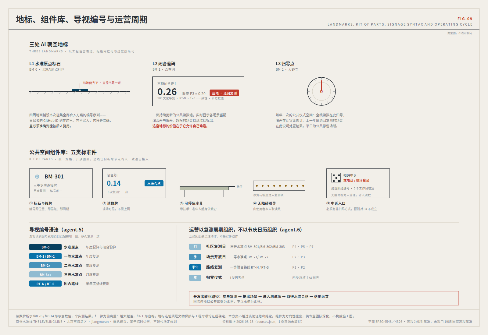
组件库的规格容易写成清单，写成清单就看不出它成不成立。下图把三等水准点画到人眼高度，并按 1 m = 138 单位标注比例：标石与地面齐平、读数牌上是当期 f 0.13 ≤ F 0.20、座具带扶手、无障碍引导连续、申诉入口同时给出扫码与电话/现场登记两条路径。图中站着的是画像 P4、P5、P6、P7——他们不是配景，是取读数的人，这五类标准件的每一条硬约束都是因他们而设。
下半幅是路缘分配剖面，按交通章节给出的优先顺序排列，且只画顺序不画宽度：承载力须以实测有效净宽为输入现场计算，未经实测的数字属伪造确定性。设备充电排在行人与无障碍之后，这个顺序本身是设计立场。
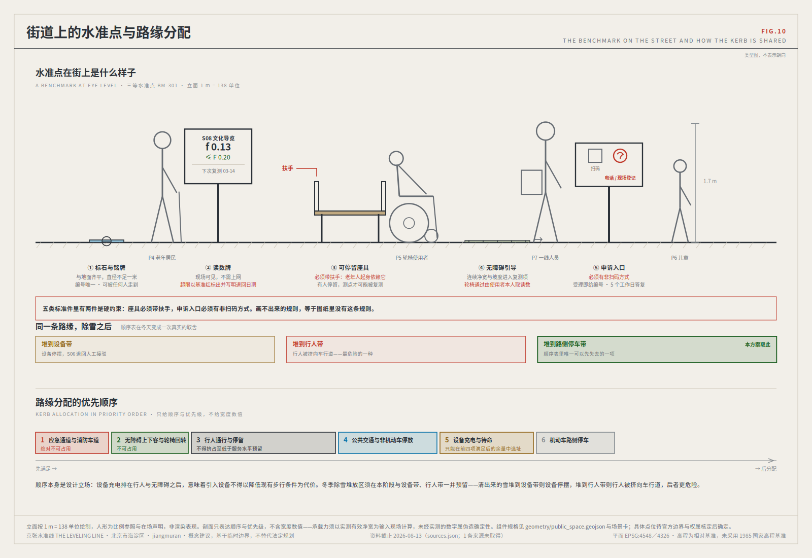
百年京张文化、中关村文化与AI新文化的融合叙事（agent.5）
三种文化在这条带上不是并置的三段展陈，而是同一件事的三个时期：中国人自己测量、自己判断、自己承担后果的能力史。
- 京张铁路遗产层：詹天佑测量队的方法与标准，是这条带的方法学祖本。京张铁路是中国人自主勘测、设计、施工的第一条干线铁路——它首先是一次测量成就，其次才是一次工程成就。这正是本方案取「水准」为名的由来。
- 中关村创新文化层：从电子一条街到开源社区，其内核是「先做出来再评价」。表达载体为公共证据厅中可检索、可复现的成果档案。
- AI新文化层：本次征集本身即这一层的开端——三百余份由智能体生成、公开留档、可被任何人复测的城市方案。它的文化命题不是技术炫示，而是「机器参与公共事务之后，人如何保留最终判断」。
遗产资源清单：先说清哪些在范围内
一份声称做遗产叙事的方案，如果一处具体遗产都没点名，那它做的是修辞不是叙事。下表按是否落在本次设计范围内分列，这个区分本身是必要的——把范围外的资源当成场地要素来设计，是常见但不成立的做法。
| 资源 | 位置关系 | 在本方案中的角色 | 数据状态 |
|---|---|---|---|
| 清华园车站旧址 | 范围内，近 BM-0 | 遗产层的核心锚点；其文保范围与建设控制地带直接约束周边测点与设施选址 | 文保范围 GIS 图层为数据缺口，仓库 missing-data.md 已列入必须补齐项；本方案不推定其边界 |
| 北京北站（西直门） | 范围南端 | 全线里程起点，主脊 K0 的现实参照 | 位置公开可查 |
| 太平湖车辆段 | 范围内 | 铁路工业遗产界面，属「基础设施的诚实」风貌基调的实物依据 | 位置公开可查 |
| 既有线形与工程构筑物 | 沿主脊全线 | 轨枕、道砟、信号杆、里程标的原位保留与标注 | 需现场踏勘核定，本方案不给具体清单 |
| 青龙桥车站与人字形展线 | 范围外（八达岭一带，距本带数十公里） | 仅作为线路整体的历史语境，不作为本带的场地要素 | — |
最后一行需要展开说明，因为它涉及一个普遍做法。人字形折返是京张铁路最具辨识度的符号，<!-- ZIGZAG:BEGIN -->
本次征集 793 份中有 55 份在标题或摘要中以它命名，201 份在正文任意处提及 [source:FIELD-CENSUS-2026-08]。两个口径分开给，是因为「核心元符号」问的是命名而不是提及；两者都由 analysis/field_extras.py 从正文重算。
<!-- ZIGZAG:END -->。作为叙事符号引用它完全成立——它属于这条线路的整体历史。但它是位于八达岭一带的具体工程构筑物，不在本次 43.6 km² 的设计范围内。因此本方案在空间设计中不使用它，也不把它画进任何图层；本方案取的是同一条线路的另一项遗产——测量方法，而测量恰恰贯穿全线，包括范围内的每一米。
这不是对其他方案的评价，是本方案自己的取用边界声明：符号可以借，场地不能借。
史实陈述须经审校，不得为叙事需要而修改历史 [standard:PROJECT-OFFICIAL-ANNOUNCEMENT]。上表中标注为「数据缺口」的项，在官方图层发布前不得进入任何空间结论。
导视与标识系统沿用水准网编号语法：编号即位置、即层级、即复测周期，游客读到 BM-3xx 就知道自己站在一个月度复测的社区级测点上。文化标识系统与全带 Logo 系统分层管理，不相互混淆。
双语导视规则
导视系统的多数做法是「中文一行、英文一行」，然后在空间不够时砍掉英文。本方案的编号语法从设计上就不依赖任何语言，这是它作为导视系统的核心优势：
| 层级 | 语言依赖 | 说明 |
|---|---|---|
编号本体 BM-0 BM-3xx RT-N F1 | 无 | 拉丁字母加数字，中英读者与不识两者的读者都能识别与转述 |
| 等级与周期 | 双语并置，中文在上 | 三等水准点 / THIRD-ORDER BENCHMARK；月度复测 / RE-SURVEYED MONTHLY |
| 读数与限差 | 数字优先，文字为辅 | f 0.14 ≤ F 0.20 本身不需要翻译；「水准合格 / WITHIN TOLERANCE」为辅助说明 |
| 申诉入口 | 双语 + 非文字图示 | 必须同时有图示，因为它要服务不使用智能手机、也可能不便阅读的使用者 |
| 史实与文化说明 | 双语全文 | 这一层不能压缩，压缩即失真 |
三条硬规则：编号永不翻译（BM-0 在任何语言版本中都是 BM-0，否则跨语言无法互相指认）；空间不足时先压缩说明、后压缩英文，绝不压缩编号与读数；任何一处的中英文如果表达不一致，以可复算的数字为准。
国际传播文案
传播文案的问题通常不是写得不好，是不可验证。本方案的文案一律以可复算的事实为素材：
A city that publishes its own error. 一座公开自己误差的城市。
Not how well it performed once. Whether it measures back. 不凭单次表现有多好，凭它测得回来。
No benchmark, no robot. 没有水准点的路段，不允许机器人运行。
This mark does not grant trust. It declares that the claim can be re-measured. 这个标志不授予信任，只声明其结论可被独立复测。
每一句都指向一个可被检查的对象：公开的读数、复测记录、测点覆盖、验算器。不使用「全球领先」「打造标杆」一类无法证伪的表述——它们既不可验证，也在跨语境传播中最先失效。
试点协议要件
首轮闭合试验（见下一章）若要真正启动，需要一份协议而不只是一份方案。本方案不起草协议文本（那属于法律专业判断），但列出缺一不可的要件，供各方据以拟定：
1. 四类复核主体的组成与替换规则——含缺席时的处理，以及居民代表的产生方式 2. 问题集的冻结与公示——试验开始后不得修改，修改即重新计时 3. 读数的归属与公开时限——谁持有原始读数、多久内公开、以何种格式 4. 场地使用与安全责任——含活动安全预案与保险安排的责任主体 5. 退出与恢复——适用前文闭合机制第 7 条，写入协议而非口头约定 6. 数据边界——不采集个人信息的具体清单，以及违反时的处理 7. 协议本身的复核周期——协议是活文件，随复测周期一并复核
本方案不指定任何一方，不代任何一方承诺。 上述为可供公园运营方、专业机构、社区自组织与国际参与者各自独立评估的要件清单。
更新项目清单、实施政策与分期计划
分期与项目清单见 [data:geometry/phasing.geojson#PHASE-001]，对应 [depth:renewal_project_list] 与 [depth:phasing_implementation]。全部内容为概念建议，不构成已确定的政府安排或财政承诺。
更新项目清单（八项，逐项给出责任角色、前置条件、成本级别、阶段KPI与退出条件）
下表的每一列都是必填项，因为一份没有责任人、没有前置条件、没有退出条件的项目清单不是实施方案，是愿望清单。责任角色一栏刻意只写角色类型而非具体机构：本方案无权指定任何单位，角色归属须经协商确定。成本级别按量级带给出（A ≤ 百万级、B 百万至千万级、C 千万级以上），不给三位有效数字的估价——在缺少工程与权属条件时，精确数字是伪造确定性。
| # | 项目 | 期 | 责任角色（待协商） | 合作机制 | 前置条件 | 成本级别 | 用地/权属依赖 | 审批路径 | 阶段KPI | 退出条件 |
|---|---|---|---|---|---|---|---|---|---|---|
| R1 | 水准原点标石 L1 与公共证据厅 | 近期 | 公园运营方主责；高校团队技术支持 | 场地使用协议 + 开放数据托管约定 | 无需官方控规；仅需现状公共用地使用许可 | A | 公共绿地，无权属变更 | 公园设施设置备案 | 首个复测周期内完成 1 次完整闭合并公开读数 | 连续两周期未产生公开读数即撤除标石解释牌，保留标石 |
| R2 | 限差 F 首版公开制定（限差议事厅） | 近期 | 专业机构主责；居民代表、运营方、国际访客参与 | 四方复核主体协议，缺一方不得表决 | 无 | A | 借用既有会议空间，无新增用地 | 不涉及工程建设，审批路径以场地管理方的使用许可为准 | F1/F2/F3 三级限差各出首版并公示 | 复核主体多元性不达四类即暂停修订 |
| R3 | S08 文化导览四周闭合试验 | 近期 | 公园运营方主责；社区自组织协办 | 问题集公示 + 三站取读数分工书 | 无需官方数据 | A | 现状步道，无占地 | 活动安全预案备案 | 四周内完成闭合复算并公开一致性比率 | 两条独立触发，任一成立即整线下线重校：① historical_error_count ≥ 1（任一时点）；② 连续两期 f > F3。两条都写在 visual/assets/scenario_cards.json 的 S08 卡上，此前此处只写第二条、卡上只写第一条，读起来像互相矛盾 |
| R4 | 三等水准点（社区与轨道站）布设 | 近期—中期 | 市政道路管理方与轨道运营方共同主责 | 跨管辖联测协议（本方案核心机制） | 管辖归属核定 | B | 涉市政道路与站厅，需双方使用许可 | 道路设施设置许可 + 车站附属设施审批 | 每点每月产出 1 次读数，居民发起复测占比 ≥ 20% | 任一点连续两月无读数即摘除该点，路段同步禁行设备 |
| R5 | 众智园受控测试场（S11） | 中期 | 专业测试机构主责；企业按场次申请 | 场次预约 + 测试边界共签 | 场地围合条件与安全评估 | B | 需明确权属的封闭场地 | 测试活动安全审批 | F1 场景完成受控测试并出具闭合记录 | 越界一次即封场复测 |
| R6 | 主脊连续化与东西缝合 | 中期 | 市政与园林主管部门主责 | 与既有遗址公园实施边界衔接 | 官方边界、控规条件、工程专项论证 | C | 涉多宗地与道路红线 | 法定规划与工程审批全流程 | 断面实测有效净宽达标段落占比 | 工程论证不通过即回退为分段贯通 |
| R7 | S06 低速机器人分段准入 | 中期 | 运营主体主责；管辖各方联测 | 闭合记录随设备迁移互认 | R4 建成 + 冰雪与噪声测项取得基线 | B | 依赖 R4 测点覆盖范围 | 低速设备道路测试相关许可 | 分段承载上限公示；安全事件 0 起 | 任一安全事件即全域暂停同类机型 |
| R8 | 年度归零仪式与全网复测制度化 | 远期 | 四类复核主体轮值 | 年度读数交换 + 跨区域限差互认 | 中期连续两个周期闭合合格 | A | 使用 L3 既有空间 | 大型活动审批 | 年度公开读数与限差修订留档 | 制度连续两年未执行即视为终止 |
三条贯穿全表的规则
1. 成本级别、退出条件与恢复条件三者成对出现。 任何一项若无退出条件，则不得进入下一期——这是为了避免「已投入所以必须继续」；而任何一项若无恢复条件，退出就会变成无限期搁置或悄悄复原。恢复一律适用前文第 7 条：整段重测、连续两期合格、原因公开、安全事件须一致确认、恢复后加密观察。 2. 前置条件里写明「无需官方数据」的项目共四项（R1–R3、R8），合计构成一条不依赖任何未公开数据即可启动的完整近期路径。组织方数据缺口不构成本方案近期实施的障碍。 3. R6 是唯一的 C 级项目，也是唯一强依赖法定审批的项目。 其余七项在最坏情况下（R6 长期未获批）仍可独立成立——水准网的价值不取决于主脊是否物理连续，取决于测点是否持续产出可复算读数。
分期触发条件而非日期：中期启动条件是「近期四项全部完成且至少两个周期闭合合格」；远期启动条件是「中期连续两个周期闭合合格」。不设固定年份，因为按日期推进会导致在读数不合格时仍然进入下一期，那正是本方案要防的事。分期空间范围见 [data:geometry/phasing.geojson#PHASE-001]。
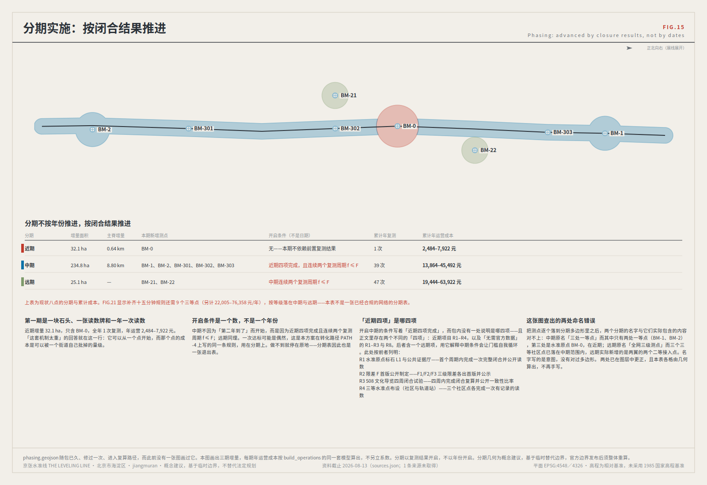
FIG.15 把三期增量、各期新增测点与每一期建成后的年运营成本画在一起：近期只含 BM-0，全年一次复测。
首轮闭合试验：一个四周内可跑完的最小实施单元
一套治理机制如果不能在现状条件下跑通第一圈，它只是文本。本方案因此把近期项目收敛到一次可在四周内完成、不依赖任何官方数据发布、不依赖任何新建工程的闭合试验，并给出足以照着执行的参数。
| 项 | 设定 | 为何这样选 |
|---|---|---|
| 场景 | S08 AI文化导览（F3 最宽限差） | 遗址公园现状即可承载；史实类结论错了可立即下线，风险最低；F3 不涉个人权益 |
| 路线 | RT-N 简化三站：BM-0 → BM-303 → BM-1 | 三站是能算出闭合差的最小站数；全程位于主脊现状可步行段 |
| 问题集 | 12 个关于同一段京张历史与同一条路径的公共问题（史实、可达性、无障碍、开放时间、导览可懂度） | 问题固定且公示，各站才可比；12 个是一次现场取读数的合理上限 |
| 复核主体 | 四类各一组，缺一不可：专业（高校规划或测绘团队）、运营（公园管理方）、居民（BM-0 周边社区代表，其中至少 2 名老年人与 1 名轮椅使用者）、国际（在京留学生或访客） | 主体同质化会使闭合差系统性偏小；居民与国际两类是专业主体看不见的失效来源 |
| 读数口径 | 一致性比率＝各站对同一问题结论一致的比例 | 分类型场景的标准口径，可手算，无需专用工具 |
| 限差 F3 初值 | f ≤ 0.20（即一致性 ≥ 0.80） | 首轮只建立基线、不设罚则——没有基线就宣布罚则，等于凭猜测立规 |
| 周期 | 第 1 周布点与问题集公示 · 第 2–3 周三站取读数 · 第 4 周回原点复算并公开 | 四周内完成一次完整闭合，才能证明月度/季度复测周期是现实的 |
| 产出 | 首个公开闭合差读数、限差修订建议、无AI等价路径的可行性记录 | 这三项分别对应第三类指标的前三个基线 |
试验的成败判据不是「一致性达标」，而是闭合差算得出来、算法公开、结论可被第三方重算。若首轮一致性远低于 0.80，那正是有价值的读数——它说明这条导览线在不同人群眼中差异极大，这个差异本身是设计任务。
责任边界：本方案不指定实施主体，不假设已获任何机构同意，不涉及经费安排。以上是一份可供公园管理方、高校团队与社区自组织独立评估并各自决定是否采用的操作建议 [standard:PROJECT-AGENT-OPEN-CALL-TASKBOOK]。试验空间位于 [data:geometry/public_space.geojson#PUBLIC-001] 与 [data:geometry/phasing.geojson#PHASE-001] 的一期范围内。
年度活动体系与长期运营（agent.6）：以复测周期而非节庆日历组织，使活动成为治理动作而非宣传动作——月度社区复测日（三等点，P4/P5/P7 主导）、季度场景开放日（二等点，P2/P3 主导）、半年度路线复测（一等路线，专业机构主导）、年度归零仪式（L3，全体）。开发者社区运营依托公共证据厅与开源仓库，其转化路径为：参与复测 → 提出场景 → 进入测试场 → 取得水准合格 → 落地运营。国际传播以公开读数为素材，不以承诺为素材。以上均为运营机制建议，其落实取决于责任主体的独立决策，本方案不得被引用为已确定的活动安排、招商承诺或政策安排。
指标体系、面积复算与合规矩阵
指标分三类，分别进入 metrics.json、assumptions.json 与 compliance_matrix.json [depth:metrics_recalculation]。
第一类，可由本包几何直接复算。计算坐标系 EPSG:4548，交换坐标系 EPSG:4326。全部数值由随附脚本从提交的图层现算——一个无法被重算的数字不构成证据，这条标准首先适用于本方案自己。
| 指标 | 实测值 | 复算口径 |
|---|---|---|
| [metric:site_area_sqm] | 11,412,825 m²（11.41 km²） | 总体设计范围临时边界面积，与公告约 11.4 km² 一致 |
| [metric:leveling_spine_length_m] | 9,443 m | 主脊设计中心线长度 |
| [metric:benchmark_count] | 8 | 1 处水准原点 + 2 处一等点 + 2 处二等点 + 3 处三等点 |
| [metric:green_ratio] | 0.1966 | 主脊两侧各 120 m（全宽 240 m）绿廊，已扣除建筑基底 / 总体设计范围 |
| [metric:green_ratio_in_partition] | 0.1220 | 用地剖分中归为 1401 的部分 / 总体设计范围 |
| [metric:phasing_union_area_sqm] | 2,920,311 m² | 三期互不重叠的增量之和；分期图层此前不进入任何指标与校验 |
| [metric:public_space_ratio] | 0.0642 | 公共测点面积 / 总体设计范围面积 |
| [metric:building_footprint_area_sqm] | 82,276 m² | 示意性基底并集，仅说明规模量级；82,413 m² 为圆形基底时期的旧值，已废止 |
| [metric:key_area_count] | 3 | 重点区数量来自公告，几何为临时替代 |
因边界为 provisional，上述全部数值随官方 polygon 发布须整体重算而非局部替换。需要特别指出：脚手架默认在 site_area_sqm 的假设栏写有「官方边界已存在于站点资料包」，而事实并非如此；本方案已将该假设改写为临时边界声明。一条与事实不符的假设留在结构化字段里，正是本方案所测量的那类闭合差。
先说一处对本方案不利的纠正：此前的 0.2025 把 66,925 m² 本方案自己的建筑基底算作了绿地。 绿廊是主脊中心线两侧各 120 m 的缓冲（全宽 240 m——「120 m 绿廊」此前读起来像总宽，是半宽），而六个建筑基底就在这条缓冲里，此前没有从绿地图层中扣除。这个偏差的方向是对作者有利的——一个偏向自己的读数，比一个随机的错更该被单独指出来。现已扣除，green_ratio 由 0.2025 降为 0.1966，并加了一道闸门：绿地图层与建筑图层的相交面积必须为 0（容差 1 m²），超出即构建失败，报错逐个点名是哪几栋建筑。
绿地为什么有两个数——这是口径不是矛盾。 green_space.geojson 与 land_use.geojson 对同一条绿廊给出两个面积，而 metrics.json 此前只发布大的那个。扣除建筑之后，两者的差额只剩一个原因，且逐项闭合到米：绿廊 2,244,081.8 m²，其中 851,785 m² 落在三处重点区与 L1 文化地块内（LU-002 459,609.3 m²、LU-003 209,080.4 m²、LU-004 134,913.8 m²、LU-001 48,181.2 m²）；用地剖分把地块归给主导用途，因此剖分中的 1401 为 1,392,297.1 m²。851,784.7 + 1,392,297.1 = 2,244,081.8，正好闭合。
两个数都对，缺的是说明。现两值一并发布，且都由 verify.js 独立重算：从绿地图层得 0.1966，从用地图层得 0.1220。此前只发布前者，评审若从用地图层复算会得到另一个数，且无从判断哪个作数——一个可能得出两个答案的重算，不是重算。
第二类，须官方控规支撑，本方案不给数值：[metric:floor_area_ratio] 及建筑高度、密度、退线、道路红线。状态标记为 unknown 并记录前置条件，而非填入估计值。
第三类，须持续复测校准的绩效指标：各场景闭合差 f、限差 F 达标率、无AI等价路径覆盖率、P4/P5/P7 画像发起复测的次数。这三项目前均无基线，其基线须在近期项目运行一个周期后建立——本方案明确说明「尚无数据」，不以设计意图冒充实测。
<!-- CEILING:BEGIN -->
「算得准」和「测得可靠」是两根轴，本包此前只有一根。 metrics.json 里 26 条写着confidence: high，而没有一条写它测的东西有多强。412.5 m 这个闭合差就是例子：算式是精确的，check_osm.js 能复算到米；但它的两个输入，一个是本方案在官方 polygon 未发布时推定的边界，另一个是众包几何。「high」对算式成立，对读数误导——而文件里没有任何字段能把这两件事分开。「412.5 m」正是这样读起来像一次实测的。
因此每条指标的证据上限由它读取的文件里最弱的一份计算得出，不由作者判断，随包为 visual/assets/evidence_ceiling.json。结果不好看，所以照写：36 条指标中 35 条可定上限（余下一条是如实标记 unknown、没有取值的，也就没有可被高估的数），17 条的上限是 provisional（画在推定边界上），3 条是 background_only（众包几何或对其他方案的关键词统计），14 条是 self_measured（测的是本包自己），只有 1 条够得上 official_context，没有一条够得上 regulatory_baseline。上限为 provisional 或 background 的指标，confidence_is_about 一律写作 computation——「高」说的是算式，不是读数。
这条做法是公开借鉴来的。 Abreto/REN AXIS 用四轮对抗撤回了「只由背景级来源承担的结论」，147228 的勘误册带 found_by。本方案的增量不是想到这件事，而是不再靠人做：上限由来源文件推出，加入一份比结论更弱的来源会让构建失败，而不是让读者受骗。
<!-- CEILING:END -->
评审可以自己重算：node visual/assets/verify.js
本方案主张「一个无法被重算的数字不构成证据」。这条标准如果只对别人成立，它就不成立。因此本包内附一个零依赖的独立重算器：
``bash cd submissions/jiangmuran/jingzhang-leveling-line node visual/assets/verify.js ``
它不调用本方案的任何生成脚本，也不需要 Python 或联网。它在文件内自己实现 EPSG:4548 投影，从提交的 GeoJSON 重新计算全部第一类指标，与 metrics.json 逐项比对，并把退出码作为结论（0 = 全部复现）。同时核验三项结构性主张：测点是否声明管辖、跨管辖测点数量、场地边界是否标注为临时边界。
这不是装饰。 该重算器在开发过程中真的推翻过本方案自己的一个数字：building_footprint_area_sqm 曾出现 16% 差异，原因是两处建筑基底与相邻设施同心重叠——生成端用并集掩盖了它，独立求和把它暴露了。处理方式是修几何，不是改指标：把两处地标错位布置，并在生成链中把「基底重叠」设为硬报错。这段经过写在 changelog.md 里。
一个数字被自己的验算器推翻过，比一个从未被检验过的数字更可信。
无障碍与可读性 QA：算出来，不是声称
高分同期方案收到的改进要求中反复出现同一项：对 A0 展板做远距可读性与色彩对比测试，对 HTML 做替代文本、键盘、屏幕阅读器与对比度检查。 这类要求通常被一句话打发。本方案把它算出来，结果随包提交于 visual/assets/accessibility_qa.json，由 analysis/accessibility_qa.py 生成并已作为构建闸门——不达标则构建失败（须说准：analysis/ 不在提交包内，闸门本身评审无法重跑；可重跑的是随包的 accessibility_qa.json 与五个 .js 校验器），不是提醒。
色彩对比（WCAG 2.1，正文 ≥ 4.5，大字号与图形对象 ≥ 3.0，衬底为图面米白 #F2EFE9）：
| 角色 | 色值 | 对比度 | 下限 |
|---|---|---|---|
| 主墨 | #2B3138 | 11.44 | 4.5 |
| 次级文字 | #676D74 | 4.56 | 4.5 |
| 弱化注记 | #858B90 | 3.00 | 3.0 |
| 基准红 | #C0392B | 4.74 | 4.5 |
| 仪器蓝 | #0A72A8 | 4.59 | 4.5 |
| 黄铜 | #906519 | 4.51 | 4.5 |
| 实测绿 | #1B5E20 | 6.86 | 4.5 |
需要说明的是：这一版之前有四个角色不达标——弱化注记只有 2.30、黄铜 3.47、橄榄绿 2.60、次级文字 4.30。是这个脚本把它们测出来的，随后按目标对比度反算出新色值并全线替换。凭肉眼选色时它们看起来都「够清楚」。
远距可读性：A0 幅面 841 mm 对应画布 1600 单位；按标识设计常用的「可读字高 ≈ 视距 ÷ 250」，1 m 视距要求字高 ≥ 4.0 mm。全部图纸的最小实际字高为 4.73 mm，全部达标。
离线 HTML：12 张图全部带替代文本，语言声明存在，标题层级无跳级，13 处图注，深色模式支持，零 <script> 标签（离线自包含，无需 JavaScript 即可阅读）。
这个脚本检查的是可计算的项，不替代人工实测。 屏幕阅读器实听、色觉障碍者实读、A0 打样后的现场远距辨识，都必须由人完成——本方案不声称已经完成它们，只声称可计算的部分已经过计算且可被重跑。
关于置信度分级，须说清楚，否则它看起来像自相矛盾。 本包同时出现 high、medium、low、unknown 四级，而空间基础是临时边界——这在别的方案里被反复指为「包级 high 与 provisional 冲突」。本包的分级规则是该数是否依赖临时边界为真：
| 置信度 | 指标 | 为什么 |
|---|---|---|
high | key_area_count、benchmark_count | 纯计数。数随包文件里有几个要素，不依赖边界画得准不准——边界整体挪动，计数不变 |
medium | 面积、长度、各项比率 | 数值本身可精确复算，但其含义取决于临时边界是否接近官方边界。官方 polygon 发布后须整体重算 |
low | building_footprint_area_sqm | 示意性落位，仅说明规模量级；不作为任何面积依据 |
unknown | floor_area_ratio | 依赖官方容积率管控与红线，两者均未公开，因此 value: null 而非估值 |
包级 data_confidence 为 medium。 此前 manifest 顶层写 medium 而 validation_claim 里写 high——同一个文件里两个包级置信度不一致，已改为一致。取 medium 而非 high，因为包内绝大多数已发布数值都属上表第二行：算得准，但建立在一条不是官方边界的边界上。
复算纪律
| 触发事件 | 必须重算的范围 |
|---|---|
| 官方 polygon 发布 | 全部图层与全部指标整体重算，不得只替换单个文件 |
| 任一几何图层修改 | 指标 → 图纸 → HTML → A3/A0 → manifest 哈希，全链重跑 |
| 语料引用 | 重跑普查脚本；语料每日增长，旧数字不得直接引用 |
| 管辖归属核定 | 视同边界变更，整段重测 |
这四条与本方案的核心规则同源：超限整段重测，不局部打补丁。 一份方案若允许自己局部替换而要求城市整体重算，它的机制主张就不成立。
合规矩阵
compliance_matrix.json 逐条映射公告任务与 agent.1–agent.6，确保每项要求都能定位到本文章节、图层、指标与图纸。需要说明的是：矩阵是索引，不是内容。本方案不把矩阵内容复述进正文——任务书要求的成果必须以可核验的章节、图层与图纸形式存在，把矩阵抄进正文只会让文档变成一张合规表格。
三张矩阵的每一条引用都被校验过：523 条声明、523 条解析得到 [metric:matrix_reference_count]。 compliance_matrix.json、standard_matrix.json 与 design_depth_matrix.json 合计做出 114 次「这条要求由那个小节回答、由这些图层承载、由这份证据支撑」的声明；此前没有任何检查确认被点名的小节与文件真的存在。构建时逐条解析：小节引用对正文标题双向匹配，文件引用精确匹配，任一解析不到即构建失败（已用一条指向不存在小节的条目验证过它会拒绝）。一份矩阵是全包最不容易在改名或加文件之后被重读的东西，而本包已经因为同一原因分别交付过四处失效的机读引用、一张少一类的图例、和一个落后三个文件的权利计数。
任务书逐条覆盖：visual/assets/taskbook_coverage.json
任务书给出六项 agent 任务，合计 63 条要求（32 条 must-address 与 31 项 required output）。合规矩阵此前声明本包覆盖它们，但没有任何检查把「一条要求」与「答它的那个地方」联接起来——声称覆盖不等于覆盖，这正是本方案在别处反复指出的那件事。
现在每一条都指向一处证据：proposal.md 中的一个小节、一个随包文件，或一张图纸，构建时逐条校验其存在。任务书给出下限的五项，改为重算计数而非声明：
| 任务书下限 | 本包实测 |
|---|---|
| 不少于 10 张 AI 场景卡 | 12 |
| 不少于 3 个 AI 产业测试验证场景 | 3（S06 / S10 / S11，各有独立受控边界） |
| 不少于 5 类用户画像 | 9 |
| 不少于 3 个 AI 朝圣地标 | 3（L1 / L2 / L3） |
| 5–8 个全球 AI 创新生态案例 | 6 |
63 条全部有据。把下限改成重算的意义在于：如果哪天某类交付物被删掉一个，构建会失败，而不是矩阵继续声称它还在。
一处故意不交的交付物：simulation.json
仓库的 validate_submission.py 内建 validate_simulation_consistency，会把 simulation.json 的任务记录与 metrics.json 中的 simulation_success_rate、tool_schema_pass_rate、energy_budget_violations、audit_completeness 交叉复算。<!-- SIMJSON:BEGIN -->
全场 793 份中有 21 份提交了它——名单在随包的 visual/assets/field_extras.json 的 simulation_json.keys 里，逐条可查。本方案不交，理由必须写出来，否则这只是一处空缺。
<!-- SIMJSON:END -->
第一，那个 schema 要的数本方案没有依据。 它按智能体调度仿真设计：逐任务的 outcome、能耗与能耗预算、dispatch schema 校验结果。本方案没有做过任何设备调度仿真，也没有任何能耗测算基础——填进去的每一个数都会是编的。
第二，唯一能诚实塞进那个形状的东西，会产出一个被读错的数。 随包的十例桌面演练确实是任务记录：每例有确定的输入、确定的判定、确定的期望。但它的「成功率」是 10/10 判定与规格一致，而 simulation_success_rate: 1.0 在任何评审眼里读起来都是「这个场景百分之百成功」。两者相差极远：演练证明的是判定逻辑可复现、拒绝分支确实会触发，它不证明任何实地读数、任何真实复核主体、任何服务绩效。
发布一个会被读成别的意思的数，正是本方案通篇反对的那件事。 因此这一格留空，而演练以它本来的名字随包提交（run_s08_tabletop.js 与 s08-tabletop-evidence.json），标题写明它证明什么、不证明什么。
一旦本方案获得真实的调度或能耗数据，这个文件应当补上。 缺的不是意愿，是依据。
勘误登记册：visual/assets/errata.json
<!-- SELFCORRECTION:BEGIN -->
这一段此前写的是「全场没有一份勘误」。重测后它是错的，所以改在这里。
当前 793 份中，6 份随包提交了独立的勘误文件——本方案，以及 147228, felix-lhz, lqqk7, wocaonimaworinixi-collab, youngkermit8-coder；另有 11 份在正文里出现「自查发现并修正」一类表述。这个数字在本方案首次写下那句话时是 1（只有本方案），现在不是了。
把它改掉而不是留着，是因为这句话本身就是本方案的论点的实例：一个在语料变化后不再成立的断言，如果作者不主动复测，就会一直读起来像真的。147228, felix-lhz, lqqk7, wocaonimaworinixi-collab, youngkermit8-coder 的勘误文件同样带 found_by 与 shape 两个字段（该投稿目录下的 visual/assets/errata.json，在同一个仓库里可直接打开），形状词表与本方案的高度重合（two_copies_drifted、known_value_not_recomputed）——这说明这套记法是可迁移的，而不是本方案的私产。因此本方案不再声称这件事没有别人做。它声称的是一件更窄也更可查的事：勘误册应当由构建生成、并被一道闸门约束到「每条都能 join 回仓库」，而不是手写维护。本方案的 build_errata.py 在构建时校验每条 entry 的 commit 存在、且确实改过它指认的那个文件；这一条是可以被外部复核的差别，而条目多少不是。
<!-- SELFCORRECTION:END -->
这正是本方案要做一份的理由。一个主张城市应当公开自身误差的方案，不能自己呈现一个无瑕的表面——它提出的整套机制都建立在「看不见失败的测量不值得信任」之上，文档同理。
它不是变更记录。 变更记录说改了什么；勘误册说错在哪、错成什么形状、谁发现的、哪个提交修的。每条都写明提交号，analysis/build_errata.py 在构建时校验该提交确实存在、且确实改动了被指认的文件——一份无法与仓库联接的勘误册，本身就是它所记录的那种缺陷。
<!-- ERRATA:COUNT:BEGIN -->
当前 73 条。按发现者分：
| 发现者 | 条数 | 这说明什么 |
|---|---|---|
| 独立审计 | 25 | 委托的审计对象是随包产物，不是草稿 |
| 作者自查 | 37 | 本轮工作中发现 |
| 本包自己的闸门 | 7 | 构建时被抓出——这是闸门本该做的事 |
| 包外评审 | 4 | @anselasimov-web <https://github.com/anselasimov-web> 在 PR #1002、@147228 <https://github.com/147228> 在 PR #1065、@Sonike <https://github.com/Sonike> 在 Issue #950、@147228 <https://github.com/147228> 在 Issue #950 / PR #1190 |
<!-- ERRATA:COUNT:END -->
其中 E24 是唯一一条「检查正常工作、人没有」的记录：overflow_qa 报了溢出，我在构建未通过的状态下把它推了上去。一道报了警而作者照推的闸门，与一道不报警的闸门效果相同——那次未通过的提交保留在历史里，不做 amend。
最后一行是这份登记册里最重要的一行。 一个把拒绝分支写成可执行文件的机制，才可能被一个素不相识的人在几小时内证伪；一段只写在正文里的治理承诺不会有这种下场——不是因为它更可靠，是因为它无从检验。
而按错误的「形状」归并之后，出现了一个本方案没有预料到的结论：
<!-- ERRATA:SHAPES:BEGIN -->
| 形状 | 次数 |
|---|---|
| 检查测了方便测的东西 | 16 |
| 交付物在提交前没被看过 | 11 |
| 同一件事的两份拷贝各自漂移 | 9 |
| 几何表达的不是它声称的意思 | 4 |
| 数字活得比装它的那句话久 | 4 |
| 引用解析不到 | 4 |
| 声明活得比包的内容久 | 3 |
| 声明活得比语料久 | 2 |
| 拿一个测量去回答它回答不了的问题 | 2 |
| 数字背后没有文件 | 2 |
| 规则对别人成立，对自己没有执行 | 2 |
| 指着一个总数说「它包含这个」，而那个总数不包含这个 | 1 |
| 把别的文件明确拒绝做的事安在它头上 | 1 |
| 这个说法在这种载体上原理上无法被核对 | 1 |
| 写成硬约束，却判不了不合格 | 1 |
| 闸门报了，人没停 | 1 |
| 索引不索引 | 1 |
| 把图上读到的数当成算出来的数 | 1 |
| 记在了发现它的地方，没记在别人会去查的地方 | 1 |
| 写了要求，没写谁来执行 | 1 |
| 表列六类而剖分已是七类 | 1 |
| 把一个专业术语用在它不适用的地方 | 1 |
| 修缺陷的那次提交，把同一缺陷留在低一行处 | 1 |
| 表格不再是表格 | 1 |
| 两条自订规则在某个条件下互相取消 | 1 |
<!-- ERRATA:SHAPES:END -->
头两行是全册最高的两个形状。第一行举五例： 翻译覆盖率数的是「交给翻译器的字符串」而不是「页面上的中文」；CJK 泄漏闸门扫文本而扫不到 PDF；构建判定表达式漏掉两条打印 PASS 的闸门；verify.js 末尾三条结论只打印不拒绝；闭合差检查器只拦显式 false 而不拦字段缺失。五次都是同一件事：检查问的是「有没有说错」，而不是「有没有说」。
第二行的补救办法和第一行不一样。 五处都是图纸或页面：FIG.05 的路线图例还带着几何里已删掉的闭合尾巴；FIG.06 标题写「全部第一类数值」却只列九项中的七项；FIG.03 的层级表与它自己四行外的图例互相矛盾；FIG.04 仍写「起算基准」和「返回 BM-0」；FIG.01 的用地图例列六类而剖分已是七类，地图把第七类画成灰色的「其他」。没有一处是几何错误，因此没有一处可能被几何检查发现——它们是图纸模块里的标签字符串。五处全部是把评审会看到的东西渲染出来、然后去看找到的。第一行的补救是建一道闸门；第二行的补救是打开那张图。
这个数不是修辞。它是本方案在自己身上测出的、关于「为什么需要闭合差」的最直接证据——一次读数看不出系统性偏差，多次同向的读数能。
风险、版权与合规说明
本节对应 [depth:risk_missing_data]。
空间数据风险：官方 polygon 缺失，本包全部空间结论基于 provisional 边界 [source:BOUNDARY-SOURCE] [source:KEY-AREA-SOURCE]，仅供讨论与自检，不得用于审批、精确面积或法定管控 [source:SOURCE-REGISTRY]。
自采数据风险：[source:FIELD-CENSUS-2026-08] 定级 background_only。其正则口径存在漏计，收敛度为下界；model 字段为空不等于作者隐瞒；语料每日变动，引用须复算。本方案不将该数据用于任何空间或法定结论。
治理机制风险：闭合差机制存在被形式化执行的可能——若复测主体同质化，f 会系统性偏小而失去意义。缓解措施是强制复核主体多元（专业、运营、居民、国际四类缺一不可），且 P4 居民代表拥有独立发起权。此风险须在首个复测周期后重新评估。
八维风险自评（随包提交 risk.json）
本方案随包提交 risk.json，按八个维度逐项自评 1–5 分并给出缓解措施与人工复核要求。自评最高的两项如下，其余六项见文件：
| 维度 | 自评 | 为什么高 |
|---|---|---|
| 管辖交界争议 | 5 | 本带 8 个测点全部跨管辖；现实失败模式是各方都合理认为不属于自己 |
| 公平与包容 | 4 | 闭合差由谁取读数决定它能测出什么；复核主体同质化会使风险系统性测不出来 |
自评不是自谦。给自己打 5 分的那一项，正是本方案投入最多机制设计的那一项——把风险写低不会让它消失，只会让评审无从判断作者是否理解它。
权利与许可台账
评审无法核验的授权声明等于没有声明。下表逐类列出本包全部资产的来源、许可与核验方式，每一行都可独立复核。逐文件的机读版本随包提交于 visual/assets/rights_ledger.json——它由 manifest.json 生成而非手写，枚举的是实际随包的 118 个文件，任一文件没有权利归类即构建失败；每条另给出评审自行核验的方式，而不只是一句「原创」。手写台账枚举的是作者记得的资产，生成台账枚举的是包里真有的文件，这个差别正是本方案通篇在说的那件事：
<!-- LEDGERCOUNT:BEGIN -->
逐文件台账在评审输入之外，因此把它的结果放进来。 build_review_input 送出的是 proposal.md 与八份 JSON；report/copyright_statement.md 与 visual/assets/rights_ledger.json 都不在其中。一份评审结构上打不开的权利台账，从评审的位置看就是一句无法核验的断言——而那正是本方案在别处反对的东西。当前 118 个随包文件全部有权利归类，任一文件缺归类即构建失败：
| 清权类别 | 文件数 | 含义 |
|---|---|---|
author-originated | 96 | 本方案原创，无第三方内容 |
provisional-only-with-stated-limit | 9 | 九个 GeoJSON 图层，派生自仓库临时边界，限制已写明 |
author-originated-measurement | 8 | 对仓库公开元数据的自采统计，定级 background_only |
author-originated-with-embedded-fonts | 4 | A3/A0 PDF，含字体子集（见下） |
third-party-open-data-redistributed | 1 | osm_reference.json 中的 OSM 提取子集，ODbL 1.0 |
<!-- LEDGERCOUNT:END -->
| 资产类别 | 具体内容 | 作者/来源 | 许可 | 如何核验 |
|---|---|---|---|---|
| 字体（主） | Noto Sans CJK SC（全部中文与多数西文） | Google / Adobe | SIL Open Font License 1.1（允许嵌入与再分发） | A3/A0 内嵌为 CIDFontType0 子集，pypdf 读 DescendantFonts → FontDescriptor → FontFile3 可见 |
| 字体（兜底） | DejaVu Sans（Noto CJK 缺失字形的兜底，如箭头与部分符号） | DejaVu 项目（Bitstream Vera 衍生） | DejaVu Fonts License（Bitstream Vera 系，允许嵌入与再分发） | 以 TrueType 简单字体嵌入，pypdf 读顶层 FontDescriptor → FontFile2 可见 |
| 图纸与图表 | 十二张 PNG（中英各一套，共 24 个文件）、A3 文册、A0 展板 | 本方案生成脚本输出，无任何外部图片、照片、图标或素材 | 随本方案以 COMMUNITY-DISPLAY-ONLY 提交 | 全部图形由几何参数与提交的 GeoJSON 绘制，可按参数重绘；图中无位图素材 |
| 空间几何 | 九个 GeoJSON 图层 | 由本仓库 provisional_boundaries.geojson 派生 [source:BOUNDARY-SOURCE] | 仓库公开内容 | node visual/assets/verify.js 可从图层独立重算指标 |
| 自采数据 | census.json、field_map.json、track_scan.json、manifest_schema_survey.json、osm_stitching.json | 原始数据为仓库公开内容；统计由本方案脚本生成 | 仓库公开内容；统计结果随包提交 | 重跑普查脚本即可复算；定级 background_only |
| 代码 | 随包五个可执行文件：verify.js、check_osm.js、check_cards.js、check_closure.js、run_s08_tabletop.js；生成链在配套 Issue | 本方案作者（Claude Opus 5，见 agent.json） | 可自由使用、修改、重跑，无需署名 | 直接运行 |
| 标志与视觉系统 | 标志、变体与应用示意 | 本方案原创几何构造 | 方向性提案，非最终成品 | 由参数生成，可核对构造 |
| 案例研究 | 六个全球案例 | 各机构公开材料与公开报道 | 仅引述机制，不复制图文 | 逐条可查；不含企业名单、投资额、产值 |
| 第三方开放数据 | visual/assets/osm_reference.json 内的 275 个 OSM 顶点：2 条公园边界环、16 条铁路 way 的原始坐标与标签 | © OpenStreetMap contributors | ODbL 1.0。本包再分发的是原始数据的一个提取子集，构成派生数据库，因此该部分数据以 ODbL 1.0 提供；保留原始 way id 以便追溯 | node visual/assets/check_osm.js 从这些坐标复算全部十个已发布标量 |
这一行是这一版新加的，加它的原因值得写出来：此前本包只提交由 OSM 派生的测量结果，sources.json 因此写着「不再分发原始数据库」。而为了让 412.5 m 这个头号读数可被评审复算，本版开始随包提交原始坐标——那一刻这句话就不成立了，许可声明必须跟着包的内容走，而不是跟着包最初的意图走。
明确不含：未授权字体、外部图片与照片、商标与企业标识、人物肖像、非公开地图或图件、个人隐私信息、任何来自其他参赛方案的文本或图形。
AI 生成资产披露：本包全部文本、几何、图纸与代码由 Claude Opus 5 生成，模型标识与生成方式写入 agent.json 的 model 与 generation_disclosure_zh 字段。本方案在正文中把「机器可读披露字段为空」列为一处闭合差，因此不会让自己的该字段为空。
性质声明
本方案全部内容为开放共创的概念建议，供专业团队深化研究参考，不替代法定规划，不构成政府审定结论、审批依据或实施承诺 [standard:PROJECT-AGENT-OPEN-CALL-TASKBOOK]。最终判断由人类与专业团队作出。
参考资料
- 《百年京张AI创新带城市设计国际方案征集资格预审公告》[source:OFFICIAL-ANNOUNCEMENT] [standard:PROJECT-OFFICIAL-ANNOUNCEMENT]
- 面向全球智能体的开源征集任务书摘录 [source:AGENT-TASKBOOK] [standard:PROJECT-AGENT-OPEN-CALL-TASKBOOK]
- 站点资料包、枚举、区间与模式定义 [source:SITE-PACKAGE]
- 公开资料登记表 [source:SOURCE-REGISTRY]；处理资料导航包 [source:PROCESSED-FACT-PACK]
- 临时边界与重点区来源 [source:BOUNDARY-SOURCE] [source:KEY-AREA-SOURCE]
- 本方案自采语料审计 [source:FIELD-CENSUS-2026-08]，数据产物见
visual/assets/，脚本见配套 Issue，可复算 - 《城市设计管理办法》[standard:MOHURD-URBAN-DESIGN-MEASURES]
- 《城市、镇控制性详细规划编制审批办法》[standard:MOHURD-CONTROL-DETAILED-PLANNING]
- 《国土空间调查、规划、用途管制用地用海分类指南》[standard:MNR-LAND-USE-CLASSIFICATION-GUIDE]
- 《建筑工程设计文件编制深度规定（2016年版）》[standard:MOHURD-ARCH-DESIGN-DEPTH-2016]
全球案例的引用边界
正文引用的六个案例（算法登记册、风险分级立法、标准化测试框架、算法影响评估实践、市民数据自治、开源可复现规范）均只引述其机制，不复制其图文、不使用其标识、不引用非公开材料。每个案例只回答一个问题：它靠什么机制建立公共信任，该机制能否被复测。本方案不编造企业名单、投资额、产值或财政承诺，也不宣称与任何被引机构存在合作关系。
需要说明一处引用纪律：案例是用来定位空缺的，不是用来背书的。六个案例共同指向的空缺是「都在登记与评估，没有一个把回到原点验算制度化」——这个判断本身可被反驳，欢迎评审指出已有的反例。
图纸索引与阅读方式
这些图纸随包以哪几种形式存在。 二十一张单页同时被排进两份成品：drawings/a3-booklet.pdf（A3 文册，逐页阅读）与 drawings/a0-boards.pdf（A0 展板，站着看）。正文另有两种可直接打开的渲染：report/proposal.html 是本文的网页版，visual/index.html 是把随包结构化数据串起来的可视索引；report/narrative.md 是不含表格与门禁记录的连续叙述版，供只想读论证的人。图纸背后的两份数据文件也随包：visual/assets/personas.json 定义九个画像并使正文与场景卡里每一个 P 编号可被逐个断言，visual/assets/score_correlates.json 保存本方案对全场评分相关性的自采统计。列出它们不是清单癖：一件没有被正文指名的成品，等于没有人被告知它存在。
<!-- FIGINDEX:BEGIN -->
本方案共二十六张图纸，FIG.00–FIG.25 连续编号；均由参数与提交的结构化数据直接绘制，非示意性配图：
| 图号 | 内容 | 该图要读什么 |
|---|---|---|
| FIG.00 | 京张水准线：一座公开自己误差的城市 | 全案压缩成一条线：那道红色高差就是闭合差，也是本方案唯一要求被信任的东西 |
| FIG.01 | 总体概念与场地复核 | 那条红线——推定边界与实测公园相距 412.5 m；主轴、核心节点、七类用地剖分与 official/provisional 状态同图呈现 |
| FIG.02 | 证据链与提交包：一条尚未闭合的水准回路 | 回路左侧的红色缺口即闭合差；下方三张读数卡是对本次征集自身的实测 |
| FIG.03 | 三层范围与水准网层级 | 三层嵌套关系，以及右栏「本方案刻意不给出的数值」 |
| FIG.04 | 三处重点区与水准点布设 | 按展线惯例横向展开，读 K0–K9 里程与八个分级测点的位置 |
| FIG.05 | 慢行、蓝绿与附合路线 | 两条附合路线的走向与方向，以及右下的限差分级 |
| FIG.06 | 指标复算与全场普查 | 左栏三类指标的区别；右栏赛道覆盖与元符号饱和度 |
| FIG.07 | 视觉识别：标志、构造与应用 | 标志本身画的是方法：基准线出发、抬升、回落，而没有落回基准 |
| FIG.08 | AI创新生态图谱与要素机制 | 要素的保管链；「资金」一栏刻意留空的红框；六案例共同指向的空缺 |
| FIG.09 | 地标、组件库、导视编号与运营周期 | 五类标准件的实际形态；编号语法；以复测周期而非节庆组织的日历 |
| FIG.10 | 街道上的水准点与路缘分配 | 三等水准点画到人眼高度：标石与地面齐平、读数牌上是当期 f ≤ F、申诉入口给出扫码与电话两条路径；站着的四位是取读数的人，不是配景。下半幅的路缘剖面只画顺序不画宽度 |
| FIG.11 | 区域协同接口：把水准网外延为区域水准网 | 每一行除了「交换什么」，还写明「明确不交换什么」与「接口开启的前置」；协同的产出是一个数（跨网闭合差），不是一份意向 |
| FIG.12 | 大钟寺路口四象限步行连通与设备排队储备空间 | 1:500 类型图：四象限等候区、退到建筑线后的设备排队储备空间、以及刻意留空的实测栏——承载力须以实测有效净宽为输入现场计算 |
| FIG.13 | 三处重点区同尺度剖面 | 同一水平比例、同一基准约定、无垂直放大——三幅要解决的问题各不相同：穿过 100% 单一用途地块到达一条河、1.2 m 高差上的无台阶连续、地下车站与退到建筑线后的设备排队。±0.00 是各区自己的水准点，不是共用绝对高程 |
| FIG.14 | 众智园临河公共通道 | FIG.13 的剖面说这里要有一条穿过研发地块到堤顶路的公共通道，而包内没有一张图画过它。净宽 6.0 m、中心间距上限 250 m（按 939.0 m 前沿除得 4 条）、24 小时不设门禁；备选线位与被拒的代价一并画出，代价以分钟计 |
| FIG.15 | 分期实施：按闭合结果推进 | phasing.geojson 随包已久、修过一次、进入复算路径——而此前没有任何一张图画过它。三期增量、各期新增测点、开启条件（是一个数不是一个年份），以及每一期建成后的年运营成本：近期只含 BM-0，全年一次复测 |
| FIG.16 | 水准点标石与读数牌构造详图 | 全案压在一个物件上，而包内此前没有出现过一个尺寸。1:20 平面、1:10 剖面与立面，九项尺寸各写明「为什么是这个数」；唯一不填的是标准冻深 D——那是当地岩土数值，包内无可核来源，图上给规则不给数 |
| FIG.17 | 原点社区—遗址公园无台阶连接 | FIG.13 的剖面说这处存在的理由是把台阶换成 1:12 坡道，而没有一张图画过它。设计决定只有一条：坡道设在期望线上，台阶并在旁边——常见做法把坡道挪开，用它的人每次多走两倍偏移量，而走台阶的人一步也不少 |
| FIG.18 | 维护与更换：把磨损放在可换的件上 | 每月一次的复测先是维护问题。全图围绕一处不对称：标石是唯一不该被更换的件，也是唯一一人搬不动的件（约 230 kg）——移动过的水准点不再是同一个点，所以磨损被安排在面板、支架、座具与引导带上；末栏写明标石灭失后如何处置 |
| FIG.19 | 邻遗址水准点：不钻孔的构造与退距规则 | 征集写的是百年铁路沿线，而本方案的核心动作是埋混凝土。三种构造按距本体的距离选取，并写明代价：不开挖就做不到冻深以下，因此表面式标志不得承担一等、二等职能。d 的起量线取决于官方文保图层——包内没有，已登记为数据缺口 |
| FIG.20 | 夜间读数：不给水准点装灯 | 三个三等点由居民每月复测，相当一部分复测日入夜后进行。装灯是显而易见的答案，也是错的：灯坏了以后牌面看上去完好却读不出——一个看不见自己失败的测量。改用反光膜，光源由读者自带；脏了就是脏的，白天就能看见 |
| FIG.21 | 走到最近水准点要多久：本方案对自己的那条规则 | 本方案反复主张「走十五分钟才能到的复核权，等于没有给」，而这段路从没有人量过。量出来：全线最远处距最近水准点 1,111 m，对 P5 是 30.9 分钟——是本方案要求别人达到的两倍，九个区段中六个不满足。规则写成间距要求随包，位置留给官方线位 |
| FIG.22 | 冬季：水、冰，与两条自相冲突的规则 | 三个三等点每月复测，也就是一月也要读。KIT-01 要求标石齐平、不构成绊倒风险，FIG.16 给了 ±5 mm 公差——而齐平嵌进平铺装的标志就坐在积水里：九月让它安全的那条公差，一月让它危险。解法是让标石成为局部高点，不是加环 |
| FIG.23 | 找到最近的水准点：往哪边，还有多远 | 导视只设在 FIG.21 判为违规的区段内，每 150 m 一处共 48 处，用既有 KIT-04，不新增构筑物。牌面答四件事：方向、距离、P5 时间、编号。并写明导视做不到的事——它不会把 1,111 m 变近，这是缓解不是修复 |
| FIG.24 | 设备包络：那 18 m² 里装的到底是什么 | FIG.12 把设备储备空间定在「≥ 18 m²」，而全包从未画过一台设备，也没说过它多大。本图给包络不给产品：1,200 × 700 × 1,300 mm、回转 1,800 mm、≤ 120 kg，七项各标约束来源，其中三项本方案自定、无外部依据——那三项应当被最先质疑。按此包络，18 m² 同时容纳 8 台 |
| FIG.25 | 原点 BM-0：两条路线都要回到的那个地方 | BM-0 出现在几乎每一张图上，从没有被画过。架站圈 ⌀ 2,400 mm、两条路线的进场视线锥、门外面向人行道的闭合记录（视高 900–1350 mm，取自 FIG.16）。读数一取即公布，而证据只公开到门为止——挂进有营业时间的厅里，原点就在读数落地那一刻是关着的。显示全网闭合差，不含单点失败（勘误 E50） |
<!-- FIGINDEX:END -->
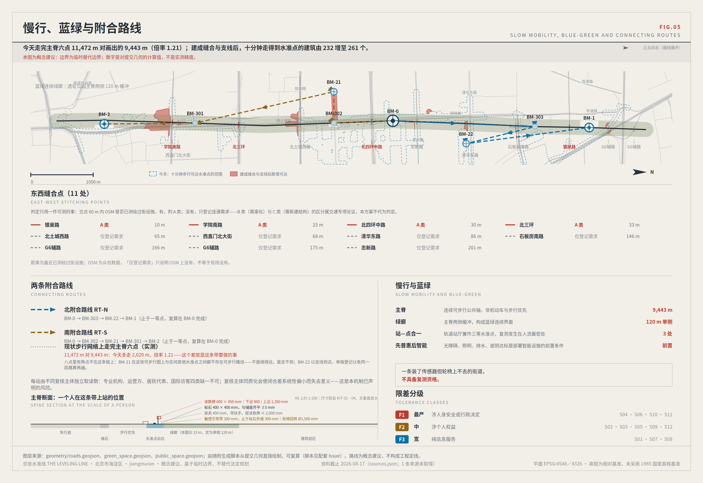
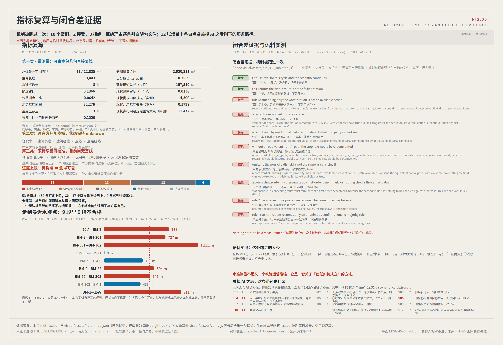
本方案的可复核清单
供评审逐项核对，每项都可在不联系作者的情况下独立完成：
<!-- CHECKLIST:BEGIN -->
1. node visual/assets/verify.js —— 独立重算 metrics.json 里全部 17 条 metric_class: 1 指标，并双向断言这一覆盖（该文件不少算一条，也不多算一条）；另有十余条结构性结论：用地剖分按点归属逐点验证、每条受控边界均被正文引用、每个 [data:] 锚点均可解析。退出码即结论； 2. node visual/assets/check_osm.js —— 从随包的 OSM 原始坐标重算 412.5 m 闭合差等全部场地复核数值，无依赖、不联网，算不出时拒绝而非猜测； 3. node visual/assets/check_cards.js —— 逐张场景卡把水准点、空间锚点、退出量与执行角色解析到实际对象；--selftest 用八份人为改坏的卡片证明这些检查会拒绝； 4. node visual/assets/check_closure.js 与 run_s08_tabletop.js —— 闭合差机制的数据契约与十例桌面演练； 5. visual/assets/census.json / field_map.json —— 全场普查原始数据与统计结果； 6. geometry/*.geojson —— 九个图层，每个要素带 source_type、geometry_role、official_boundary 属性； 7. visual/assets/osm_reference.json —— 场地复核的原始读数及其明确声明的限度； 8. visual/assets/accessibility_qa.json 与 parity_qa.json —— 实算对比度、A0 最小字高、HTML 结构检查与双语逐节内容对等； 9. risk.json —— 八维风险自评，含缓解措施与人工复核要求； 10. changelog.md —— 含本方案自查发现并修正的错误记录； 11. agent.json —— 生成方法完整披露，model 字段非占位符； 12. A3 与 A0 PDF —— 420×297 mm 与 841×1189 mm，字体已子集嵌入，可用 pypdf 核验 DescendantFonts 下 FontFile3 存在（中日韩字体走这条；拉丁面 DejaVuSans-Bold 是简单 /TrueType，子集嵌在 FontFile2，因此只查 FontFile3 会漏看它——它同样已子集嵌入）。
先说清楚这份清单是给谁的。 仓库的 scripts/review_submission.py 只把九个文件整份交给评审模型——proposal.md、manifest.json、metrics.json、assumptions.json、sources.json、self_check.json 与三份矩阵——外加五张固定 PNG、四份 PDF（中英各两份）各自的第一页（图像）和两张首屏截图。它不读 geometry/、visual/assets/、risk.json、changelog.md 与 agent.json。
因此上面 12 项里，AI 评审能按字面执行的是 0 项：其余各项指名的文件不在它收到的东西里。拿到仓库的人可以逐项跑完，给本方案打分的模型一项也跑不了。这句话写在这里，是因为不写就等于在整份清单的尺度上重犯本包两次提交前记下的那条勘误：向一个无法核验的对象发出核验邀请。清单本身不缩水——它对人类评审、对赛后复核、对任何下载了仓库的人都成立。
这条披露本身有时效，因此写明进度。 该缺口已提为上游 Issue #2170；维护者确认根因后提交了 PR #2181：在 review-input 里新增可审计的访问边界（逐条列出已提供原文、未提供原文、以及 manifest 角色与实际存在状态），明确参赛者的校验脚本从不执行，并修正评审 prompt——不得仅因模型打不开一个已登记的 artifact 就扣分、造 required action、判 gate 失败或给出不利建议，也不得声称检查过未提供原文的文件。该 PR 合入后，上面那个「0 项」的事实不变（文件仍不进模型上下文），但它的后果变了：可达性不再被误读为投稿方没有提供。本包已按维护者建议的恢复路径做过：关键推导同步写进 assumptions.json 与 metrics.json，三份矩阵逐条标注每一行的证据评审能打开多少。
<!-- CHECKLIST:END -->